The Checker Framework Manual: |
For the impatient: Section 1.3 describes how to install and use pluggable type-checkers.
The Checker Framework enhances Java’s type system to make it more powerful and useful. This lets software developers detect and prevent errors in their Java programs.
A “checker” is a tool that warns you about certain errors or gives you a guarantee that those errors do not occur. The Checker Framework comes with checkers for specific types of errors:
These checkers are easy to use and are invoked as arguments to javac.
The Checker Framework also enables you to write new checkers of your own; see Chapters 20 and 28.
If you wish to get started using some particular type system from the list above, then the most effective way to read this manual is:
The Checker Framework supports adding pluggable type systems to the Java language in a backward-compatible way. Java’s built-in type-checker finds and prevents many errors — but it doesn’t find and prevent enough errors. The Checker Framework lets you run an additional type-checker as a plug-in to the javac compiler. Your code stays completely backward-compatible: your code compiles with any Java compiler, it runs on any JVM, and your coworkers don’t have to use the enhanced type system if they don’t want to. You can check only part of your program. Type inference tools exist to help you annotate your code; see Chapter 26.2.
A type system designer uses the Checker Framework to define type qualifiers and their semantics, and a compiler plug-in (a “checker”) enforces the semantics. Programmers can write the type qualifiers in their programs and use the plug-in to detect or prevent errors. The Checker Framework is useful both to programmers who wish to write error-free code, and to type system designers who wish to evaluate and deploy their type systems.
This document uses the terms “checker”, “checker plugin”, “type-checking compiler plugin”, and “annotation processor” as synonyms.
This section describes how to install the Checker Framework. (If you wish to use the Checker Framework from Eclipse, see the Checker Framework Eclipse Plugin webpage instead: http://types.cs.washington.edu/checker-framework/eclipse/.) (If you wish to try the Checker Framework without installing it, use the Checker Framework Live Demo webpage.)
The Checker Framework release contains everything that you need, both to run checkers and to write your own checkers. As an alternative, you can build the latest development version from source (Section 31.3).
Requirement: You must have JDK 7 or later installed. You can get JDK 7 from Oracle or elsewhere. If you are using Apple Mac OS X, you can use Apple’s implementation, SoyLatte, or the OpenJDK.
The installation process is simple! It has two required steps and one optional step.
That’s all there is to it! Now you are ready to start using the checkers.
We recommend that you work through the Checker Framework tutorial, which walks you through how to use the Checker Framework in Eclipse or on the command line. There is also a Nullness Checker tutorial by David Bürgin.
Section 1.4 walks you through a simple example. More detailed instructions for using a checker appear in Chapter 2.
This section gives a very simple example of running the Checker Framework. There is also a tutorial that gives more extensive instructions for using the Checker Framework in Eclipse or on the command line, and a Nullness Checker tutorial by David Bürgin.
import org.checkerframework.checker.nullness.qual.*;
public class GetStarted {
void sample() {
@NonNull Object ref = new Object();
}
}
javac -processor org.checkerframework.checker.nullness.NullnessChecker GetStarted.java
where javac is set as in Section 29.1.
The compilation should complete without any errors.
@NonNull Object ref = null;
GetStarted.java:5: incompatible types.
found : @Nullable <nulltype>
required: @NonNull Object
@NonNull Object ref = null;
^
1 error
The type qualifiers (e.g., @NonNull) are permitted anywhere that you can write a type, including generics and casts; see Section 2.1. Here are some examples:
@Interned String intern() { ... } // return value int compareTo(@NonNull String other) { ... } // parameter @NonNull List<@Interned String> messages; // non-null list of interned Strings
A pluggable type-checker enables you to detect certain bugs in your code, or to prove that they are not present. The verification happens at compile time.
Finding bugs, or verifying their absence, with a checker plugin is a two-step process, whose steps are described in Sections 2.1 and 2.2.
This chapter is structured as follows:
Additional topics that apply to all checkers are covered later in the manual:
Finally, there is a tutorial that walks you through using the Checker Framework in Eclipse or on the command line, and a separate Nullness Checker tutorial.
The syntax of type annotations in Java is specified by the Java Language Specification (Java SE 8 edition).
Java 5 defines declaration annotations such as @Deprecated, which apply to a class, method, or field, but do not apply to the method’s return type or the field’s type. They are typically written on their own line in the source code.
Java 8 defines type annotations, which you write immediately before any use of a type, including in generics and casts. Because array levels are types and receivers have types, you can also write type annotations on them. Here are a few examples of type annotations:
@Interned String intern() { ... } // return value int compareTo(@NonNull String other) { ... } // parameter String toString(@Tainted MyClass this) { ... } // receiver ("this" parameter) @NonNull List<@Interned String> messages; // generics: non-null list of interned Strings @Interned String @NonNull [] messages; // arrays: non-null array of interned Strings myDate = (@Initialized Date) beingConstructed; // cast
You only need to write annotations on method signatures and fields. Annotations within method bodies are inferred for you; for more details, see Section 23.4.
You may write the annotations within comments, as in List</*@NonNull*/ String>. The Checker Framework compiler, which is distributed with the Checker Framework, will still process the annotations. However, your code will remain compilable by people who are not yet using Java 8. For more details, see Section 25.2.1.
To run a checker plugin, run the compiler javac as usual, but pass the -processor plugin_class command-line option. A concrete example (using the Nullness Checker) is:
javac -processor NullnessChecker MyFile.java
where javac is as specified in Section 29.1.
You can also run a checker from within your favorite IDE or build system. See Chapter 29 for details about Ant (Section 29.2), Maven (Section 29.3), Gradle (Section 29.4), IntelliJ IDEA (Section 29.6), Eclipse (Section 29.7), and tIDE (Section 29.8), and about customizing other IDEs and build tools.
The checker is run on only the Java files that javac compiles. This includes all Java files specified on the command line (or created by another annotation processor). It may also include other of your Java files (but not if a more recent .class file exists). Even when the checker does not analyze a class (say, the class was already compiled, or source code is not available), it does check the uses of those classes in the source code being compiled.
You can always compile the code without the -processor command-line option, but in that case no checking of the type annotations is performed. Furthermore, only explicitly-written annotations are written to the .class file; defaulted annotations are not, and this will interfere with type-checking of clients that use your code. Therefore, it is strongly recommended that whenever you are creating .class files that will be distributed or compiled against, you run the type-checkers for all the annotations that your have written.
You have two main options for distributing your compiled code (.jar files).
Write annotations in comments (see Section 25.2.1). Developers perform pluggable type-checking in-house to detect errors and verify their absence. To create the distributed .jar files, use a normal Java compiler, which ignores the annotations.
Write annotations in comments or not in comments (it doesn’t matter which). Developers perform pluggable type-checking in-house to detect errors and verify their absence. When you create .class files, use the Checker Framework compiler (Section 29) and running each relevant type system. Create the distributed .jar files from those .class files, and also include the contents of checker-framework/checker/dist/checker-qual.jar from the Checker Framework distribution, to define the annotations.
You can pass command-line arguments to a checker via javac’s standard -A option (“A” stands for “annotation”). All of the distributed checkers support the following command-line options.
Unsound checking: ignore some errors
More sound (strict) checking: enable errors that are disabled by default
Type-checking modes: enable/disable functionality
Partially-annotated libraries
Inference
Debugging
Some checkers support additional options, which are described in that checker’s manual section. For example, -Aquals tells the Subtyping Checker (see Chapter 20) and the Fenum Checker (see Chapter 7) which annotations to check.
Here are some standard javac command-line options that you may find useful. Many of them contain the word “processor”, because in javac jargon, a checker is an “annotation processor”.
“Auto-discovery” makes the javac compiler always run a checker plugin, even if you do not explicitly pass the -processor command-line option. This can make your command line shorter, and ensures that your code is checked even if you forget the command-line option.
To enable auto-discovery, place a configuration file named META-INF/services/javax.annotation.processing.Processor in your classpath. The file contains the names of the checker plugins to be used, listed one per line. For instance, to run the Nullness Checker and the Interning Checker automatically, the configuration file should contain:
org.checkerframework.checker.nullness.NullnessChecker org.checkerframework.checker.interning.InterningChecker
You can disable this auto-discovery mechanism by passing the -proc:none command-line option to javac, which disables all annotation processing including all pluggable type-checking.
Ordinarily, the -processor flag expects fully-qualified class names. For checkers that are packaged with the Checker Framework, the fully-qualified name can be quite long. Therefore, when running a built-in checker, you may omit the package name and the Checker suffix. The following three commands are equivalent:
javac -processor org.checkerframework.checker.nullness.NullnessChecker MyFile.java javac -processor NullnessChecker MyFile.java javac -processor nullness MyFile.java
This feature will work when multiple checkers are specified. For example:
javac -processor NullnessChecker,RegexChecker MyFile.java javac -processor nullness,regex MyFile.java
This feature does not apply to Javac @argfiles.
A checker can guarantee that a particular property holds throughout the code. For example, the Nullness Checker (Chapter 3) guarantees that every expression whose type is a @NonNull type never evaluates to null. The Interning Checker (Chapter 5) guarantees that every expression whose type is an @Interned type evaluates to an interned value. The checker makes its guarantee by examining every part of your program and verifying that no part of the program violates the guarantee.
There are some limitations to the guarantee.
In each of these cases, any use of the code is checked — for example, a call to a native method must be compatible with any annotations on the native method’s signature. However, the annotations on the un-checked code are trusted; there is no verification that the implementation of the native method satisfies the annotations.
A checker can be useful in finding bugs or in verifying part of a program, even if the checker is unable to verify the correctness of an entire program.
In order to avoid a flood of unhelpful warnings, many of the checkers avoid issuing the same warning multiple times. For example, in this code:
@Nullable Object x = ...; x.toString(); // warning x.toString(); // no warning
In this case, the second call to toString cannot possibly throw a null pointer warning — x is non-null if control flows to the second statement. In other cases, a checker avoids issuing later warnings with the same cause even when later code in a method might also fail. This does not affect the soundness guarantee, but a user may need to examine more warnings after fixing the first ones identified. (More often, at least in our experience to date, a single fix corrects all the warnings.)
If you find that a checker fails to issue a warning that it should, then please report a bug (see Section 31.2).
Annotating an entire existing program may seem like a daunting task. But, if you approach it systematically and do a little bit at a time, you will find that it is manageable.
Start small, focusing on some specific property that matters to you and on the most mission-critical or error-prone part of your code. It is easiest to add annotations if you know the code or the code contains documentation; you will find that you spend most of your time understanding the code, and very little time actually writing annotations or running the checker.
Start by annotating just part of your program. Be systematic; we recommend annotating an entire class at a time (not just some of the methods) so that you don’t lose track of your work or redo work. For example, working class-by-class avoids confusion about whether an unannotated type means you determined that the default is desirable, or it means you didn’t yet examine that type. You may find it helpful to start annotating the leaves of the call tree — that is, start with methods/classes/packages that have few dependencies on other code or, equivalently, start with code that a lot of your other code depends on. The reason for this is that it is easiest to annotate a class if the code it calls has already been annotated.
For each class, read its Javadoc. For instance, if you are adding annotations for the Nullness Checker (Section 3), then you can search the documentation for “null” and then add @Nullable anywhere appropriate. For now, just annotate signatures and fields; there is no need to annotate method bodies. The only reason to even read the method bodies yet is to determine signature annotations for undocumented methods — for example, if the method returns null, you know its return type should be annotated @Nullable, and a parameter that is compared against null may need to be annotated @Nullable.
After you have annotated all the signatures, run the checker. Then, fix bugs in code and add/modify annotations as necessary. Don’t get discouraged if you see many type-checker warnings at first. Often, adding just a few missing annotations will eliminate many warnings, and you’ll be surprised how fast the process goes overall.
You may wonder about the effect of adding a given annotation — how many other annotations it will require, or whether it conflicts with other code. Suppose you have added an annotation to a method parameter. You could manually examine all callees. A better way can be to save the checker output before adding the annotation, and to compare it to the checker output after adding the annotation. This helps you to focus on the specific consequences of your change.
Also see Chapter 24, which tells you what to do when you are unable to eliminate checker warnings, and Chapter 27, which tells you how to annotate libraries that your code uses.
The checker infers annotations for local variables (see Section 23.4). Usually, you only need to annotate fields and method signatures. After doing those, you can add annotations inside method bodies if the checker is unable to infer the correct annotation, if you need to suppress a warning (see Section 24), etc.
You should use annotations to specify normal behavior. The annotations indicate all the values that you want to flow to a reference — not every value that might possibly flow there if your program has a bug.
Many methods are guaranteed to throw an exception if they are passed null as an argument. Examples include
java.lang.Double.valueOf(String) java.lang.String.contains(CharSequence) org.junit.Assert.assertNotNull(Object) com.google.common.base.Preconditions.checkNotNull(Object)
@Nullable (see Section 3.2) might seem like a reasonable annotation for the parameter, for two reasons. First, null is a legal argument with a well-defined semantics: throw an exception. Second, @Nullable describes a possible program execution: it might be possible for null to flow there, if your program has a bug.
However, it is never useful for a programmer to pass null. It is the programmer’s intention that null never flows there. If null does flow there, the program will not continue normally (whether or not it throws a NullPointerException).
Therefore, you should mark such parameters as @NonNull, indicating the intended use of the method. When you use the @NonNull annotation, the checker is able to issue compile-time warnings about possible run-time exceptions, which is its purpose. Marking the parameter as @Nullable would suppress such warnings, which is undesirable.
If a method can possibly throw exception because its parameter is null, then that parameter’s type should be @NonNull, which guarantees that the type-checker will issue a warning for every client use that has the potential to cause an exception. Don’t write @Nullable on the parameter just because there exist some executions that don’t necessarily throw an exception.
An annotation indicates a guarantee that a client can depend upon. A subclass is not permitted to weaken the contract; for example, if a method accepts null as an argument, then every overriding definition must also accept null. A subclass is permitted to strengthen the contract; for example, if a method does not accept null as an argument, then an overriding definition is permitted to accept null.
As a bad example, consider an erroneous @Nullable annotation in com/google/common/collect/Multiset.java:
101 public interface Multiset<E> extends Collection<E> {
...
122 /**
123 * Adds a number of occurrences of an element to this multiset.
...
129 * @param element the element to add occurrences of; may be {@code null} only
130 * if explicitly allowed by the implementation
...
137 * @throws NullPointerException if {@code element} is null and this
138 * implementation does not permit null elements. Note that if {@code
139 * occurrences} is zero, the implementation may opt to return normally.
140 */
141 int add(@Nullable E element, int occurrences);
There exist implementations of Multiset that permit null elements, and implementations of Multiset that do not permit null elements. A client with a variable Multiset ms does not know which variety of Multiset ms refers to. However, the @Nullable annotation promises that ms.add(null, 1) is permissible. (Recall from Section 2.4.3 that annotations should indicate normal behavior.)
If parameter element on line 141 were to be annotated, the correct annotation would be @NonNull. Suppose a client has a reference to same Multiset ms. The only way the client can be sure not to throw an exception is to pass only non-null elements to ms.add(). A particular class that implements Multiset could declare add to take a @Nullable parameter. That still satisfies the original contract. It strengthens the contract by promising even more: a client with such a reference can pass any non-null value to add(), and may also pass null.
However, the best annotation for line 141 is no annotation at all. The reason is that each implementation of the Multiset interface should specify its own nullness properties when it specifies the type parameter for Multiset. For example, two clients could be written as
class MyNullPermittingMultiset implements Multiset<@Nullable Object> { ... }
class MyNullProhibitingMultiset implements Multiset<@NonNull Object> { ... }
or, more generally, as
class MyNullPermittingMultiset<E extends @Nullable Object> implements Multiset<E> { ... }
class MyNullProhibitingMultiset<E extends @NonNull Object> implements Multiset<E> { ... }
Then, the specification is more informative, and the Checker Framework is able to do more precise checking, than if line 141 has an annotation.
It is a pleasant feature of the Checker Framework that in many cases, no annotations at all are needed on type parameters such as E in MultiSet.
In the checkers distributed with the Checker Framework, an annotation on a constructor invocation is equivalent to a cast on a constructor result. That is, the following two expressions have identical semantics: one is just shorthand for the other.
new @Untainted Date() (@Untainted Date) new Date()
However, you should rarely have to use this. The Checker Framework will determine the qualifier on the result, based on the “return value” annotation on the constructor definition. The “return value” annotation appears before the constructor name, for example:
class MyClass {
@Untainted MyClass() { ... }
}
In general, you should only use an annotation on a constructor invocation when you know that the cast is guaranteed to succeed.
When you first run a type-checker on your code, it is likely to issue warnings or errors. For each warning, try to understand why the checker issues it. (If you think the warning is wrong, then formulate an argument about why your code is actually correct; also see Section 31.1.2.) For example, if you are using the Nullness Checker (Chapter 3), try to understand why it cannot prove that no null pointer exception ever occurs. There are three general reasons, listed below. You will need to examine your code, and possibly write test cases, to understand the reason.
If you have trouble understanding a Checker Framework warning message, you can search for its text in this manual. Oftentimes there is an explanation of what to do.
Also see Chapter 31, Troubleshooting.
If the Nullness Checker issues no warnings for a given program, then running that program will never throw a null pointer exception. This guarantee enables a programmer to prevent errors from occurring when a program is run. See Section 3.1 for more details about the guarantee and what is checked.
The most important annotations supported by the Nullness Checker are @NonNull and @Nullable. @NonNull is rarely written, because it is the default. All of the annotations are explained in Section 3.2.
To run the Nullness Checker, supply the -processor org.checkerframework.checker.nullness.NullnessChecker command-line option to javac. For examples, see Section 3.5.
The NullnessChecker is actually an ensemble of three pluggable type-checkers that work together: the Nullness Checker proper (which is the main focus of this chapter), the Initialization Checker (Section 3.8), and the Map Key Checker (Chapter 4). Their type hierarchies are completely independent, but they work together to provide precise nullness checking.
The checker issues a warning in these cases:
As a special case of an of @NonNull type becoming null, the checker also warns whenever a field of @NonNull type is not initialized in a constructor. Also see the discussion of the -Alint=uninitialized command-line option below.
This example illustrates the programming errors that the checker detects:
@Nullable Object obj; // might be null @NonNull Object nnobj; // never null ... obj.toString() // checker warning: dereference might cause null pointer exception nnobj = obj; // checker warning: nnobj may become null if (nnobj == null) // checker warning: redundant test
Parameter passing and return values are checked analogously to assignments.
The Nullness Checker also checks the correctness, and correct use, of rawness annotations for checking initialization (see Section 3.8.7) and of map key annotations (see Chapter 4).
The checker performs additional checks if certain -Alint command-line options are provided. (See Section 24.6 for more details about the -Alint command-line option.)
The Nullness Checker uses three separate type hierarchies: one for nullness, one for rawness (Section 3.8.7), and one for map keys (Chapter 4) The Nullness Checker has four varieties of annotations: nullness type qualifiers, nullness method annotations, rawness type qualifiers, and map key type qualifiers.
The nullness hierarchy contains these qualifiers:
The @NonNull annotation is rarely written in a program, because it is the default (see Section 3.3.2).
Because the Nullness Checker works intraprocedurally (it analyzes one method at a time), when a MonotonicNonNull field is first read within a method, the field cannot be assumed to be non-null. The benefit of MonotonicNonNull over Nullable is its different interaction with flow-sensitive type qualifier refinement (Section 23.4). After a check of a MonotonicNonNull field, all subsequent accesses within that method can be assumed to be NonNull, even after arbitrary external method calls that have access to the given field.
It is permitted to initialize a MonotonicNonNull field to null, but the field may not be assigned to null anywhere else in the program. If you supply the noInitForMonotonicNonNull lint flag (for example, supply -Alint=noInitForMonotonicNonNull on the command line), then @MonotonicNonNull fields are not allowed to have initializers.
Use of @MonotonicNonNull on a static field is a code smell: it may indicate poor design. You should consider whether it is possible to make the field a member field that is set in the constructor.
Figure 3.1 shows part of the type hierarchy for the Nullness type system. (The annotations exist only at compile time; at run time, Java has no multiple inheritance.)
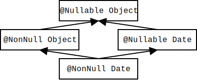
Figure 3.1: Partial type hierarchy for the Nullness type system. Java’s Object is expressed as @Nullable Object. Programmers can omit most type qualifiers, because the default annotation (Section 3.3.2) is usually correct. The Nullness Checker verifies three type hierarchies: this one for nullness, one for initialization (Section 3.8), and one for map keys (Chapter 4).
The Nullness Checker supports several annotations that specify method behavior. These are declaration annotations, not type annotations: they apply to the method itself rather than to some particular type.
The Nullness Checker invokes an Initialization Checker, whose annotations indicate whether an object is fully initialized — that is, whether all of its fields have been assigned.
Use of these annotations can help you to type-check more code. Figure 3.3 shows its type hierarchy. For details, see Section 3.8.
A slightly simpler variant, called the Rawness Initialization Checker, is also available:
Figure 3.7 shows its type hierarchy. For details, see Section 3.8.7.
indicates that a value is a key for a given map — that is, indicates whether map.containsKey(value) would evaluate to true.
This annotation is checked by a Map Key Checker (Chapter 4) that the Nullness Checker invokes. The @KeyFor annotation enables the Nullness Checker to treat calls to Map.get precisely rather than assuming it may always return null. In particular, a call mymap.get(mykey) returns a non-null value if two conditions are satisfied:
If either of these two conditions is violated, then mymap.get(mykey) has the possibility of returning null.
As described in Section 23.3, the Nullness Checker adds implicit qualifiers, reducing the number of annotations that must appear in your code. For example, enum types are implicitly non-null, so you never need to write @NonNull MyEnumType.
For a complete description of all implicit nullness qualifiers, see the Javadoc for NullnessAnnotatedTypeFactory.
Unannotated references are treated as if they had a default annotation. The standard defaulting rule is CLIMB-to-top, described in Section 23.3.2. Its effect is to default all types to @NonNull, except that @Nullable is used for casts, locals, instanceof, and implicit bounds. A user can choose a different defaulting rule.
The Nullness Checker supports a form of conditional nullness types, via the @EnsuresNonNullIf method annotations. The annotation on a method declares that some expressions are non-null, if the method returns true (false, respectively).
Consider java.lang.Class. Method Class.getComponentType() may return null, but it is specified to return a non-null value if Class.isArray() is true. You could declare this relationship in the following way (this particular example is already done for you in the annotated JDK that comes with the Checker Framework):
class Class {
@EnsuresNonNullIf(expression="getComponentType()", result=true)
public native boolean isArray();
public native @Nullable Class<?> getComponentType();
}
A client that checks that a Class reference is indeed that of an array, can then de-reference the result of Class.getComponentType safely without any nullness check. The Checker Framework source code itself uses such a pattern:
if (clazz.isArray()) {
// no possible null dereference on the following line
TypeMirror componentType = typeFromClass(clazz.getComponentType());
...
}
Another example is Queue.peek and Queue.poll, which return non-null if isEmpty returns false.
The argument to @EnsuresNonNullIf is a Java expression, including method calls (as shown above), method formal parameters, fields, etc.; for details, see Section 23.5. More examples of the use of these annotations appear in the Javadoc for @EnsuresNonNullIf.
The components of a newly created object of reference type are all null. Only after initialization can the array actually be considered to contain non-null components. Therefore, the following is not allowed:
@NonNull Object [] oa = new @NonNull Object[10]; // error
Instead, one creates a nullable or lazy-nonnull array, initializes each component, and then assigns the result to a non-null array:
@MonotonicNonNull Object [] temp = new @MonotonicNonNull Object[10];
for (int i = 0; i < temp.length; ++i) {
temp[i] = new Object();
}
@SuppressWarnings("nullness") // temp array is now fully initialized
@NonNull Object [] oa = temp;
Note that the checker is currently not powerful enough to ensure that each array component was initialized. Therefore, the last assignment needs to be trusted: that is, a programmer must verify that it is safe, then write a @SuppressWarnings annotation.
You need to supply the -Alint=forbidnonnullarraycomponents command-line option to enable this behavior. For backwards-compatibility reasons, the default behavior is currently to unsoundly allow non-null array components.
When you perform a run-time check for nullness, such as if (x != null) ..., then the Nullness Checker refines the type of x to @NonNull. The refinement lasts until the end of the scope of the test or until x may be side-effected. For more details, see Section 23.4.
The Nullness Checker does some special checks in certain circumstances, in order to soundly reduce the number of warnings that it produces.
For example, a call to System.getProperty(String) can return null in general, but it will not return null if the argument is one of the built-in-keys listed in the documentation of System.getProperties(). The Nullness Checker is aware of this fact, so you do not have to suppress a warning for a call like System.getProperty("line.separator"). The warning is still issued for code like this:
final String s = "line.separator"; nonNullvar = System.getProperty(s);
though that case could be handled as well, if desired. (Suppression of the warning is, strictly speaking, not sound, because a library that your code calls, or your code itself, could perversely change the system properties; the Nullness Checker assumes this bizarre coding pattern does not happen.)
It can be tedious to write annotations in your code. Tools exist that can automatically infer annotations and insert them in your source code. (This is different than type qualifier refinement for local variables (Section 23.4), which infers a more specific type for local variables and uses them during type-checking but does not insert them in your source code. Type qualifier refinement is always enabled, no matter how annotations on signatures got inserted in your source code.)
Your choice of tool depends on what default annotation (see Section 3.3.2) your code uses. You only need one of these tools.
When the Nullness Checker reports a warning, it’s best to change the code or its annotations, to eliminate the warning. Alternately, you can suppress the warning, which does not change the code but prevents the Nullness Checker from reporting this particular warning to you.
The Checker Framework supplies several ways to suppress warnings, most notably the @SuppressWarnings("nullness") annotation (see Section 24). An example use is
// might return null
@Nullable Object getObject(...) { ... }
void myMethod() {
@SuppressWarnings("nullness") // with argument x, getObject always returns a non-null value
@NonNull Object o2 = getObject(x);
The Nullness Checker supports an additional warning suppression key, nullness:generic.argument. Use of @SuppressWarnings("nullness:generic.argument") causes the Nullness Checker to suppress warnings related to misuse of generic type arguments. One use for this key is when a class is declared to take only @NonNull type arguments, but you want to instantiate the class with a @Nullable type argument, as in List<@Nullable Object>. For a more complete explanation of this example, see Section 30.6.1.
The Nullness Checker also permits you to use assertions or method calls to suppress warnings; see below.
Occasionally, it is inconvenient or verbose to use the @SuppressWarnings annotation. For example, Java does not permit annotations such as @SuppressWarnings to appear on statements. In such cases, you can use the @AssumeAssertion string in an assert message (see Section 24.2).
If you need to suppress a warning within an expression, then sometimes writing an assertion is not convenient. In such a case, you can suppress warnings by writing a call to the NullnessUtils.castNonNull method. The rest of this section discusses the castNonNull method.
The Nullness Checker considers both the return value, and also the argument, to be non-null after the castNonNull method call. The Nullness Checker issues no warnings in any of the following code:
// One way to use castNonNull as a cast: @NonNull String s = castNonNull(possiblyNull1); // Another way to use castNonNull as a cast: castNonNull(possiblyNull2).toString(); // It is possible, but not recommmended, to use castNonNull as a statement: // (It would be better to write an assert statement with @AssumeAssertion // in its message, instead.) castNonNull(possiblyNull3); possiblyNull3.toString();
The castNonNull method throws AssertionError if Java assertions are enabled and the argument is null. However, it is not intended for general defensive programming; see Section 24.2.1.
A potential disadvantage of using the castNonNull method is that your code becomes dependent on the Checker Framework at run time as well as at compile time. You can avoid this by copying the implementation of castNonNull into your own code, and possibly renaming it if you do not like the name. Be sure to retain the documentation that indicates that your copy is intended for use only to suppress warnings and not for defensive programming. See Section 24.2.1 for an explanation of the distinction.
The Nullness Checker introduces a new method, rather than re-using an existing method such as org.junit.Assert.assertNotNull(Object) or com.google.common.base.Preconditions.checkNotNull(Object). Those methods are commonly used for defensive programming, so it is impossible to know the programmer’s intent when writing them. Therefore, it is important to have a method call that is used only for warning suppression. See Section 24.2.1 for a discussion of the distinction between warning suppression and defensive programming.
To try the Nullness Checker on a source file that uses the @NonNull qualifier, use the following command (where javac is the Checker Framework compiler that is distributed with the Checker Framework):
javac -processor org.checkerframework.checker.nullness.NullnessChecker examples/NullnessExample.java
Compilation will complete without warnings.
To see the checker warn about incorrect usage of annotations (and therefore the possibility of a null pointer exception at run time), use the following command:
javac -processor org.checkerframework.checker.nullness.NullnessChecker examples/NullnessExampleWithWarnings.java
The compiler will issue two warnings regarding violation of the semantics of @NonNull.
Some libraries that are annotated with nullness qualifiers are:
Here are some tips about getting started using the Nullness Checker on a legacy codebase. For more generic advice (not specific to the Nullness Checker), see Section 2.4.1.
Your goal is to add @Nullable annotations to the types of any variables that can be null. (The default is to assume that a variable is non-null unless it has a @Nullable annotation.) Then, you will run the Nullness Checker. Each of its errors indicates either a possible null pointer exception, or a wrong/missing annotation. When there are no more warnings from the checker, you are done!
We recommend that you start by searching the code for occurrences of null in the following locations; when you find one, write the corresponding annotation:
You should ignore all other occurrences of null within a method body. In particular, you (almost) never need to annotate local variables.
Only after this step should you run ant to invoke the Nullness Checker. The reason is that it is quicker to search for places to change than to repeatedly run the checker and fix the errors it tells you about, one at a time.
Here are some other tips:
assert var != null : "@AssumeAssertion(nullness)";
The Checker Framework’s nullness annotations are similar to annotations used in IntelliJ IDEA, FindBugs, JML, the JSR 305 proposal, NetBeans, and other tools. Also see Section 31.5 for a comparison to other tools.
You might prefer to use the Checker Framework because it has a more powerful analysis that can warn you about more null pointer errors in your code.
If your code is already annotated with a different nullness annotation, you can reuse that effort. The Checker Framework comes with cleanroom re-implementations of annotations from other tools. It treats them exactly as if you had written the corresponding annotation from the Nullness Checker, as described in Figure 3.2.
android.annotation.NonNull android.support.annotation.NonNull com.sun.istack.internal.NotNull edu.umd.cs.findbugs.annotations.NonNull javax.annotation.Nonnull javax.validation.constraints.NotNull lombok.NonNull org.eclipse.jdt.annotation.NonNull org.eclipse.jgit.annotations.NonNull org.jetbrains.annotations.NotNull org.jmlspecs.annotation.NonNull org.netbeans.api.annotations.common.NonNull ⇒ org.checkerframework.checker.nullness.qual.NonNull
android.annotation.Nullable android.support.annotation.Nullable com.sun.istack.internal.Nullable edu.umd.cs.findbugs.annotations.Nullable edu.umd.cs.findbugs.annotations.CheckForNull edu.umd.cs.findbugs.annotations.UnknownNullness javax.annotation.Nullable javax.annotation.CheckForNull org.eclipse.jdt.annotation.Nullable org.eclipse.jgit.annotations.Nullable org.jetbrains.annotations.Nullable org.jmlspecs.annotation.Nullable org.netbeans.api.annotations.common.NullAllowed org.netbeans.api.annotations.common.CheckForNull org.netbeans.api.annotations.common.NullUnknown ⇒ org.checkerframework.checker.nullness.qual.Nullable
Figure 3.2: Correspondence between other nullness annotations and the Checker Framework’s annotations.
Alternately, the Checker Framework can process those other annotations (as well as its own, if they also appear in your program). The Checker Framework has its own definition of the annotations on the left side of Figure 3.2, so that they can be used as type qualifiers. The Checker Framework interprets them according to the right side of Figure 3.2.
The Checker Framework may issue more or fewer errors than another tool. This is expected, since each tool uses a different analysis. Remember that the Checker Framework aims at soundness: it aims to never miss a possible null dereference, while at the same time limiting false reports. Also, note FindBugs’s non-standard meaning for @Nullable (Section 3.7.2).
Java permits you to import at most one annotation of a given name. For example, if you use both android.annotation.NonNull and lombok.NonNull in your source code, then you must write at least one of them in fully-qualified form, as @android.annotation.NonNull rather than as @NonNull.
Note that some older tools interpret array and varargs declarations inconsistently with the Java specification. For example, they might interpret @NonNull Object [] as “non-null array of objects”, rather than as “array of non-null objects” which is the correct Java interpretation. Such an interpretation is unfortunate and confusing. See Section 30.5.3 for some more details about this issue.
Different tools are appropriate in different circumstances. Here is a brief comparison with FindBugs, but similar points apply to other tools.
The Checker Framework has a more powerful nullness analysis; FindBugs misses some real errors. However, FindBugs does not require you to annotate your code as thoroughly as the Checker Framework does. Depending on the importance of your code, you may desire: no nullness checking, the cursory checking of FindBugs, or the thorough checking of the Checker Framework. You might even want to ensure that both tools run, for example if your coworkers or some other organization are still using FindBugs. If you know that you will eventually want to use the Checker Framework, there is no point using FindBugs first; it is easier to go straight to using the Checker Framework.
FindBugs can find other errors in addition to nullness errors; here we focus on its nullness checks. Even if you use FindBugs for its other features, you may want to use the Checker Framework for analyses that can be expressed as pluggable type-checking, such as detecting nullness errors.
Regardless of whether you wish to use the FindBugs nullness analysis, you may continue running all of the other FindBugs analyses at the same time as the Checker Framework; there are no interactions among them.
If FindBugs (or any other tool) discovers a nullness error that the Checker Framework does not, please report it to us (see Section 31.2) so that we can enhance the Checker Framework.
FindBugs has a non-standard definition of @Nullable. FindBugs’s treatment is not documented in its own Javadoc; it is different from the definition of @Nullable in every other tool for nullness analysis; it means the same thing as @NonNull when applied to a formal parameter; and it invariably surprises programmers. Thus, FindBugs’s @Nullable is detrimental rather than useful as documentation. In practice, your best bet is to not rely on FindBugs for nullness analysis, even if you find FindBugs useful for other purposes.
You can skip the rest of this section unless you wish to learn more details.
FindBugs suppresses all warnings at uses of a @Nullable variable. (You have to use @CheckForNull to indicate a nullable variable that FindBugs should check.) For example:
// declare getObject() to possibly return null
@Nullable Object getObject() { ... }
void myMethod() {
@Nullable Object o = getObject();
// FindBugs issues no warning about calling toString on a possibly-null reference!
o.toString();
}
The Checker Framework does not emulate this non-standard behavior of FindBugs, even if the code uses FindBugs annotations.
With FindBugs, you annotate a declaration, which suppresses checking at all client uses, even the places that you want to check. It is better to suppress warnings at only the specific client uses where the value is known to be non-null; the Checker Framework supports this, if you write @SuppressWarnings at the client uses. The Checker Framework also supports suppressing checking at all client uses, by writing a @SuppressWarnings annotation at the declaration site. Thus, the Checker Framework supports both use cases, whereas FindBugs supports only one and gives the programmer less flexibility.
In general, the Checker Framework will issue more warnings than FindBugs, and some of them may be about real bugs in your program. See Section 3.4 for information about suppressing nullness warnings.
(FindBugs made a poor choice of names. The choice of names should make a clear distinction between annotations that specify whether a reference is null, and annotations that suppress false warnings. The choice of names should also have been consistent for other tools, and intuitively clear to programmers. The FindBugs choices make the FindBugs annotations less helpful to people, and much less useful for other tools. As a separate issue, the FindBugs analysis is also very imprecise. For type-related analyses, it is best to stay away from the FindBugs nullness annotations, and use a more capable tool like the Checker Framework.)
Many null pointer exceptions occur because the programmer forgets to check whether a reference is null before dereferencing it. Java 8’s Optional<T> class provides a partial solution: you cannot dereference the contained value without calling the get method.
However, the use of Optional for this purpose is unsatisfactory. First, it adds syntactic complexity, making your code longer and harder to read. (The Optional class provides some operations, such as map and orElse, that you would otherwise have to write; without these its code bloat would be even worse.) Second, there is no guarantee that the programmer remembers to call isPresent before calling get. Thus, use of Optional doesn’t solve the underlying problem — it merely converts a NullPointerException into a NoSuchElementException exception, and in either case your code crashes.
The Nullness Checker does not suffer these limitations. It works with existing code and types, it ensures that you check for null wherever necessary, and it infers when the check for null is not necessary based on previous statements in the method.
Every object’s fields start out as null. By the time the constructor finishes executing, the @NonNull fields have been set to a different value. Your code can suffer a NullPointerException when using a @NonNull field, if your code uses the field during initialization. The Nullness Checker prevents this problem by warning you anytime that you may be accessing an uninitialized field. This check is useful because it prevents errors in your code. However, the analysis can be confusing to understand. If you wish to disable the initialization checks, pass the command-line argument -AsuppressWarnings=uninitialized when running the Nullness Checker. You will no longer get a guarantee of no null pointer exceptions, but you can still use the Nullness Checker to find most of the null pointer problems in your code.
An object is partially initialized from the time that its constructor starts until its constructor finishes. This is relevant to the Nullness Checker because while the constructor is executing — that is, before initialization completes — a @NonNull field may be observed to be null, until that field is set. In particular, the Nullness Checker issues a warning for code like this:
public class MyClass {
private @NonNull Object f;
public MyClass(int x, int y) {
// Error because constructor contains no assignment to this.f.
// By the time the constructor exits, f must be initialized to a non-null value.
}
public MyClass(int x) {
// Error because this.f is accessed before f is initialized.
// At the beginning of the constructor's execution, accessing this.f
// yields null, even though field f has a non-null type.
this.f.toString();
}
public MyClass(int x, int y, int z) {
m();
}
public void m() {
// Error because this.f is accessed before f is initialized,
// even though the access is not in a constructor.
// When m is called from the constructor, accessing f yields null,
// even though field f has a non-null type.
this.f.toString();
}
When a field f is declared with a @NonNull type, then code can depend on the fact that the field is not null. However, this guarantee does not hold for a partially-initialized object.
The Nullness Checker uses three annotations to indicate whether an object is initialized (all its @NonNull fields have been assigned), under initialization (its constructor is currently executing), or its initialization state is unknown.
These distinctions are mostly relevant within the constructor, or for references to this that escape the constructor (say, by being stored in a field or passed to a method before initialization is complete). Use of initialization annotations is rare in most code.
The most common use for the @UnderInitialization annotation is for a helper routine that is called by constructor. For example:
class MyClass {
Object field1;
Object field2;
Object field3;
public MyClass(String arg1) {
this.field1 = arg1;
init_other_fields();
}
// A helper routine that initializes all the fields other than field1.
@EnsuresNonNull({"field2", "field3"})
private void init_other_fields(@UnderInitialization(MyClass.class) MyClass this) {
field2 = new Object();
field3 = new Object();
}
}
For compatibility with Java 6 and 7, you can write the receiver parameter in comments (see Section 25.2.1):
private void init_other_fields(/*>>>@UnderInitialization(MyClass.class) MyClass this*/) {

Figure 3.3: Partial type hierarchy for the Initialization type system. @UnknownInitialization and @UnderInitialization each take an optional parameter indicating how far initialization has proceeded, and the right side of the figure illustrates its type hierarchy in more detail.
The initialization hierarchy is shown in Figure 3.3. The initialization hierarchy contains these qualifiers:
@UnknownInitialization takes a parameter that is the class the object is definitely initialized up to. For instance, the type @UnknownInitialization(Foo.class) denotes an object in which every fields declared in Foo or its superclasses is initialized, but other fields might not be. Just @UnknownInitialization is equivalent to @UnknownInitialization(Object.class).
A partially-initialized object (this in a constructor) may be passed to a helper method or stored in a variable; if so, the method receiver, or the field, would have to be annotated as @UnknownInitialization or as @UnderInitialization.
If a reference has @UnknownInitialization or @UnderInitialization type, then all of its @NonNull fields are treated as @MonotonicNonNull: when read, they are treated as being @Nullable, but when written, they are treated as being @NonNull.
The initialization hierarchy is orthogonal to the nullness hierarchy. It is legal for a reference to be @NonNull @UnderInitialization, @Nullable @UnderInitialization, @NonNull @Initialized, or @Nullable @Initialized. The nullness hierarchy tells you about the reference itself: might the reference be null? The initialization hierarchy tells you about the @NonNull fields in the referred-to object: might those fields be temporarily null in contravention of their type annotation? Figure 3.4 contains some examples.
Declarations Expression Expression’s nullness type, or checker error class C { @NonNull Object f; @Nullable Object g; ... }@NonNull @Initialized C a; a @NonNull a.f @NonNull a.g @Nullable @NonNull @UnderInitialization C b; b @NonNull b.f @MonotonicNonNull b.g @Nullable @Nullable @Initialized C c; c @Nullable c.f error: deref of nullable c.g error: deref of nullable @Nullable @UnderInitialization C d; d @Nullable d.f error: deref of nullable d.g error: deref of nullable
Figure 3.4: Examples of the interaction between nullness and initialization. Declarations are shown at the left for reference, but the focus of the table is the expressions and their nullness type or error.
Within the constructor, this starts out with @UnderInitialization type. As soon as all of the @NonNull fields have been initialized, then this is treated as initialized. (See Section 3.8.3 for a slight clarification of this rule.)
The Initialization Checker issues an error if the constructor fails to initialize any @NonNull field. This ensures that the object is in a legal (initialized) state by the time that the constructor exits. This is different than Java’s test for definite assignment (see JLS ch.16), which does not apply to fields (except blank final ones, defined in JLS §4.12.4) because fields have a default value of null.
All @NonNull fields must either have a default in the field declaration, or be assigned in the constructor or in a helper method that the constructor calls. If your code initializes (some) fields in a helper method, you will need to annotate the helper method with an annotation such as @EnsuresNonNull({"field1", "field2"}) for all the fields that the helper method assigns. It’s a bit odd, but you use that same annotation, @EnsuresNonNull, to indicate that a primitive field has its value set in a helper method, which is relevant when you supply the -Alint=uninitialized command-line option (see Section 3.1).
So far, we have discussed initialization as if it is an all-or-nothing property: an object is non-initialized until initialization completes, and then it is initialized. The full truth is a bit more complex: during the initialization process an object can be partially initialized, and as the object’s superclass constructors complete, its initialization status is updated. The Initialization Checker lets you express such properties when necessary.
Consider a simple example:
class A {
Object a;
A() {
a = new Object();
}
}
class B extends A {
Object b;
B() {
super();
b = new Object();
}
}
Consider what happens during execution of new B().
At any moment during initialization, the superclasses of a given class can be divided into those that have completed initialization and those that have not yet completed initialization. More precisely, at any moment there is a point in the class hierarchy such that all the classes above that point are fully initialized, and all those below it are not yet initialized. As initialization proceeds, this dividing line between the initialized and uninitialized classes moves down the type hierarchy.
The Nullness Checker lets you indicate where the dividing line is between the initialized and non-initialized classes. The @UnderInitialization(classliteral) indicates the first class that is known to be fully initialized. When you write @UnderInitialization(OtherClass.class) MyClass x;, that means that variable x is initialized for OtherClass and its superclasses, and x is (possibly) uninitialized for MyClass and all subclasses.
We can now state a clarification of Section 3.8.2’s rule for an object becoming initialized. As soon as all of the @NonNull fields in class C have been initialized, then this is treated as @UnderInitialization(C), rather than treated as simply @Initialized.
The example above lists 4 moments during construction. At those moments, the type of the object being constructed is:
There is one final aspect of the initialization type system to be considered: the rules governing reading and writing to objects that are currently under initialization (both reading from fields of objects under initialization, as well as writing objects under initialization to fields). By default, only fully-initialized objects can be stored in a field of another object. If this was the only option, then it would not be possible to create circular data structures (such as a doubly-linked list) where fields have a @NonNull type. However, the annotation @NotOnlyInitialized can be used to indicate that a field can store objects that are currently under initialization. In this case, the rules for reading and writing to that field become a little bit more interesting, to soundly support circular structures.
The rules for reading from a @NotOnlyInitialized field are summarized in Figure 3.5. Essentially, nothing is known about the initialization status of the value returned unless the receiver was @Initialized.
x.f f is @NonNull f is @Nullable x is @Initialized @Initialized @NonNull @Initialized @Nullable x is @UnderInitialization @UnknownInitialization @Nullable @UnknownInitialization @Nullable x is @UnknownInitialization @UnknownInitialization @Nullable @UnknownInitialization @Nullable
Figure 3.5: Initialization rules for reading a @NotOnlyInitialized field f.
Similarly, Figure 3.6 shows under which conditions an assignment x.f = y is allowed for a @NotOnlyInitialized field f. If the receiver x is @UnderInitialization, then any y can be of any initialization state. If y is known to be fully initialized, then any receiver is allowed. All other assignments are disallowed.
x.f = y y is @Initialized y is @UnderInitialization y is @UnknownInitialization x is @Initialized yes no no x is @UnderInitialization yes yes yes x is @UnknownInitialization yes no no
Figure 3.6: Rules for deciding when an assignment x.f = y is allowed for a @NotOnlyInitialized field f.
These rules allow for the safe initialization of circular structures. For instance, consider a doubly linked list:
class List<T> {
@NotOnlyInitialized
Node<T> sentinel;
public List() {
this.sentinel = new Node<T>(this);
}
void insert(@Nullable T data) {
this.sentinel.insertAfter(data);
}
public static void main() {
List<Integer> l = new List<Integer>();
l.insert(1);
l.insert(2);
}
}
class Node<T> {
@NotOnlyInitialized
Node<T> prev;
@NotOnlyInitialized
Node<T> next;
@NotOnlyInitialized
List parent;
@Nullable
T data;
// for sentinel construction
Node(@UnderInitialization List parent) {
this.parent = parent;
this.prev = this;
this.next = this;
}
// for data node construction
Node(Node<T> prev, Node<T> next, @Nullable T data) {
this.parent = prev.parent;
this.prev = prev;
this.next = next;
this.data = data;
}
void insertAfter(@Nullable T data) {
Node<T> n = new Node<T>(this, this.next, data);
this.next.prev = n;
this.next = n;
}
}
There are several ways to address a warning “error: the constructor does not initialize fields: …”.
Do not initialize the field to an arbitrary non-null value just to eliminate the warning. Doing so degrades your code: it introduces a value that will confuse other programmers, and it converts a clear NullPointerException into a more obscure error.
If your code calls an instance method from a constructor, you may see a message such as the following:
Foo.java:123: error: call to initHelper() not allowed on the given receiver.
initHelper();
^
found : @UnderInitialization(com.google.Bar.class) @NonNull MyClass
required: @Initialized @NonNull MyClass
The problem is that the current object (this) is under initialization, but the receiver formal parameter (Section 30.5.1) of method initHelper() is implicitly annotated as @Initialized. If initHelper() doesn’t depend on its receiver being initialized — that is, it’s OK to call x.initHelper even if x is not initialized — then you can indicate that:
class MyClass {
void initHelper(@UnknownInitialization MyClass this, String param1) { ... }
}
If you are using annotations in comments, you would write:
class MyClass {
void initHelper(/*>>>@UnknownInitialization MyClass this,*/ String param1) { ... }
}
You are likely to want to annotate initHelper() with @EnsuresNonNull as well; see Section 3.2.2.
You may get the “call to … is not allowed on the given receiver” error even if your constructor has already initialized all the fields. For this code:
public class MyClass {
@NonNull Object field;
public MyClass() {
field = new Object();
helperMethod();
}
private void helperMethod() {
}
}
the Nullness Checker issues the following warning:
MyClass.java:7: error: call to helperMethod() not allowed on the given receiver.
helperMethod();
^
found : @UnderInitialization(MyClass.class) @NonNull MyClass
required: @Initialized @NonNull MyClass
1 error
The reason is that even though the object under construction has had all the fields declared in MyClass initialized, there might be a subclass of MyClass. Thus, the receiver of helperMethod should be declared as @UnderInitialization(MyClass.class), which says that initialization has completed for all the MyClass fields but may not have been completed overall. If helperMethod had been a public method that could also be called after initialization was actually complete, then the receiver should have type @UnknownInitialization, which is the supertype of @UnknownInitialization and @UnderInitialization.
You can suppress warnings related to partially-initialized objects with @SuppressWarnings("initialization"). This can be placed on a single field; on a constructor; or on a class to suppress all initialization warnings for all constructors.
When the -Alint=uninitialized command-line option is provided, then an object is considered uninitialized until all its fields are assigned, not just the @NonNull ones. See Section 3.1.
A method with a non-initialized receiver may assume that a few fields (but not all of them) are non-null, and it sometimes sets some more fields to non-null values. To express these concepts, use the @RequiresNonNull, @EnsuresNonNull, and @EnsuresNonNullIf method annotations; see Section 3.2.2.
The type system enforced by the Initialization Checker is known as “Freedom Before Commitment” [SM11]. Our implementation changes its initialization modifiers (“committed”, “free”, and “unclassified”) to “initialized”, “unknown initialization”, and “under initialization”. Our implementation also has several enhancements. For example, it supports partial initialization (the argument to the @UnknownInitialization and @UnderInitialization annotations.
The Checker Framework supports two different initialization checkers that are integrated with the Nullness Checker. You can use whichever one you prefer.
One (described in most of Section 3.8) uses the three annotations @Initialized, @UnknownInitialization, and @UnderInitialization. We recommend that you use it.
The other (described here in Section 3.8.7) uses the two annotations @Raw and @NonRaw. The rawness type system is slightly easier to use but slightly less expressive.
To run the Nullness Checker with the rawness variant of the Initialization Checker, invoke the NullnessRawnessChecker rather than the NullnessChecker; that is, supply the -processor org.checkerframework.checker.nullness.NullnessRawnessChecker command-line option to javac. Although @Raw roughly corresponds to @UnknownInitialization and @NonRaw roughly corresponds to @Initialized, the annotations are not aliased and you must use the ones that correspond to the type-checker that you are running.
An object is raw from the time that its constructor starts until its constructor finishes. This is relevant to the Nullness Checker because while the constructor is executing — that is, before initialization completes — a @NonNull field may be observed to be null, until that field is set. In particular, the Nullness Checker issues a warning for code like this:
public class MyClass {
private @NonNull Object f;
public MyClass(int x, int y) {
// Error because constructor contains no assignment to this.f.
// By the time the constructor exits, f must be initialized to a non-null value.
}
public MyClass(int x) {
// Error because this.f is accessed before f is initialized.
// At the beginning of the constructor's execution, accessing this.f
// yields null, even though field f has a non-null type.
this.f.toString();
}
public MyClass(int x, int y, int z) {
m();
}
public void m() {
// Error because this.f is accessed before f is initialized,
// even though the access is not in a constructor.
// When m is called from the constructor, accessing f yields null,
// even though field f has a non-null type.
this.f.toString();
}
In general, code can depend that field f is not null, because the field is declared with a @NonNull type. However, this guarantee does not hold for a partially-initialized object.
The Nullness Checker uses the @Raw annotation to indicate that an object is not yet fully initialized — that is, not all its @NonNull fields have been assigned. Rawness is mostly relevant within the constructor, or for references to this that escape the constructor (say, by being stored in a field or passed to a method before initialization is complete). Use of rawness annotations is rare in most code.
The most common use for the @Raw annotation is for a helper routine that is called by constructor. For example:
class MyClass {
Object field1;
Object field2;
Object field3;
public MyClass(String arg1) {
this.field1 = arg1;
init_other_fields();
}
// A helper routine that initializes all the fields other than field1
@EnsuresNonNull({"field2", "field3"})
private void init_other_fields(@Raw MyClass this) {
field2 = new Object();
field3 = new Object();
}
}
For compatibility with Java 6 and 7, you can write the receiver parameter in comments (see Section 25.2.1):
private void init_other_fields(/*>>> @Raw MyClass this*/) {
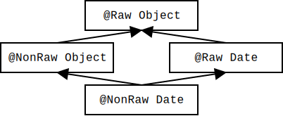
Figure 3.7: Partial type hierarchy for the Rawness Initialization type system.
The rawness hierarchy is shown in Figure 3.7. The rawness hierarchy contains these qualifiers:
If a reference has @Raw type, then all of its @NonNull fields are treated as @MonotonicNonNull: when read, they are treated as being @Nullable, but when written, they are treated as being @NonNull.
The rawness hierarchy is orthogonal to the nullness hierarchy. It is legal for a reference to be @NonNull @Raw, @Nullable @Raw, @NonNull @NonRaw, or @Nullable @NonRaw. The nullness hierarchy tells you about the reference itself: might the reference be null? The rawness hierarchy tells you about the @NonNull fields in the referred-to object: might those fields be temporarily null in contravention of their type annotation? Figure 3.8 contains some examples.
Declarations Expression Expression’s nullness type, or checker error class C { @NonNull Object f; @Nullable Object g; ... }@NonNull @NonRaw C a; a @NonNull a.f @NonNull a.g @Nullable @NonNull @Raw C b; b @NonNull b.f @MonotonicNonNull b.g @Nullable @Nullable @NonRaw C c; c @Nullable c.f error: deref of nullable c.g error: deref of nullable @Nullable @Raw C d; d @Nullable d.f error: deref of nullable d.g error: deref of nullable
Figure 3.8: Examples of the interaction between nullness and rawness. Declarations are shown at the left for reference, but the focus of the table is the expressions and their nullness type or error.
Within the constructor, this starts out with @Raw type. As soon as all of the @NonNull fields have been initialized, then this is treated as non-raw.
The Nullness Checker issues an error if the constructor fails to initialize any @NonNull field. This ensures that the object is in a legal (non-raw) state by the time that the constructor exits. This is different than Java’s test for definite assignment (see JLS ch.16), which does not apply to fields (except blank final ones, defined in JLS §4.12.4) because fields have a default value of null.
All @NonNull fields must either have a default in the field declaration, or be assigned in the constructor or in a helper method that the constructor calls. If your code initializes (some) fields in a helper method, you will need to annotate the helper method with an annotation such as @EnsuresNonNull({"field1", "field2"}) for all the fields that the helper method assigns. It’s a bit odd, but you use that same annotation, @EnsuresNonNull, to indicate that a primitive field has its value set in a helper method, which is relevant when you supply the -Alint=uninitialized command-line option (see Section 3.1).
So far, we have discussed rawness as if it is an all-or-nothing property: an object is fully raw until initialization completes, and then it is no longer raw. The full truth is a bit more complex: during the initialization process, an object can be partially initialized, and as the object’s superclass constructors complete, its rawness changes. The Nullness Checker lets you express such properties when necessary.
Consider a simple example:
class A {
Object a;
A() {
a = new Object();
}
}
class B extends A {
Object b;
B() {
super();
b = new Object();
}
}
Consider what happens during execution of new B().
At any moment during initialization, the superclasses of a given class can be divided into those that have completed initialization and those that have not yet completed initialization. More precisely, at any moment there is a point in the class hierarchy such that all the classes above that point are fully initialized, and all those below it are not yet initialized. As initialization proceeds, this dividing line between the initialized and raw classes moves down the type hierarchy.
The Nullness Checker lets you indicate where the dividing line is between the initialized and non-initialized classes. You have two equivalent ways to indicate the dividing line: @Raw indicates the first class below the dividing line, or @NonRaw(classliteral) indicates the first class above the dividing line.
When you write @Raw MyClass x;, that means that variable x is initialized for all superclasses of MyClass, and (possibly) uninitialized for MyClass and all subclasses.
When you write @NonRaw(Foo.class) MyClass x;, that means that variable x is initialized for Foo and all its superclasses, and (possibly) uninitialized for all subclasses of Foo.
If A is a direct superclass of B (as in the example above), then @Raw A x; and @NonRaw(B.class) A x; are equivalent declarations. Neither one is the same as @NonRaw A x;, which indicates that, whatever the actual class of the object that x refers to, that object is fully initialized. Since @NonRaw (with no argument) is the default, you will rarely see it written.
We can now state a clarification of Section 3.8.7’s rule for an object becoming non-raw. As soon as all of the @NonNull fields have been initialized, then this is treated as @NonRaw(typeofthis), rather than treated as simply @NonRaw.
The example above lists 4 moments during construction. At those moments, the type of the object being constructed is:
As another example, consider the following 12 declarations:
@Raw Object rO;
@NonRaw(Object.class) Object nroO;
Object o;
@Raw A rA;
@NonRaw(Object.class) A nroA; // same as "@Raw A"
@NonRaw(A.class) A nraA;
A a;
@NonRaw(Object.class) B nroB;
@Raw B rB;
@NonRaw(A.class) B nraB; // same as "@Raw B"
@NonRaw(B.class) B nrbB;
B b;
In the following table, the type in cell C1 is a supertype of the type in cell C2 if: C1 is at least as high and at least as far left in the table as C2 is. For example, nraA’s type is a supertype of those of rB, nraB, nrbB, a, and b. (The empty cells on the top row are real types, but are not expressible. The other empty cells are not interesting types.)
| @Raw Object rO; | ||
| @NonRaw(Object.class) Object nroO; | @Raw A rA; @NonRaw(Object.class) A nroA; | @NonRaw(Object.class) B nroB; |
| @NonRaw(A.class) A nraA; | @Raw B rB; @NonRaw(A.class) B nraB; | |
| @NonRaw(B.class) B nrbB; | ||
| Object o; | A a; | B b; |
You can suppress warnings related to partially-initialized objects with @SuppressWarnings("rawness"). Do not confuse this with the unrelated @SuppressWarnings("rawtypes") annotation for non-instantiated generic types!
When the -Alint=uninitialized command-line option is provided, then an object is considered raw until all its fields are assigned, not just the @NonNull ones. See Section 3.1.
A method with a raw receiver often assumes that a few fields (but not all of them) are non-null, and sometimes sets some more fields to non-null values. To express these concepts, use the @RequiresNonNull, @EnsuresNonNull, and @EnsuresNonNullIf method annotations; see Section 3.2.2.
The name “raw” comes from a research paper that proposed this approach [FL03]. A better name might have been “not yet initialized” or “partially initialized”, but the term “raw” is now well-known. The @Raw annotation has nothing to do with the raw types of Java Generics.
The Map Key Checker tracks which values are keys for which maps. If variable v has type @KeyFor("m")..., then the value of v is a key in Map m. That is, the expression m.containsKey(v) evaluates to true.
Section 3.2.4 describes how @KeyFor annotations enable the Nullness Checker (Chapter 3) to treat calls to Map.get more precisely by refining its result to @NonNull in some cases.
You will not typically run the Map Key Checker. It is automatically run by other checkers, in particular the Nullness Checker.
You can suppress warnings related to map keys with @SuppressWarnings("keyfor"); see Chapter 24.
These qualifiers are part of the Map Key type system:

Figure 4.1: The subtyping relationship of the Map Key Checker’s qualifiers. @KeyFor(A) is a supertype of @KeyFor(B) if and only if A is a subset of B. Qualifiers in gray are used internally by the type system but should never be written by a programmer.
The Map Key Checker keeps track of which variables reference keys to which maps. A variable annotated with @KeyFor(mapSet) can only contain a value that is a key for all the maps in mapSet. For example:
Map<String,Date> m, n;
@KeyFor("m") String km;
@KeyFor("n") String kn;
@KeyFor({"m", "n"}) String kmn;
km = kmn; // OK - a key for maps m and n is also a key for map m
km = kn; // error: a key for map n is not necessarily a key for map m
As with any annotation, use of the @KeyFor annotation may force you to slightly refactor your code. For example, this would be illegal:
Map<String,Object> m;
Collection<@KeyFor("m") String> coll;
coll.add(x); // error: element type is @KeyFor("m") String, but x does not have that type
m.put(x, ...);
The example type-checks if you reorder the two calls:
Map<String,Object> m;
Collection<@KeyFor("m") String> coll;
m.put(x, ...); // after this statement, x has type @KeyFor("m") String
coll.add(x); // OK
Within a method body, you usually do not have to write @KeyFor explicitly, because the checker infers it based on usage patterns. When the Map Key Checker encounters a run-time check for map keys, such as “if (m.containsKey(k)) ...”, then the Map Key Checker refines the type of k to @KeyFor("m") within the scope of the test (or until k is side-effected within that scope). The Map Key Checker also infers @KeyFor annotations based on iteration over a map’s key set or calls to put or containsKey. For more details about type refinement, see Section 23.4.
Suppose we have these declarations:
Map<String,Date> m = new Map<String,Date>();
String k = "key";
@KeyFor("m") String km;
Ordinarily, the following assignment does not type-check:
km = k; // Error since k is not known to be a key for map m.
The following examples show cases where the Map Key Checker infers a @KeyFor annotation for variable k based on usage patterns, enabling the km = k assignment to type-check.
m.put(k, ...);
// At this point, the type of k is refined to @KeyFor("m") String.
km = k; // OK
if (m.containsKey(k)) {
// At this point, the type of k is refined to @KeyFor("m") String.
km = k; // OK
...
} else {
km = k; // Error since k is not known to be a key for map m.
...
}
The following example shows a case where the Map Key Checker resets its assumption about the type of a field used as a key because that field may have been side-effected.
class MyClass {
private Map<String,Object> m;
private String k; // The type of k defaults to @UnknownKeyFor String
private @KeyFor("m") String km;
public void myMethod() {
if (m.containsKey(k)) {
km = k; // OK: the type of k is refined to @KeyFor("m") String
sideEffectFreeMethod();
km = k; // OK: the type of k is not affected by the method call
// and remains @KeyFor("m") String
otherMethod();
km = k; // error: At this point, the type of k is once again
// @UnknownKeyFor String, because otherMethod might have
// side-effected k such that it is no longer a key for map m.
}
}
@SideEffectFree
private void sideEffectFreeMethod() { ... }
private void otherMethod() { ... }
}
If the Interning Checker issues no errors for a given program, then all reference equality tests (i.e., all uses of “==”) are proper; that is, == is not misused where equals() should have been used instead.
Interning is a design pattern in which the same object is used whenever two different objects would be considered equal. Interning is also known as canonicalization or hash-consing, and it is related to the flyweight design pattern. Interning has two benefits: it can save memory, and it can speed up testing for equality by permitting use of ==.
The Interning Checker prevents two types of errors in your code. First, == should be used only on interned values; using == on non-interned values can result in subtle bugs. For example:
Integer x = new Integer(22); Integer y = new Integer(22); System.out.println(x == y); // prints false!
The Interning Checker helps programmers to prevent such bugs. Second, the Interning Checker also helps to prevent performance problems that result from failure to use interning. (See Section 2.3 for caveats to the checker’s guarantees.)
Interning is such an important design pattern that Java builds it in for these types: String, Boolean, Byte, Character, Integer, Short. Every string literal in the program is guaranteed to be interned (JLS §3.10.5), and the String.intern() method performs interning for strings that are computed at run time. The valueOf methods in wrapper classes always (Boolean, Byte) or sometimes (Character, Integer, Short) return an interned result (JLS §5.1.7). Users can also write their own interning methods for other types.
It is a proper optimization to use ==, rather than equals(), whenever the comparison is guaranteed to produce the same result — that is, whenever the comparison is never provided with two different objects for which equals() would return true. Here are three reasons that this property could hold:
To eliminate Interning Checker errors, you will need to annotate the declarations of any expression used as an argument to ==. Thus, the Interning Checker could also have been called the Reference Equality Checker. In the future, the checker will include annotations that target the non-interning cases above, but for now you need to use @Interned, @UsesObjectEquals (which handles a surprising number of cases), and/or @SuppressWarnings.
To run the Interning Checker, supply the -processor org.checkerframework.checker.interning.InterningChecker command-line option to javac. For examples, see Section 5.4.
These qualifiers are part of the Interning type system:
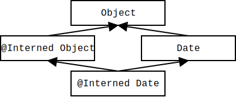
Figure 5.1: Type hierarchy for the Interning type system.
In order to perform checking, you must annotate your code with the @Interned type annotation, which indicates a type for the canonical representation of an object:
String s1 = ...; // type is (uninterned) "String" @Interned String s2 = ...; // Java type is "String", but checker treats it as "@Interned String"
The type system enforced by the checker plugin ensures that only interned values can be assigned to s2.
To specify that all objects of a given type are interned, annotate the class declaration:
public @Interned class MyInternedClass { ... }
This is equivalent to annotating every use of MyInternedClass, in a declaration or elsewhere. For example, enum classes are implicitly so annotated.
As described in Section 23.3, the Interning Checker adds implicit qualifiers, reducing the number of annotations that must appear in your code. For example, String literals and the null literal are always considered interned, and object creation expressions (using new) are never considered @Interned unless they are annotated as such, as in
@Interned Double internedDoubleZero = new @Interned Double(0); // canonical representation for Double zero
For a complete description of all implicit interning qualifiers, see the Javadoc for InterningAnnotatedTypeFactory.
Objects of an @Interned type may be safely compared using the “==” operator.
The checker issues an error in two cases:
This example shows both sorts of problems:
Date date;
@Interned Date idate;
...
if (date == idate) { ... } // error: reference equality test is unsafe
idate = date; // error: idate's referent may no longer be interned
The checker also issues a warning when .equals is used where == could be safely used. You can disable this behavior via the javac -Alint command-line option, like so: -Alint=-dotequals.
For a complete description of all checks performed by the checker, see the Javadoc for InterningVisitor.
You can also restrict which types the checker should examine and type-check, using the -Acheckclass option. For example, to find only the interning errors related to uses of String, you can pass -Acheckclass=java.lang.String. The Interning Checker always checks all subclasses and superclasses of the given class.
The Interning Checker conservatively assumes that the Character, Integer, and Short valueOf methods return a non-interned value. In fact, these methods sometimes return an interned value and sometimes a non-interned value, depending on the run-time argument (JLS §5.1.7). If you know that the run-time argument to valueOf implies that the result is interned, then you will need to suppress an error. (An alternative would be to enhance the Interning Checker to estimate the upper and lower bounds on char, int, and short values so that it can more precisely determine whether the result of a given valueOf call is interned.)
To try the Interning Checker on a source file that uses the @Interned qualifier, use the following command (where javac is the Checker Framework compiler that is distributed with the Checker Framework):
javac -processor org.checkerframework.checker.interning.InterningChecker examples/InterningExample.java
Compilation will complete without errors or warnings.
To see the checker warn about incorrect usage of annotations, use the following command:
javac -processor org.checkerframework.checker.interning.InterningChecker examples/InterningExampleWithWarnings.java
The compiler will issue an error regarding violation of the semantics of @Interned.
The Daikon invariant detector (http://plse.cs.washington.edu/daikon/) is also annotated with @Interned. From directory java, run make check-interning.
The Checker Framework’s interning annotations are similar to annotations used elsewhere.
If your code is already annotated with a different interning annotation, you can reuse that effort. The Checker Framework comes with cleanroom re-implementations of annotations from other tools. It treats them exactly as if you had written the corresponding annotation from the Interning Checker, as described in Figure 5.2.
com.sun.istack.internal.Interned ⇒ org.checkerframework.checker.interning.qual.Interned
Figure 5.2: Correspondence between other interning annotations and the Checker Framework’s annotations.
Alternately, the Checker Framework can process those other annotations (as well as its own, if they also appear in your program). The Checker Framework has its own definition of the annotations on the left side of Figure 5.2, so that they can be used as type qualifiers. The Checker Framework interprets them according to the right side of Figure 5.2.
The Lock Checker prevents certain concurrency errors by enforcing a locking discipline. A locking discipline indicates which locks must be held when a given operation occurs. You express the locking discipline by declaring a variable’s type to have the qualifier @GuardedBy("lockexpr"). This indicates that the variable’s value may be dereferenced only if the given lock is held.
To run the Lock Checker, supply the -processor org.checkerframework.checker.lock.LockChecker command-line option to javac. The -AconcurrentSemantics command-line option is always enabled for the Lock Checker (see Section 30.4.4).
The Lock Checker gives the following guarantee. Suppose that expression e has type @GuardedBy({"x", "y.z"}). Then the value computed for e is only dereferenced by a thread when the thread holds locks x and y.z. Dereferencing a value is reading or writing one of its fields. The guarantee about e’s value holds not only if the expression e is dereferenced directly, but also if the value was first copied into a variable, returned as the result of a method call, etc. Copying a reference is always permitted by the Lock Checker, regardless of which locks are held.
A lock is held if it has been acquired but not yet released. Java has two types of locks. A monitor lock is acquired upon entry to a synchronized method or block, and is released on exit from that method or block. An explicit lock is acquired by a method call such as Lock.lock(), and is released by another method call such as Lock.unlock(). The Lock Checker enforces that any expression whose type implements Lock is used as an explicit lock, and all other expressions are used as monitor locks.
Ensuring that your program obeys its locking discipline is an easy and effective way to eliminate a common and important class of errors. If the Lock Checker issues no warnings, then your program obeys its locking discipline. However, your program might still have other types of concurrency errors. For example, you might have specified an inadequate locking discipline because you forgot some @GuardedBy annotations. Your program might release and re-acquire the lock, when correctness requires it to hold it throughout a computation. And, there are other concurrency errors that cannot, or should not, be solved with locks.
This section describes the lock annotations you can write on types and methods.
The @GuardedBy annotation can list multiple expressions, as in @GuardedBy({"expr1", "expr2"}), in which case the dereference is permitted only if the thread holds all the locks.
Section 23.5 explains which expressions the Lock Checker is able to analyze as lock expressions. These include itself, i.e. the value of the annotated reference (non-primitive) variable. For example, @GuardedBy("itself") Object o indicates that the value referenced by o is guarded by the intrinsic (monitor) lock of the value referenced by o.
@GuardedBy({}), which means the value is always allowed to be dereferenced, is the default type qualifier that is used for all locations where the programmer does not write an explicit locking type qualifier (except all CLIMB-to-top locations other than upper bounds and exception parameters — see Section 23.3.2). (Section 6.5.4 discusses this choice.) It is also the conservative default type qualifier for method parameters in unannotated libraries (see Chapter 27).
Any value can be assigned to a variable of type @GuardedByUnknown. In particular, if it is written on a formal parameter, then any value, including one whose locks are not currently held, may be passed as an argument.
@GuardedByUnknown is the conservative default type qualifier for method receivers in unannotated libraries (see Chapter 27).
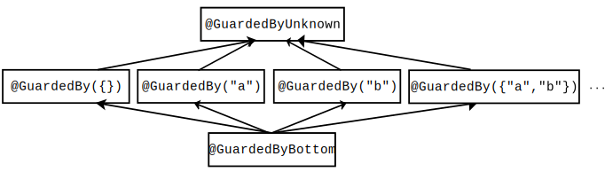
Figure 6.1: The subtyping relationship of the Lock Checker’s qualifiers. @GuardedBy({}) is the default type qualifier for unannotated types (except all CLIMB-to-top locations other than upper bounds and exception parameters — see Section 23.3.2).
Figure 6.1 shows the type hierarchy of these qualifiers. All @GuardedBy annotations are incomparable: if exprSet1 ≠ exprSet2, then @GuardedBy(exprSet1) and @GuardedBy(exprSet2) are siblings in the type hierarchy. You might expect that @GuardedBy("x", "y") T is a subtype of @GuardedBy("x") T. The first type requires two locks to be held, and the second requires only one lock to be held and so could be used in any situation where both locks are held. The type system conservatively prohibits this in order to prevent type-checking loopholes that would result from aliasing and side effects — that is, from having two mutable references, of different types, to the same data. See Section 6.4.2 for an example of a problem that would occur if this rule were relaxed.
As with other qualifier-polymorphism annotations (Section 22.2), the index argument indicates when two values are guarded by the same (unknown) set of locks.
@GuardSatisfied is only allowed in method signatures: on formal parameters (including the receiver) and return types. It may not be written on fields. Also, it is a limitation of the current design that @GuardSatisfied may not be written on array elements or on local variables.
A return type can only be annotated with @GuardSatisfied(index), not @GuardSatisfied.
See Section 6.4.6 for an example of a use of @GuardSatisfied.
The Lock Checker supports several annotations that specify method behavior. These are declaration annotations, not type annotations: they apply to the method itself rather than to some particular type.
Since @SideEffectFree implies @LockingFree, if both are applicable then you only need to write @SideEffectFree.
This is the default for methods being type-checked that have no @LockingFree, @MayReleaseLocks, @SideEffectFree, or @Pure annotation.
In addition to the standard subtyping rules enforcing the subtyping relationship described in Figure 6.1, the Lock Checker enforces the following additional rules.
The overall rules for polymorphic qualifiers are given in Section 22.2.
Here are additional constraints for (pseudo-)assignments:
If a formal parameter type is annotated with @GuardSatisfied without an index, then that formal parameter type is unrelated to every other type in the @GuardedBy hierarchy, including other occurrences of @GuardSatisfied without an index.
@GuardSatisfied may not be used on formal parameters, receivers, or return types of a method annotated with @MayReleaseLocks.
Primitive types, boxed primitive types (such as java.lang.Integer), and type java.lang.String are implicitly annotated with @GuardedBy({}). It is an error for the programmer to annotate any of these types with an annotation from the @GuardedBy type hierarchy, including @GuardedBy({}).
@MayReleaseLocks @ReleasesNoLocks @LockingFree @SideEffectFree @Pure
The Lock Checker guarantees that a value that was computed from an expression of @GuardedBy type is dereferenced only when the current thread holds all the expressions in the @GuardedBy annotation.
The following example demonstrates the basic type-checking rules.
class MyClass {
final ReentrantLock lock; // Initialized in the constructor
@GuardedBy("lock") Object x = new Object();
@GuardedBy("lock") Object y = x; // OK, since dereferences of y will require "lock" to be held.
@GuardedBy({}) Object z = x; // ILLEGAL since dereferences of z don't require "lock" to be held.
@GuardedBy("lock") Object myMethod() { // myMethod is implicitly annotated with @ReleasesNoLocks.
return x; // OK because the return type is annotated with @GuardedBy("lock")
}
[...]
void exampleMethod() {
x.toString(); // ILLEGAL because the lock is not known to be held
y.toString(); // ILLEGAL because the lock is not known to be held
myMethod().toString(); // ILLEGAL because the lock is not known to be held
lock.lock();
x.toString(); // OK: the lock is known to be held
y.toString(); // OK: the lock is known to be held, and toString() is annotated with @SideEffectFree.
myMethod().toString(); // OK: the lock is known to be held, since myMethod
// is implicitly annotated with @ReleasesNoLocks.
}
}
Note that the expression new Object() is inferred to have type @GuardedBy("lock") because it is immediately assigned to a newly-declared variable having type annotation @GuardedBy("lock"). You could explicitly write new @GuardedBy("lock") Object() but it is not required.
The following example demonstrates that using itself as a lock expression allows a guarded value to be dereferenced even when the original variable name the value was originally assigned to falls out of scope.
class MyClass {
private final @GuardedBy("itself") Object x = new Object();
void method() {
x.toString(); // ILLEGAL because x is not known to be held.
synchronized(x) {
x.toString(); // OK: x is known to be held.
}
}
public @GuardedBy("itself") Object get_x() {
return x; // OK, since the return type is @GuardedBy("itself").
}
}
class MyOtherClass {
void method() {
MyClass m = new MyClass();
final @GuardedBy("itself") Object o = m.get_x();
o.toString(); // ILLEGAL because o is not known to be held.
synchronized(o) {
o.toString(); // OK: o is known to be held.
}
}
}
@GuardedBy(exprSet)
The following example demonstrates the reason the Lock Checker enforces the following rule: if exprSet1 ≠ exprSet2, then @GuardedBy(exprSet1) and @GuardedBy(exprSet2) are siblings in the type hierarchy.
class MyClass {
final Object lockA = new Object();
final Object lockB = new Object();
@GuardedBy("lockA") Object x = new Object();
@GuardedBy({"lockA", "lockB"}) Object y = new Object();
void myMethod() {
y = x; // ILLEGAL; if legal, later statement x.toString() would cause trouble
synchronized(lockA) {
x.toString(); // dereferences y's value without holding lock lockB
}
}
}
If the Lock Checker permitted the assignment y = x;, then the undesired dereference would be possible.
The following example shows the interaction between @GuardedBy and @Holding:
void helper1(@GuardedBy("myLock") Object a) {
a.toString(); // ILLEGAL: the lock is not held
synchronized(myLock) {
a.toString(); // OK: the lock is held
}
}
@Holding("myLock")
void helper2(@GuardedBy("myLock") Object b) {
b.toString(); // OK: the lock is held
}
void helper3(@GuardedBy("myLock") Object d) {
d.toString(); // ILLEGAL: the lock is not held
}
void myMethod2(@GuardedBy("myLock") Object e) {
helper1(e); // OK to pass to another routine without holding the lock
// (but helper1's body has an error)
e.toString(); // ILLEGAL: the lock is not held
synchronized (myLock) {
helper2(e); // OK: the lock is held
helper3(e); // OK, but helper3's body has an error
}
}
@EnsuresLockHeld and @EnsuresLockHeldIf are primarily intended for annotating JDK locking methods, as in:
package java.util.concurrent.locks;
class ReentrantLock {
@EnsuresLockHeld("this")
public void lock();
@EnsuresLockHeldIf (expression="this", result=true)
public boolean tryLock();
...
}
They can also be used to annotate user methods, particularly for higher-level lock constructs such as a Monitor, as in this simplified example:
public class Monitor {
private final ReentrantLock lock; // Initialized in the constructor
...
@EnsuresLockHeld("lock")
public void enter() {
lock.lock();
}
...
}
@LockingFree is useful when a method does not make any use of synchronization or locks but causes other side effects (hence @SideEffectFree is not appropriate). @SideEffectFree implies @LockingFree, therefore if both are applicable, you should only write @SideEffectFree. @ReleasesNoLocks has a weaker guarantee than @LockingFree, and @MayReleaseLocks provides no guarantees.
private Object myField;
private final ReentrantLock lock; // Initialized in the constructor
private @GuardedBy("lock") Object x; // Initialized in the constructor
[...]
// This method does not use locks or synchronization, but it cannot
// be annotated as @SideEffectFree since it alters myField.
@LockingFree
void myMethod() {
myField = new Object();
}
@SideEffectFree
int mySideEffectFreeMethod() {
return 0;
}
@MayReleaseLocks
void myUnlockingMethod() {
lock.unlock();
}
@ReleasesNoLocks
void myLockingMethod() {
lock.lock();
}
@MayReleaseLocks
void clientMethod() {
if (lock.tryLock()) {
x.toString(); // OK: the lock is held
myMethod();
x.toString(); // OK: the lock is still known to be held since myMethod is locking-free
mySideEffectFreeMethod();
x.toString(); // OK: the lock is still known to be held since mySideEffectFreeMethod
// is side-effect-free
myUnlockingMethod();
x.toString(); // ILLEGAL: myUnlockingMethod may have released a lock
}
if (lock.tryLock()) {
x.toString(); // OK: the lock is held
myLockingMethod();
x.toString(); // OK: the lock is held
}
if (lock.isHeldByCurrentThread()) {
x.toString(); // OK: the lock is known to be held
}
}
The polymorphic @GuardSatisfied type annotation allows a method body to dereference the method’s formal parameters even if the @GuardedBy annotations on the actual parameters are unknown at the method declaration site.
The declaration of StringBuffer.append(String str) is annotated as:
@LockingFree
public @GuardSatisfied(1) StringBuffer append(@GuardSatisfied(1) StringBuffer this,
@GuardSatisfied(2) String str)
The method manipulates the values of its arguments, so all their locks must be held. However, the declaration does not know what those are and they might not even be in scope at the declaration. Therefore, the declaration cannot use @GuardedBy and must use @GuardSatisfied. The arguments to @GuardSatisfied indicate that the receiver and result (which are the same value) are guarded by the same (unknown, possibly empty) set of locks, and the str parameter may be guarded by a different set of locks.
The @LockingFree annotation indicates that this method makes no use of locks or synchronization.
Given these annotations on append, the following code type-checks:
final ReentrantLock lock1, lock2; // Initialized in the constructor
@GuardedBy("lock1") StringBuffer filename;
@GuardedBy("lock2") StringBuffer extension;
...
lock1.lock();
lock2.lock();
filename = filename.append(extension);
This section gives some details that are helpful for understanding how Java locking and the Lock Checker works.
Java provides two types of locking: monitor locks and explicit locks.
You should not mix the two varieties of locking, and the Lock Checker enforces this. To prevent an object from being used both as a monitor and an explicit lock, the Lock Checker issues a warning if a synchronized(E) block’s expression E has a type that implements Lock.
Whereas Java locking is defined in terms of values, Java programs are written in terms of expressions. We say that a lock expression is held if the value to which the expression currently evaluates is held.
The Lock Checker conservatively estimates the expressions that are held at each point in a program. The Lock Checker does not track aliasing (different expressions that evaluate to the same value); it only considers the exact expression used to acquire a lock to be held. After any statement that might side-effect a held expression or a lock expression, the Lock Checker conservatively considers the expression to be no longer held.
Section 23.5 explains which Java expressions the Lock Checker is able to analyze as lock expressions.
The @LockHeld and @LockPossiblyHeld type qualifiers are used internally by the Lock Checker and should never be written by the programmer. If you see a warning mentioning @LockHeld or @LockPossiblyHeld, please contact the Checker Framework developers as it is likely to indicate a bug in the Checker Framework.
When you perform a run-time check for locking, such as if (explicitLock.isHeldByCurrentThread()){...} or if (Thread.holdsLock(monitorLock)){...}, then the Lock Checker considers the lock expression to be held within the scope of the test. For more details, see Section 23.4.
The default qualifier for unannotated types is @GuardedBy({}). This default forces you to write explicit @GuardSatisfied in method signatures in the common case that clients ensure that all locks are held.
It might seem that @GuardSatisfied would be a better default for method signatures, but such a default would require even more annotations. The reason is that @GuardSatisfied cannot be used on fields. If @GuardedBy({}) is the default for fields but @GuardSatisfied is the default for parameters and return types, then getters, setters, and many other types of methods do not type-check without explicit lock qualifiers.
A programmer might choose to use the @Holding method annotation in two different ways: to specify correctness constraints for a synchronization protocol, or to summarize intended usage. Both of these approaches are useful, and the Lock Checker supports both.
@Holding can specify a synchronization protocol that is not expressible as locks over the parameters to a method. For example, a global lock or a lock on a different object might need to be held. By requiring locks to be held, you can create protocol primitives without giving up the benefits of the annotations and checking of them.
@Holding can be a method summary that simplifies reasoning. In this case, the @Holding doesn’t necessarily introduce a new correctness constraint; the program might be correct even if the lock were not already acquired.
Rather, here @Holding expresses a fact about execution: when execution reaches this point, the following locks are known to be already held. This fact enables people and tools to reason intra- rather than inter-procedurally.
In Java, it is always legal to re-acquire a lock that is already held, and the re-acquisition always works. Thus, whenever you write
@Holding("myLock")
void myMethod() {
...
}
it would be equivalent, from the point of view of which locks are held during the body, to write
void myMethod() {
synchronized (myLock) { // no-op: re-acquire a lock that is already held
...
}
}
It is better to write a @Holding annotation rather than writing the extra synchronized block. Here are reasons:
The Checker Framework’s lock annotations are similar to annotations used elsewhere.
If your code is already annotated with a different lock annotation, you can reuse that effort. The Checker Framework comes with cleanroom re-implementations of annotations from other tools. It treats them exactly as if you had written the corresponding annotation from the Lock Checker, as described in Figure 6.2.
net.jcip.annotations.GuardedBy javax.annotation.concurrent.GuardedBy ⇒ org.checkerframework.checker.lock.qual.GuardedBy (for fields) or …Holding (for methods)
Figure 6.2: Correspondence between other lock annotations and the Checker Framework’s annotations.
The book Java Concurrency in Practice [GPB+06] defines a @GuardedBy annotation that is the inspiration for ours. The book’s @GuardedBy serves two related but distinct purposes:
The Lock Checker renames the method annotation to @Holding, and it generalizes the @GuardedBy annotation into a type annotation that can apply not just to a field but to an arbitrary type (including the type of a parameter, return value, local variable, generic type parameter, etc.). Another important distinction is that the Lock Checker’s annotations express and enforce a locking discipline over values, just like the JLS expresses Java’s locking semantics; by contrast, JCIP’s annotations express a locking discipline that protects variable names and does not prevent race conditions. This makes the annotations more expressive and also more amenable to automated checking. It also accommodates the distinct meanings of the two annotations, and resolves ambiguity when @GuardedBy is written in a location that might apply to either the method or the return type.
(The JCIP book gives some rationales for reusing the annotation name for two purposes. One rationale is that there are fewer annotations to learn. Another rationale is that both variables and methods are “members” that can be “accessed” and @GuardedBy creates preconditions for doing so. Variables can be accessed by reading or writing them (putfield, getfield), and methods can be accessed by calling them (invokevirtual, invokeinterface). This informal intuition is inappropriate for a tool that requires precise semantics.)
The Lock Checker validates some uses of locks, but not all. It would be possible to enrich it with additional annotations. This would increase the programmer annotation burden, but would provide additional guarantees.
Lock ordering: Specify that one lock must be acquired before or after another, or specify a global ordering for all locks. This would prevent deadlock.
Not-holding: Specify that a method must not be called if any of the listed locks are held.
These features are supported by Clang’s thread-safety analysis.
Java’s enum keyword lets you define an enumeration type: a finite set of distinct values that are related to one another but are disjoint from all other types, including other enumerations. Before enums were added to Java, there were two ways to encode an enumeration, both of which are error-prone:
Sometimes you need to use the fake enum pattern, rather than a real enum or the typesafe enum pattern. One reason is backward-compatibility. A public API that predates Java’s enum keyword may use int constants; it cannot be changed, because doing so would break existing clients. For example, Java’s JDK still uses int constants in the AWT and Swing frameworks, and Android also uses int constants rather than Java enums. Another reason is performance, especially in environments with limited resources. Use of an int instead of an object can reduce code size, memory requirements, and run time.
In cases when code has to use the fake enum pattern, the Fake Enum Checker, or Fenum Checker, gives the same safety guarantees as a true enumeration type. The developer can introduce new types that are distinct from all values of the base type and from all other fake enums. Fenums can be introduced for primitive types as well as for reference types.
Figure 7.1 shows part of the type hierarchy for the Fenum type system.
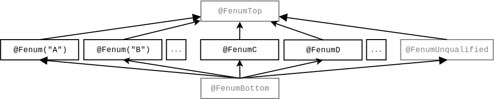
Figure 7.1: Partial type hierarchy for the Fenum type system. There are two forms of fake enumeration annotations — above, illustrated by @Fenum("A") and @FenumC. See Section 7.1 for descriptions of how to introduce both types of fenums. The type qualifiers in gray (@FenumTop, @FenumUnqualified, and @FenumBottom) should never be written in source code; they are used internally by the type system.
The checker supports two ways to introduce a new fake enum (fenum):
package myModule.qual; import java.lang.annotation.*; import org.checkerframework.checker.fenum.qual.FenumTop; import org.checkerframework.framework.qual.SubtypeOf; @Documented @Retention(RetentionPolicy.RUNTIME) @Target(ElementType.TYPE_USE, ElementType.TYPE_PARAMETER) @SubtypeOf(FenumTop.class) public @interface MyFenum {}
You only need to adapt the italicized package, annotation, and file names in the example.
Note that all custom annotations must have the @Target(ElementType.TYPE_USE) meta-annotation. See section 28.3.1.
The first approach allows you to define a short, meaningful name suitable for your project, whereas the second approach allows quick prototyping.
The Fenum Checker ensures that unrelated types are not mixed. All types with a particular fenum annotation, or @Fenum(...) with a particular String argument, are disjoint from all unannotated types and all types with a different fenum annotation or String argument.
The checker forbids method calls on fenum types and ensures that only compatible fenum types are used in comparisons and arithmetic operations (if applicable to the annotated type).
It is the programmer’s responsibility to ensure that fields with a fenum type are properly initialized before use. Otherwise, one might observe a null reference or zero value in the field of a fenum type. (The Nullness Checker (Chapter 3) can prevent failure to initialize a reference variable.)
The Fenum Checker can be invoked by running the following commands.
javac -Xbootclasspath/p:/full/path/to/myProject/bin:/full/path/to/myLibrary/bin \ -processor org.checkerframework.checker.fenum.FenumChecker \ -Aquals=myModule.qual.MyFenum MyFile.java ...
The annotations listed in -Aquals must be accessible to the compiler during compilation in the classpath. In other words, they must already be compiled (and, typically, be on the javac bootclasspath) before you run the Fenum Checker with javac. It is not sufficient to supply their source files on the command line.
You can also provide the fully-qualified paths to a set of directories that contain the annotations through the -AqualDirs option, using a colon-no-space-separated notation. For example:
javac -Xbootclasspath/p:/full/path/to/myProject/bin:/full/path/to/myLibrary/bin \ -processor org.checkerframework.checker.fenum.FenumChecker \ -AqualDirs=/full/path/to/myProject/bin:/full/path/to/myLibrary/bin MyFile.java ...
Note that in these two examples, the compiled class file of the myModule.qual.MyFenum annotation must exist in either the myProject/bin directory or the myLibrary/bin directory. The following placement of the class file will work with the above commands:
.../myProject/bin/myModule/qual/MyFenum.class
The two options can be used at the same time to provide groups of annotations from directories, and individually named annotations.
javac -processor org.checkerframework.checker.fenum.FenumChecker MyFile.java ...
One example of when you need to suppress warnings is when you initialize the fenum constants to literal values. To remove this warning message, add a @SuppressWarnings annotation to either the field or class declaration, for example:
@SuppressWarnings("fenum:assignment.type.incompatible") // initialization of fake enums
class MyConsts {
public static final @Fenum("A") int ACONST1 = 1;
public static final @Fenum("A") int ACONST2 = 2;
}
The following example introduces two fenums in class TestStatic and then performs a few typical operations.
@SuppressWarnings("fenum:assignment.type.incompatible") // initialization of fake enums
public class TestStatic {
public static final @Fenum("A") int ACONST1 = 1;
public static final @Fenum("A") int ACONST2 = 2;
public static final @Fenum("B") int BCONST1 = 4;
public static final @Fenum("B") int BCONST2 = 5;
}
class FenumUser {
@Fenum("A") int state1 = TestStatic.ACONST1; // ok
@Fenum("B") int state2 = TestStatic.ACONST1; // Incompatible fenums forbidden!
void fenumArg(@Fenum("A") int p) {}
void foo() {
state1 = 4; // Direct use of value forbidden!
state1 = TestStatic.BCONST1; // Incompatible fenums forbidden!
state1 = TestStatic.ACONST2; // ok
fenumArg(5); // Direct use of value forbidden!
fenumArg(TestStatic.BCONST1); // Incompatible fenums forbidden!
fenumArg(TestStatic.ACONST1); // ok
}
}
Also, see the example project in the checker/examples/fenum-extension directory.
The Tainting Checker prevents certain kinds of trust errors. A tainted, or untrusted, value is one that comes from an arbitrary, possibly malicious source, such as user input or unvalidated data. In certain parts of your application, using a tainted value can compromise the application’s integrity, causing it to crash, corrupt data, leak private data, etc.
For example, a user-supplied pointer, handle, or map key should be validated before being dereferenced. As another example, a user-supplied string should not be concatenated into a SQL query, lest the program be subject to a SQL injection attack. A location in your program where malicious data could do damage is called a sensitive sink.
A program must “sanitize” or “untaint” an untrusted value before using it at a sensitive sink. There are two general ways to untaint a value: by checking that it is innocuous/legal (e.g., it contains no characters that can be interpreted as SQL commands when pasted into a string context), or by transforming the value to be legal (e.g., quoting all the characters that can be interpreted as SQL commands). A correct program must use one of these two techniques so that tainted values never flow to a sensitive sink. The Tainting Checker ensures that your program does so.
If the Tainting Checker issues no warning for a given program, then no tainted value ever flows to a sensitive sink. However, your program is not necessarily free from all trust errors. As a simple example, you might have forgotten to annotate a sensitive sink as requiring an untainted type, or you might have forgotten to annotate untrusted data as having a tainted type.
To run the Tainting Checker, supply the -processor TaintingChecker command-line option to javac.
The Tainting type system uses the following annotations:
Most programs are designed with a boundary that surrounds sensitive computations, separating them from untrusted values. Outside this boundary, the program may manipulate malicious values, but no malicious values ever pass the boundary to be operated upon by sensitive computations.
In some programs, the area outside the boundary is very small: values are sanitized as soon as they are received from an external source. In other programs, the area inside the boundary is very small: values are sanitized only immediately before being used at a sensitive sink. Either approach can work, so long as every possibly-tainted value is sanitized before it reaches a sensitive sink.
Once you determine the boundary, annotating your program is easy: put @Tainted outside the boundary, @Untainted inside, and @SuppressWarnings("tainting") at the validation or sanitization routines that are used at the boundary.
The Tainting Checker’s standard default qualifier is @Tainted (see Section 23.3.1 for overriding this default). This is the safest default, and the one that should be used for all code outside the boundary (for example, code that reads user input). You can set the default qualifier to @Untainted in code that may contain sensitive sinks.
The Tainting Checker does not know the intended semantics of your program, so it cannot warn you if you mis-annotate a sensitive sink as taking @Tainted data, or if you mis-annotate external data as @Untainted. So long as you correctly annotate the sensitive sinks and the places that untrusted data is read, the Tainting Checker will ensure that all your other annotations are correct and that no undesired information flows exist.
As an example, suppose that you wish to prevent SQL injection attacks. You would start by annotating the Statement class to indicate that the execute operations may only operate on untainted queries (Chapter 27 describes how to annotate external libraries):
public boolean execute(@Untainted String sql) throws SQLException; public boolean executeUpdate(@Untainted String sql) throws SQLException;
The @Tainted and @Untainted annotations have only minimal built-in semantics. In fact, the Tainting Checker provides only a small amount of functionality beyond the Subtyping Checker (Chapter 20). This lack of hard-coded behavior means that the annotations can serve many different purposes. Here are just a few examples:
In each case, you need to annotate the appropriate untainting/sanitization routines. This is similar to the @Encrypted annotation (Section 20.2), where the cryptographic functions are beyond the reasoning abilities of the type system. In each case, the type system verifies most of your code, and the @SuppressWarnings annotations indicate the few places where human attention is needed.
If you want more specialized semantics, or you want to annotate multiple types of tainting in a single program, then you can copy the definition of the Tainting Checker to create a new annotation and checker with a more specific name and semantics. See Chapter 28 for more details.
The Tainting Checker supports qualifier parameters. See Section 22.3 for more details on qualifier parameters.
The qualifier parameter system currently incurs a 50% performance penalty. If this is unacceptable you can run the original Tainting Checker by passing the -processor org.checkerframework.checker.tainting.classic.TaintingClassicChecker command-line option to javac.
The Regex Checker prevents, at compile-time, use of syntactically invalid regular expressions and access of invalid capturing groups.
A regular expression, or regex, is a pattern for matching certain strings of text. In Java, a programmer writes a regular expression as a string. At run time, the string is “compiled” into an efficient internal form (Pattern) that is used for text-matching. Regular expression in Java also have capturing groups, which are delimited by parentheses and allow for extraction from text.
The syntax of regular expressions is complex, so it is easy to make a mistake. It is also easy to accidentally use a regex feature from another language that is not supported by Java (see section “Comparison to Perl 5” in the Pattern Javadoc). Ordinarily, the programmer does not learn of these errors until run time. The Regex Checker warns about these problems at compile time.
For further details, including case studies, see a paper about the Regex Checker [SDE12].
To run the Regex Checker, supply the -processor org.checkerframework.checker.regex.RegexChecker command-line option to javac.
These qualifiers make up the Regex type system:
The subtyping hierarchy of the Regex Checker’s qualifiers is shown in Figure 9.1.
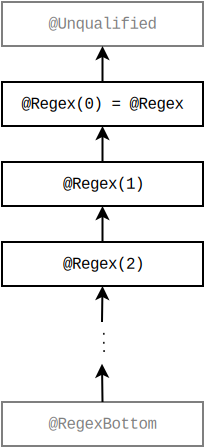
Figure 9.1: The subtyping relationship of the Regex Checker’s qualifiers. Because the parameter to a @Regex qualifier is at least the number of capturing groups in a regular expression, a @Regex qualifier with more capturing groups is a subtype of a @Regex qualifier with fewer capturing groups. Qualifiers in gray are used internally by the type system but should never be written by a programmer.
As described in Section 23.3, the Regex Checker adds implicit qualifiers, reducing the number of annotations that must appear in your code. The checker implicitly adds the Regex qualifier with the parameter set to the correct number of capturing groups to any String literal that is a valid regex. The Regex Checker allows the null literal to be assigned to any type qualified with the Regex qualifier.
The Regex Checker validates that a legal capturing group number is passed to Matcher’s group, start and end methods. To do this, the type of Matcher must be qualified with a @Regex annotation with the number of capturing groups in the regular expression. This is handled implicitly by the Regex Checker for local variables (see Section 23.4), but you may need to add @Regex annotations with a capturing group count to Pattern and Matcher fields and parameters.
public @Regex String parenthesize(@Regex String regex) { return "(" + regex + ")"; // Even though the parentheses are not @Regex Strings, // the whole expression is a @Regex String }
Figure 9.2: An example of the Regex Checker’s support for concatenation of non-regular-expression Strings to produce valid regular expression Strings.
In general, concatenating a non-regular-expression String with any other string yields a non-regular-expression String. The Regex Checker can sometimes determine that concatenation of non-regular-expression Strings will produce valid regular expression Strings. For an example see Figure 9.2.
Sometimes, the Regex Checker cannot infer whether a particular expression is a regular expression — and sometimes your code cannot either! In these cases, you can use the isRegex method to perform such a test, and other helper methods to provide useful error messages. A common use is for user-provided regular expressions (such as ones passed on the command-line). Figure 9.3 gives an example of the intended use of the RegexUtil methods.
An additional version of each of these methods is also provided that takes an additional group count parameter. The RegexUtil.isRegex method verifies that the argument has at least the given number of groups. The RegexUtil.regexError and RegexUtil.regexException methods return a String error message and PatternSyntaxException, respectively, detailing why the given String is not a syntactically valid regular expression with at least the given number of capturing groups.
If you detect that a String is not a valid regular expression but would like to report the error higher up the call stack (potentially where you can provide a more detailed error message) you can throw a RegexUtil.CheckedPatternSyntaxException. This exception is functionally the same as a PatternSyntaxException except it is checked to guarantee that the error will be handled up the call stack. For more details, see the Javadoc for RegexUtil.CheckedPatternSyntaxException.
A potential disadvantage of using the RegexUtil class is that your code becomes dependent on the Checker Framework at run time as well as at compile time. You can avoid this by adding the Checker Framework to your project, or by copying the RegexUtil class into your own code.
String regex = getRegexFromUser(); if (! RegexUtil.isRegex(regex)) { throw new RuntimeException("Error parsing regex " + regex, RegexUtil.regexException(regex)); } Pattern p = Pattern.compile(regex);
Figure 9.3: Example use of RegexUtil methods.
The Regex Checker supports qualifier parameters. See Section 22.3 for more details on qualifier parameters.
The qualifier parameter system currently incurs a 50% performance penalty. If this is unacceptable you can run the original Regex Checker by passing the -processor org.checkerframework.checker.regex.classic.RegexClassicChecker command-line option to javac.
If you are positive that a particular string that is being used as a regular expression is syntactically valid, but the Regex Checker cannot conclude this and issues a warning about possible use of an invalid regular expression, then you can use the RegexUtil.asRegex method to suppress the warning.
You can think of this method as a cast: it returns its argument unchanged, but with the type @Regex String if it is a valid regular expression. It throws an error if its argument is not a valid regular expression, but you should only use it when you are sure it will not throw an error.
There is an additional RegexUtil.asRegex method that takes a capturing group parameter. This method works the same as described above, but returns a @Regex String with the parameter on the annotation set to the value of the capturing group parameter passed to the method.
The use case shown in Figure 9.3 should support most cases so the asRegex method should be used rarely.
The Format String Checker prevents use of incorrect format strings in format methods such as System.out.printf and String.format.
The Format String Checker warns you if you write an invalid format string, and it warns you if the other arguments are not consistent with the format string (in number of arguments or in their types). Here are examples of errors that the Format String Checker detects at compile time. Section 10.3 provides more details.
String.format("%y", 7); // error: invalid format string
String.format("%d", "a string"); // error: invalid argument type for %d
String.format("%d %s", 7); // error: missing argument for %s
String.format("%d", 7, 3); // warning: unused argument 3
String.format("{0}", 7); // warning: unused argument 7, because {0} is wrong syntax
To run the Format String Checker, supply the -processor org.checkerframework.checker.formatter.FormatterChecker command-line option to javac.
Printf-style formatting takes as an argument a format string and a list of arguments. It produces a new string in which each format specifier has been replaced by the corresponding argument. The format specifier determines how the format argument is converted to a string. A format specifier is introduced by a % character. For example, String.format("The %s is %d.","answer",42) yields "The answer is 42.". "The %s is %d." is the format string, "%s" and "%d" are the format specifiers; "answer" and 42 are format arguments.
The @Format qualifier on a string type indicates a valid format string. The JDK documentation for the Formatter class explains the requirements for a valid format string. A programmer rarely writes the @Format annotation, as it is inferred for string literals. A programmer may need to write it on fields and on method signatures.
The @Format qualifier is parameterized with a list of conversion categories that impose restrictions on the format arguments. Conversion categories are explained in more detail in Section 10.2.1. The type qualifier for "%d %f" is for example @Format({INT, FLOAT}).
Consider the below printFloatAndInt method. Its parameter must be a format string that can be used in a format method, where the first format argument is “float-like” and the second format argument is “integer-like”. The type of its parameter, @Format({FLOAT, INT}) String, expresses that contract.
void printFloatAndInt(@Format({FLOAT, INT}) String fs) {
System.out.printf(fs, 3.1415, 42);
}
printFloatAndInt("Float %f, Number %d"); // OK
printFloatAndInt("Float %f"); // error
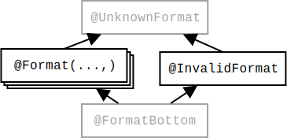
Figure 10.1: The Format String Checker type qualifier hierarchy. The figure does not show the subtyping rules among different @Format(...) qualifiers; see Section 10.2.1.
Figure 10.1 shows all the type qualifiers. The annotations other than @Format are only used internally and cannot be written in your code. @InvalidFormat indicates an invalid format string — that is, a string that cannot be used as a format string. For example, the type of "%y" is @InvalidFormat String. @FormatBottom is the type of the null literal. @Unqualified is the default that is applied to strings that are not literals and on which the user has not written a @Format annotation.
Given a format specifier, only certain format arguments are compatible with it, depending on its “conversion” — its last, or last two, characters. For example, in the format specifier "%d", the conversion d restricts the corresponding format argument to be “integer-like”:
String.format("%d", 5); // OK
String.format("%d", "hello"); // error
Many conversions enforce the same restrictions. A set of restrictions is represented as a conversion category. The “integer like” restriction is for example the conversion category INT. The following conversion categories are defined in the ConversionCategory enumeration:
Further, all conversion categories accept null.
The same format argument may serve as a replacement for multiple format specifiers. Until now, we have assumed that the format specifiers simply consume format arguments left to right. But there are two other ways for a format specifier to select a format argument:
In the following example, the format argument must be compatible with both conversion categories, and can therefore be neither a Character nor a long.
format("Char %1$c, Int %1$d", (int)42); // OK
format("Char %1$c, Int %1$d", new Character(42)); // error
format("Char %1$c, Int %1$d", (long)42); // error
Only three additional conversion categories are needed represent all possible intersections of previously-mentioned conversion categories:
All other intersections lead to already existing conversion categories. For example, GENERAL ∩ CHAR = CHAR and UNUSED ∩ GENERAL = GENERAL.
Figure 10.2 summarizes the subset relationship among all conversion categories.
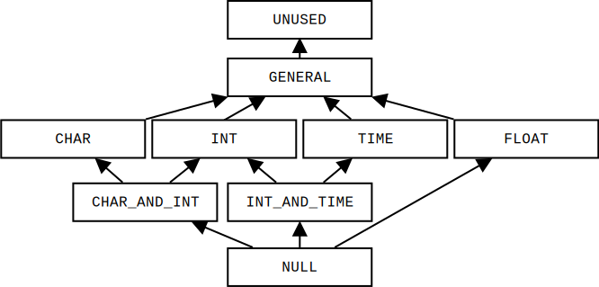
Figure 10.2: The subset relationship among conversion categories.
Here are the subtyping rules among different @Format qualifiers. It is legal to:
The following example shows the subtyping rules in action:
@Format({FLOAT, INT})
String f;
f = "%f %d"; // Ok
f = "%s %d"; // OK, %s is weaker than %f
f = "%f"; // warning: last argument is ignored
f = "%f %d %s"; // error: too many arguments
f = "%d %d"; // error: %d is not weaker than %f
String.format(f, 0.8, 42);
If the Format String Checker issues no errors, it provides the following guarantees:
Following are examples for every guarantee:
String.format("%d", 42); // OK
String.format(Locale.GERMAN, "%d", 42); // OK
String.format(new Object()); // error (1a)
String.format("%y"); // error (1a)
String.format("%2$s", "unused", "used"); // warning (1b)
String.format("%1$d %1$f", 5.5); // error (1c)
String.format("%1$d %1$f %d", null, 6); // error (1c)
String.format("%s"); // error (2a)
String.format("%s", "used", "ignored"); // warning (2b)
String.format("%c",4.2); // error (2c)
String.format("%c", (String)null); // error (2c)
String.format("%1$d %1$f", new Object[]{1}); // warning (3)
String.format("%s", new Object[]{"hello"}); // warning (3)
There are three cases in which the Format String Checker may issue a warning or error, even though the code cannot fail at run time. (These are in addition to the general conservatism of a type system: code may be correct because of application invariants that are not captured by the type system.) In each of these cases, you can rewrite the code, or you can manually check it and write a @SuppressWarnings annotation if you can reason that the code is correct.
Case 1(b): Unused format arguments. It is legal to provide more arguments than are required by the format string; Java ignores the extras. However, this is an uncommon case. In practice, a mismatch between the number of format specifiers and the number of format arguments is usually an error.
Case 1(c): Format arguments that can only be null. It is legal to write a format string that permits only null arguments and throws an exception for any other argument. An example is String.format("%1$d %1$f", null). The Format String Checker forbids such a format string. If you should ever need such a format string, simply replace the problematic format specifier with "null". For example, you would replace the call above by String.format("null null").
Case 3: Array format arguments. The Format String Checker performs no analysis of arrays, only of varargs invocations. It is better style to use varargs when possible.
The Format String Checker helps prevent bugs by detecting, at compile time, which invocations of format methods will fail. While the Format String Checker finds most of these invocations, there are cases in which a format method call will fail even though the Format String Checker issued neither errors nor warnings. These cases are:
The following examples illustrate these limitations:
class A {
public String toString() {
throw new Error();
}
}
class B implements Formattable {
public void formatTo(Formatter fmt, int f,
int width, int precision) {
throw new Error();
}
}
// The checker issues no errors or warnings for the
// following illegal invocations of format methods.
String.format(null); // NullPointerException (1)
String.format("%s", new A()); // Error (2)
String.format("%s", new B()); // Error (3)
String.format("%c", (int)-1); // IllegalFormatCodePointException (4)
As described in Section 23.3, the Format String Checker adds implicit qualifiers, reducing the number of annotations that must appear in your code. The checker implicitly adds the @Format qualifier with the appropriate conversion categories to any String literal that is a valid format string.
Your project may contain methods that forward their arguments to a format method. Consider for example the following log method:
@FormatMethod
void log(String format, Object... args) {
if (enabled) {
logfile.print(indent_str);
logfile.printf(format , args);
}
}
By attaching a @FormatMethod annotation to such a method, you can instruct the Format String Checker to check every invocation of the method. This check is analogous to the check done on every invocation of built in format methods like String.format.
The Format String Checker automatically determines whether each String literal is a valid format string or not. When a string is computed or is obtained from an external resource, then the string must be trusted or tested.
One way to test a string is to call the FormatUtil.asFormat method to check whether the format string is valid and its format specifiers match certain conversion categories. If this is not the case, asFormat raises an exception. Your code should catch this exception and handle it gracefully.
The following code examples may fail at run time, and therefore they do not type check. The type-checking errors are indicated by comments.
Scanner s = new Scanner(System.in); String fs = s.next(); System.out.printf(fs, "hello", 1337); // error: fs is not known to be a format string
Scanner s = new Scanner(System.in);
@Format({GENERAL, INT}) String fs = s.next(); // error: fs is not known to have the given type
System.out.printf(fs, "hello", 1337); // OK
The following variant does not throw a run-time error, and therefore passes the type-checker:
Scanner s = new Scanner(System.in);
String format = s.next()
try {
format = FormatUtil.asFormat(format, GENERAL, INT);
} catch (IllegalFormatException e) {
// Replace this by your own error handling.
System.err.println("The user entered the following invalid format string: " + format);
System.exit(2);
}
// fs is now known to be of type: @Format({GENERAL, INT}) String
System.out.printf(format, "hello", 1337);
A potential disadvantage of using the FormatUtil class is that your code becomes dependent on the Checker Framework at run time as well as at compile time. You can avoid this by adding the Checker Framework to your project, or by copying the FormatUtil class into your own code.
The Internationalization Format String Checker, or I18n Format String Checker, prevents use of incorrect i18n format strings.
If the I18n Format String Checker issues no warnings or errors, then MessageFormat.format will raise no error at run time. “I18n” is short for “internationalization” because there are 18 characters between the “i” and the “n”.
Here are the examples of errors that the I18n Format Checker detects at compile time.
// Warning: the second argument is missing.
MessageFormat.format("{0} {1}", 3.1415);
// String argument cannot be formatted as Time type.
MessageFormat.format("{0, time}", "my string");
// Invalid format string: unknown format type: thyme.
MessageFormat.format("{0, thyme}", new Date());
// Invalid format string: missing the right brace.
MessageFormat.format("{0", new Date());
// Invalid format string: the argument index is not an integer.
MessageFormat.format("{0.2, time}", new Date());
// Invalid format string: "#.#.#" subformat is invalid.
MessageFormat.format("{0, number, #.#.#}", 3.1415);
For instructions on how to run the Internationalization Format String Checker, see Section 11.5.
The Internationalization Checker or I18n Checker (Chapter 12.2) has a different purpose. It verifies that your code is properly internationalized: any user-visible text should be obtained from a localization resource and all keys exist in that resource.
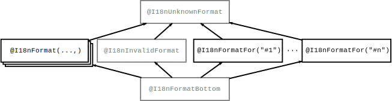
Figure 11.1: The Internationalization Format String Checker type qualifier hierarchy. The figure does not show the subtyping rules among different @I18nFormat(...) qualifiers; see Section 11.2. All @I18nFormatFor annotations are unrelated by subtyping. The qualifiers in gray are used internally by the checker and should never be written by a programmer.
The MessageFormat documentation specifies the syntax of the i18n format string.
These are the qualifiers that make up the I18n Format String type system. Figure 11.1 shows their subtyping relationships.
static void method(@I18nFormatFor("#2") String format, Object... args) {
// the body may use the parameters like this:
MessageFormat.format(format, args);
}
method("{0, number} {1}", 3.1415, "A string"); // OK
// error: The string "hello" cannot be formatted as a Number.
method("{0, number} {1}", "hello", "goodbye");
In a message string, the optional second element within the curly braces is called a format type and must be one of number, date, time, and choice. These four format types correspoond to different conversion categories. date and time correspond to DATE in the conversion categories figure. choice corresponds to NUMBER. The format type restricts what arguments are legal. For example, a date argument is not compatible with the number format type, i.e., MessageFormat.format("{0, number}", new Date()) will throw an exception.
The I18n Checker represents the possible arguments via conversion categories. A conversion category defines a set of restrictions or a subtyping rule.
Figure 11.2 summarizes the subset relationship among all conversion categories.
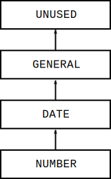
Figure 11.2: The subset relationship among i18n conversion categories.
Here are the subtyping rules among different @I18nFormat qualifiers. It is legal to:
The following example shows the subtyping rules in action:
@I18nFormat({NUMBER, NUMBER}) String format;
// OK.
format = "{0, number, #.#} {1, number}";
// OK, GENERAL is weaker (less restrictive) than NUMBER.
format = "{0, number} {1}";
// Error, the right-hand-side is stronger (more restrictive) than the left-hand-side's type.
format = "{0} {1} {2}";
The conversion categories are:
The Internationalization Format String Checker checks calls to the i18n formatting method MessageFormat.format and guarantees the following:
MessageFormat.format("{0, number} {1, number}", 3.14); // Output: 3.14 {1}
MessageFormat.format("{0, number}", 1, new Date());
MessageFormat.format("{0, number} {0, number}", 3.14, 3.14);
This does not cause an error at run time, but it often indicates a programmer mistake. If it is intentional, then you should suppress the warning (see Chapter 24).
MessageFormat.format("{0, number} {1}", array);
The checker cannot verify whether the format string is valid, so the checker conservatively issues a warning. This is a limitation of the Internationalization Format String Checker.
MessageFormat.format("{0, time", new Date());
MessageFormat.format("{0.2, time}", new Date());
MessageFormat.format("{-1, time}", new Date());
MessageFormat.format("{0, foo}", 3.14);
MessageFormat.format("{0, choice}", 3.14);
MessageFormat.format("{0, time, number}", 3.14);
MessageFormat.format("{0, number, #.#.#}", 3.14)
MessageFormat.format("{0, number}", new Date());
The Checker also detects illegal assignments: assigning a non-format-string or an incompatible format string to a variable declared as containing a specific type of format string. For example,
@I18nFormat({GENERAL, NUMBER}) String format;
// OK.
format = "{0} {1, number}";
// OK, GENERAL is weaker (less restrictive) than NUMBER.
format = "{0} {1}";
// OK, it is legal to have fewer arguments than required (less restrictive).
// But the warning will be issued instead.
format = "{0}";
// Error, the format string is stronger (more restrictive) than the specifiers.
format = "{0} {1} {2}";
// Error, the format string is more restrictive. NUMBER is a subtype of GENERAL.
format = "{0, number} {1, number}";
A programmer rarely writes an i18n format string literally. (The examples in this chapter show that for simplicity.) Rather, the i18n format strings are read from a resource file. The program chooses a resource file at run time depending on the locale (for example, different resource files for English and Spanish users).
For example, suppose that the resource1.properties file contains
key1 = The number is {0, number}.
Then code such as the following:
String formatPattern = ResourceBundle.getBundle("resource1").getString("key1");
System.out.println(MessageFormat.format(formatPattern, 2.2361));
will output “The number is 2.2361.” A different resource file would contain key1 = El número es {0, number}.
When you run the I18n Format String Checker, you need to indicate which resource file it should check. If you change the resource file or use a different resource file, you should re-run the checker to ensure that you did not make an error. The I18n Format String Checker supports two types of resource files: ResourceBundles and property files. The example above shows use of resource bundles. For more about checking property files, see Chapter 12.
The checker can be invoked by running one of the following commands (with the whole command on one line).
javac -processor org.checkerframework.checker.i18nformatter.I18nFormatterChecker -Abundlenames=MyResource MyFile.java
javac -processor org.checkerframework.checker.i18nformatter.I18nFormatterChecker -Apropfiles=MyResource.properties MyFile.java
javac -processor org.checkerframework.checker.i18nformatter.I18nFormatterChecker MyFile.java
In the case that the checker cannot infer the i18n format type of a string, you can use the I18nFormatUtil.hasFormat method to define the type of the string in the scope of a conditional statement.
For an example, see Section 11.7.
// suppose the bundle "MyResource" contains: key1={0, number} {1, date}
String value = ResourceBundle.getBundle("MyResource").getString("key1");
MessageFormat.format(value, 3.14, new Date()); // OK
// error: incompatible types in argument; found String, expected number
MessageFormat.format(value, "Text", new Date());
void test1(String format) {
if (I18nFormatUtil.hasFormat(format, I18nConversionCategory.GENERAL,
I18nConversionCategory.NUMBER)) {
MessageFormat.format(format, "Hello", 3.14); // OK
// error: incompatible types in argument; found String, expected number
MessageFormat.format(format, "Hello", "Bye");
// error: missing arguments; expected 2 but 1 given
MessageFormat.format(format, "Bye");
// error: too many arguments; expected 2 but 3 given
MessageFormat.format(format, "A String", 3.14, 3.14);
}
}
static void method(@I18nFormatFor("#2") String f, Object... args) {...}
// OK, MessageFormat.format(...) would return "3.14 Hello greater than one"
method("{0, number} {1} {2, choice,0#zero|1#one|1<greater than one}",
3.14, "Hello", 100);
// error: incompatible types in argument; found String, expected number
method("{0, number} {1}", "Bye", "Bye");
@I18nFormat({I18nConversionCategory.DATE}) String;
s1 = "{0}";
s1 = "{0, number}"; // error: incompatible types in assignment
The Property File Checker ensures that a property file or resource bundle (both of which act like maps from keys to values) is only accessed with valid keys. Accesses without a valid key either return null or a default value, which can lead to a NullPointerException or hard-to-trace behavior. The Property File Checker (Section 12.1) ensures that the used keys are found in the corresponding property file or resource bundle.
We also provide two specialized checkers. An Internationalization Checker (Section 12.2) verifies that code is properly internationalized. A Compiler Message Key Checker (Section 12.3) verifies that compiler message keys used in the Checker Framework are declared in a property file; This is an example of a simple specialization of the property file checker, and the Checker Framework source code shows how it is used.
It is easy to customize the property key checker for other related purposes. Take a look at the source code of the Compiler Message Key Checker and adapt it for your purposes.
The general Property File Checker ensures that a resource key is located in a specified property file or resource bundle.
The annotation @PropertyKey indicates that the qualified String is a valid key found in the property file or resource bundle. You do not need to annotate String literals. The checker looks up every String literal in the specified property file or resource bundle, and adds annotations as appropriate.
If you pass a String variable to be eventually used as a key, you also need to annotate all these variables with @PropertyKey.
The checker can be invoked by running the following command:
javac -processor org.checkerframework.checker.propkey.PropertyKeyChecker
-Abundlenames=MyResource MyFile.java ...
You must specify the resources, which map keys to strings. The checker supports two types of resource: resource bundles and property files. You can specify one or both of the following two command-line options:
resource_name is the name of the resource to be used with ResourceBundle.getBundle(). The checker uses the default Locale and ClassLoader in the compilation system. (For a tutorial about ResourceBundles, see https://docs.oracle.com/javase/tutorial/i18n/resbundle/concept.html.) Multiple resource bundle names are separated by colons ’:’.
prop_file is the name of a properties file that maps keys to values. The file format is described in the Javadoc for Properties.load(). Multiple files are separated by colons ’:’.
The Internationalization Checker, or I18n Checker, verifies that your code is properly internationalized. Internationalization is the process of designing software so that it can be adapted to different languages and locales without needing to change the code. Localization is the process of adapting internationalized software to specific languages and locales.
Internationalization is sometimes called i18n, because the word starts with “i”, ends with “n”, and has 18 characters in between. Localization is similarly sometimes abbreviated as l10n.
The checker focuses on one aspect of internationalization: user-visible strings should be presented in the user’s own language, such as English, French, or German. This is achieved by looking up keys in a localization resource, which maps keys to user-visible strings. For instance, one version of a resource might map "CANCEL_STRING" to "Cancel", and another version of the same resource might map "CANCEL_STRING" to "Abbrechen".
There are other aspects to localization, such as formatting of dates (3/5 vs. 5/3 for March 5), that the checker does not check.
The Internationalization Checker verifies these two properties:
If you use the Internationalization Checker, you may want to also use the Internationalization Format String Checker, or I18n Format String Checker (Chapter 11). It verifies that internationalization format strings are well-formed and used with arguments of the proper type, so that MessageFormat.format does not fail at run time.
The Internationalization Checker supports two annotations:
You may need to add the @Localized annotation to more methods in the JDK or other libraries, or in your own code.
The Internationalization Checker can be invoked by running the following command:
javac -processor org.checkerframework.checker.i18n.I18nChecker -Abundlenames=MyResource MyFile.java ...
You must specify the localization resource, which maps keys to user-visible strings. Like the general Property Key Checker, the Internationalization Checker supports two types of localization resource: ResourceBundles using the -Abundlenames=resource_name option or property files using the -Apropfiles=prop_file option.
The Checker Framework uses compiler message keys to output error messages. These keys are substituted by localized strings for user-visible error messages. Using keys instead of the localized strings in the source code enables easier testing, as the expected error keys can stay unchanged while the localized strings can still be modified. We use the Compiler Message Key Checker to ensure that all internal keys are correctly localized. Instead of using the Property File Checker, we use a specialized checker, giving us more precise documentation of the intended use of Strings.
The single annotation used by this checker is @CompilerMessageKey. The Checker Framework is completely annotated; for example, class org.checkerframework.framework.source.Result uses @CompilerMessageKey in methods failure and warning. For most users of the Checker Framework there will be no need to annotate any Strings, as the checker looks up all String literals and adds annotations as appropriate.
The Compiler Message Key Checker can be invoked by running the following command:
javac -processor org.checkerframework.checker.compilermsgs.CompilerMessagesChecker
-Apropfiles=messages.properties MyFile.java ...
You must specify the resource, which maps compiler message keys to user-visible strings. The checker supports the same options as the general property key checker. Within the Checker Framework we only use property files, so the -Apropfiles=prop_file option should be used.
The Signature String Checker, or Signature Checker for short, verifies that string representations of types and signatures are used correctly.
Java defines multiple different string representations for types (see Section 13.1), and it is easy to misuse them or to miss bugs during testing. Using the wrong string format leads to a run-time exception or an incorrect result. This is a particular problem for fully qualified and binary names, which are nearly the same — they differ only for nested classes and arrays.
Java defines six formats for the string representation of a type. There is an annotation for each of these representations. Figure 13.1 shows how they are related; examples appear in a table below.
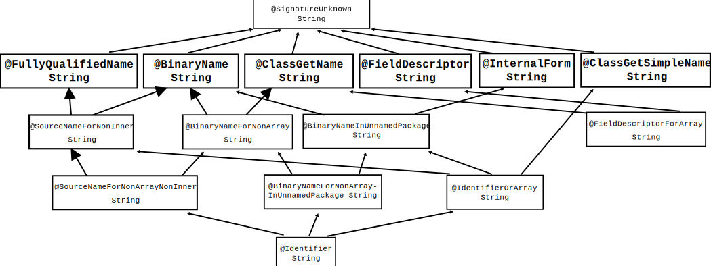
Figure 13.1: Partial type hierarchy for the Signature type system, showing string representations of a Java type. Programmers only need to write the boldfaced qualifiers, in the second row; qualifiers below those are included to improve the internal handling of String literals.
Other type qualifiers are the intersection of two or more qualifiers listed above; for example, a @SourceNameForNonInner is a string that is a valid fully qualified name and a valid binary name. A programmer should never or rarely use these qualifiers, and you can ignore them as implementation details of the Signature Checker, though you might occasionally see them in an error message. These qualifiers exist to give literals sufficiently precise types that they can be used in any appropriate context.
Java also defines other string formats for a type: qualified names (JLS §6.2) and canonical names (JLS §6.7). The Signature Checker does not include annotations for these.
Here are examples of the supported formats:
| fully-qualified name | binary name | Class.getName | field descriptor | internal form | Class.getSimpleName |
| int | int | int | I | int | int |
| int[][] | int[][] | [[I | [[I | int[][] | int[][] |
| MyClass | MyClass | MyClass | LMyClass; | MyClass | MyClass |
| MyClass[] | MyClass[] | [LMyClass; | [LMyClass; | MyClass[] | MyClass[] |
| n/a for anonymous class | MyClass$22 | MyClass$22 | LMyClass$22; | MyClass$22 | (empty string) |
| n/a for array of anon. class | MyClass$22[] | [LMyClass$22; | [LMyClass$22; | MyClass$22[] | [] |
| java.lang.Integer | java.lang.Integer | java.lang.Integer | Ljava/lang/Integer; | java/lang/Integer | Integer |
| java.lang.Integer[] | java.lang.Integer[] | [Ljava.lang.Integer; | [Ljava/lang/Integer; | java/lang/Integer[] | Integer[] |
| package.Outer.Inner | package.Outer$Inner | package.Outer$Inner | Lpackage/Outer$Inner; | package/Outer$Inner | Inner |
| package.Outer.Inner[] | package.Outer$Inner[] | [Lpackage.Outer$Inner; | [Lpackage/Outer$Inner; | package/Outer$Inner[] | Inner[] |
| n/a for anonymous class | package.Outer$22 | package.Outer$22 | Lpackage/Outer$22; | package/Outer$22 | (empty string) |
| n/a for array of anon. class | package.Outer$22[] | [Lpackage.Outer$22; | [Lpackage/Outer$22; | package/Outer$22[] | [] |
Java defines one format for the string representation of a method signature:
Object mymethod(int i, double d, Thread t)is
(IDLjava/lang/Thread;)Ljava/lang/Object;
Certain methods in the JDK, such as Class.forName, are annotated indicating the type they require. The Signature Checker ensures that clients call them with the proper arguments. The Signature Checker does not reason about string operations such as concatenation, substring, parsing, etc.
To run the Signature Checker, supply the -processor org.checkerframework.checker.signature.SignatureChecker command-line option to javac.
One of the most prevalent GUI-related bugs is invalid UI update or invalid thread access: accessing the UI directly from a background thread.
Most GUI frameworks (including Android, AWT, Swing, and SWT) create a single distinguished thread — the UI event thread — that handles all GUI events and updates. To keep the interface responsive, any expensive computation should be offloaded to background threads (also called worker threads). If a background thread accesses a UI element such as a JPanel (by calling a JPanel method or reading/writing a field of JPanel), the GUI framework raises an exception that terminates the program. To fix the bug, the background thread should send a request to the UI thread to perform the access on its behalf.
It is difficult for a programmer to remember which methods may be called on which thread(s). The GUI Effect Checker solves this problem. The programmer annotates each method to indicate whether:
The GUI Effect Checker verifies these effects and statically enforces that UI methods are only called from the correct thread. A method with the safe effect is prohibited from calling a method with the UI effect.
For example, the effect system can reason about when method calls must be dispatched to the UI thread via a message such as Display.syncExec.
@SafeEffect
public void calledFromBackgroundThreads(JLabel l) {
l.setText("Foo"); // Error: calling a @UIEffect method from a @SafeEffect method
Display.syncExec(new @UI Runnable {
@UIEffect // inferred by default
public void run() {
l.setText("Bar"); // OK: accessing JLabel from code run on the UI thread
}
});
}
The GUI Effect Checker’s annotations fall into three categories:
There are two primary GUI effect annotations:
@SafeEffect is a sub-effect of @UIEffect, in that it is always safe to call a @SafeEffect method anywhere it is permitted to call a @UIEffect method. We write this relationship as
The GUI Effect Checker ensures that only the UI thread accesses UI objects. This prevents GUI errors such as invalid UI update and invalid thread access.
The GUI Effect Checker issues errors in the following cases:
Additionally, if a method implements or overrides a method in two supertypes (two interfaces, or an interface and parent class), and those supertypes give different effects for the methods, the GUI Effect Checker issues a warning (not an error).
The GUI Effect Checker can be invoked by running the following command:
javac -processor org.checkerframework.checker.guieffect.GuiEffectChecker MyFile.java ...
The default method annotation is @SafeEffect, since most code in most programs is not related to the UI. This also means that typically, code that is unrelated to the UI need not be annotated at all.
The GUI Effect Checker provides three primary ways to change the default method effect for a class or package:
There is one other place where the default annotation is not automatically @SafeEffect: anonymous inner classes. Since anonymous inner classes exist primarily for brevity, it would be unfortunate to spoil that brevity with extra annotations. By default, an anonymous inner class method that overrides or implements a method of the parent type inherits that method’s effect. For example, an anonymous inner class implementing an interface with method @UIEffect void m() need not explicitly annotate its implementation of m(); the implementation will inherit the parent’s effect. Methods of the anonymous inner class that are not inherited from a parent type follow the standard defaulting rules.
Sometimes a type is reused for both UI-specific and background-thread work. A good example is the Runnable interface, which is used both for creating new background threads (in which case the run() method must have the @SafeEffect) and for sending code to the UI thread to execute (in which case the run() method may have the @UIEffect). But the declaration of Runnable.run() may have only one effect annotation in the source code. How do we reconcile these conflicting use cases?
Effect-polymorphism permits a type to be used for both UI and non-UI purposes. It is similar to Java’s generics in that you define, then use, the effect-polymorphic type. Recall that to define a generic type, you write a type parameter such as <T> and use it in the body of the type definition; for example, class List<T> { ... T get() {...} ... }. To instantiate a generic type, you write its name along with a type argument; for example, List<Date> myDates;.
To declare that a class is effect-polymorphic, annotate its definition with @PolyUIType. To use the effect variable in the class body, annotate a method with @PolyUIEffect. It is an error to use @PolyUIEffect in a class that is not effect-polymorphic.
Consider the following example:
@PolyUIType
public interface Runnable {
@PolyUIEffect
void run();
}
This declares that class Runnable is parameterized over one generic effect, and that when Runnable is instantiated, the effect argument will be used as the effect for the run method.
To instantiate an effect-polymorphic type, write one of these three type qualifiers before a use of the type:
As an example:
@AlwaysSafe Runnable s = ...; s.run(); // s.run() is @SafeEffect @PolyUI Runnable p = ...; p.run(); // p.run() is @PolyUIEffect (context-dependent) @UI Runnable u = ...; u.run(); // u.run() is @UIEffect
It is an error to apply an effect instantiation qualifier to a type that is not effect-polymorphic.
Sometimes you may wish to subclass a specific instantiation of an effect-polymorphic type, just as you may extend List<String>.
To do this, simply place the effect instantiation qualifier by the name of the type you are defining, e.g.:
@UI
public class UIRunnable extends Runnable {...}
@AlwaysSafe
public class SafeRunnable extends Runnable {...}
The GUI Effect Checker will automatically apply the qualifier to all classes and interfaces the class being defined extends or implements. (This means you cannot write a class that is a subtype of a @AlwaysSafe Foo and a @UI Bar, but this has not been a problem in our experience.)
With three effect annotations, we must extend the static sub-effecting relationship:
This is the correct sub-effecting relation because it is always safe to call a @SafeEffect method (whether from an effect-polymorphic method or a UI method), and a @UIEffect method may safely call any other method.
This induces a subtyping hierarchy on type qualifiers:
This is sound because a method instantiated according to any qualifier will always be safe to call in place of a method instantiated according to one of its super-qualifiers. This allows clients to pass “safer” instances of some object type to a given method.
The ECOOP 2013 paper “JavaUI: Effects for Controlling UI Object Access”
includes some case
studies on the checker’s efficacy, including descriptions of the relatively few false warnings
we encountered.
It also contains a more formal description of the effect system.
You can obtain the paper at:
http://homes.cs.washington.edu/~mernst/pubs/gui-thread-ecoop2013-abstract.html
For many applications, it is important to use the correct units of measurement for primitive types. For example, NASA’s Mars Climate Orbiter (cost: $327 million) was lost because of a discrepancy between use of the metric unit Newtons and the imperial measure Pound-force.
The Units Checker ensures consistent usage of units. For example, consider the following code:
@m int meters = 5 * UnitsTools.m; @s int secs = 2 * UnitsTools.s; @mPERs int speed = meters / secs;
Due to the annotations @m and @s, the variables meters and secs are guaranteed to contain only values with meters and seconds as units of measurement. Utility class UnitsTools provides constants with which unqualified integer are multiplied to get values of the corresponding unit. The assignment of an unqualified value to meters, as in meters = 99, will be flagged as an error by the Units Checker.
The division meters/secs takes the types of the two operands into account and determines that the result is of type meters per second, signified by the @mPERs qualifier. We provide an extensible framework to define the result of operations on units.
The checker currently supports three varieties of units annotations: kind annotations (@Length, @Mass, …), the SI units (@m, @kg, …), and polymorphic annotations (@PolyUnit).
Kind annotations can be used to declare what the expected unit of measurement is, without fixing the particular unit used. For example, one could write a method taking a @Length value, without specifying whether it will take meters or kilometers. The following kind annotations are defined:
For each kind of unit, the corresponding SI unit of measurement is defined:
You may specify SI unit prefixes, using enumeration Prefix. The basic SI units (@s, @m, @g, @A, @K, @mol, @cd) take an optional Prefix enum as argument. For example, to use nanoseconds as unit, you could use @s(Prefix.nano) as a unit type. You can sometimes use a different annotation instead of a prefix; for example, @mm is equivalent to @m(Prefix.milli).
Class UnitsTools contains a constant for each SI unit. To create a value of the particular unit, multiply an unqualified value with one of these constants. By using static imports, this allows very natural notation; for example, after statically importing UnitsTools.m, the expression 5 * m represents five meters. As all these unit constants are public, static, and final with value one, the compiler will optimize away these multiplications.
The polymorphic annotation @PolyUnit enables you to write a method that takes an argument of any unit type and returns a result of that same type. For more about polymorphic qualifiers, see Section 22.2. For an example of it use, see @PolyUnit, see the @PolyUnit Javadoc.
You can create new kind annotations and unit annotations that are specific to the particular needs of your project. An easy way to do this is by copying and adapting an existing annotation. (In addition, search for all uses of the annotation’s name throughout the Units Checker implementation, to find other code to adapt; read on for details.)
Here is an example of a new unit annotation.
@Documented @Retention(RetentionPolicy.RUNTIME) @SubtypeOf( { Time.class } ) @UnitsMultiple(quantity=s.class, prefix=Prefix.nano) @Target(ElementType.TYPE_USE, ElementType.TYPE_PARAMETER) public @interface ns {}
The @SubtypeOf meta-annotation specifies that this annotation introduces an additional unit of time. The @UnitsMultiple meta-annotation specifies that this annotation should be a nano multiple of the basic unit @s: @ns and @s(Prefix.nano) behave equivalently and interchangeably. Most annotation definitions do not have a @UnitsMultiple meta-annotation.
Note that all custom annotations must have the @Target(ElementType.TYPE_USE) meta-annotation. See section 28.3.1.
To take full advantage of the additional unit qualifier, you need to do two additional steps. (1) Provide constants that convert from unqualified types to types that use the new unit. See class UnitsTools for examples (you will need to suppress a checker warning in just those few locations). (2) Put the new unit in relation to existing units. Provide an implementation of the UnitsRelations interface as a meta-annotation to one of the units.
See demonstration examples/units-extension/ for an example extension that defines Hertz (hz) as scalar per second, and defines an implementation of UnitsRelations to enforce it.
The Units Checker ensures that unrelated types are not mixed.
All types with a particular unit annotation are disjoint from all unannotated types, from all types with a different unit annotation, and from all types with the same unit annotation but a different prefix.
Subtyping between the units and the unit kinds is taken into account, as is the @UnitsMultiple meta-annotation.
Multiplying a scalar with a unit type results in the same unit type.
The division of a unit type by the same unit type results in the unqualified type.
Multiplying or dividing different unit types, for which no unit relation is known to the system, will result in a MixedUnits type, which is separate from all other units. If you encounter a MixedUnits annotation in an error message, ensure that your operations are performed on correct units or refine your UnitsRelations implementation.
The Units Checker does not change units based on multiplication; for example, if variable mass has the type @kg double, then mass * 1000 has that same type rather than the type @g double. (The Units Checker has no way of knowing whether you intended a conversion, or you were computing the mass of 1000 items. You need to make all conversions explicit in your code, and it’s good style to minimize the number of conversions.)
The Units Checker can be invoked by running the following commands.
javac -processor org.checkerframework.checker.units.UnitsChecker MyFile.java ...
javac -Xbootclasspath/p:/full/path/to/myProject/bin:/full/path/to/myLibrary/bin \ -processor org.checkerframework.checker.units.UnitsChecker \ -Aunits=myModule.qual.MyUnit,myModule.qual.MyOtherUnit MyFile.java ...
The annotations listed in -Aunits must be accessible to the compiler during compilation in the classpath. In other words, they must already be compiled (and, typically, be on the javac bootclasspath) before you run the Units Checker with javac. It is not sufficient to supply their source files on the command line.
javac -Xbootclasspath/p:/full/path/to/myProject/bin:/full/path/to/myLibrary/bin \ -processor org.checkerframework.checker.units.UnitsChecker \ -AunitsDirs=/full/path/to/myProject/bin:/full/path/to/myLibrary/bin MyFile.java ...
Note that in these two examples, the compiled class file of the myModule.qual.MyUnit and myModule.qual.MyOtherUnit annotations must exist in either the myProject/bin directory or the myLibrary/bin directory. The following placement of the class files will work with the above commands:
.../myProject/bin/myModule/qual/MyUnit.class .../myProject/bin/myModule/qual/MyOtherUnit.class
The two options can be used at the same time to provide groups of annotations from directories, and individually named annotations.
Also, see the example project in the checker/examples/units-extension directory.
One example of when you need to suppress warnings is when you initialize a variable with a unit type by a literal value. To remove this warning message, it is best to introduce a constant that represents the unit and to add a @SuppressWarnings annotation to that constant. For examples, see class UnitsTools.
The Constant Value Checker is a constant propagation analysis: for each variable, it determines whether that variable’s value can be known at compile time.
There are two ways to run the Constant Value Checker.
The Constant Value Checker uses type annotations to indicate the value of an expression (Section 16.1.1), and it uses method annotations to indicate methods that the Constant Value Checker can execute at compile time (Section 16.1.2).
Typically, the programmer does not write any type annotations. Rather, the type annotations are inferred by the Constant Value Checker. The programmer is also permitted to write type annotations. This is only necessary in locations where the Constant Value Checker does not infer annotations: on fields and method signatures.
The type annotations are @BoolVal, @IntVal, @DoubleVal, and @StringVal.
Each type annotation takes as an argument a set of values, and its meaning is that at run time, the expression evaluates to one of the values. For example, an expression of type @StringVal("a", "b") evaluates to one of the values "a", "b", or null. The set is limited to 10 entries; if a variable could be more than 10 different values, the Constant Value Checker gives up and its type becomes @UnknownVal instead.
Figure 16.1 shows the subtyping relationship among the type annotations. For two annotations of the same type, subtypes have a smaller set of possible values, as also shown in the figure. Because int can be casted to double, an @IntVal annotation is a subtype of a @DoubleVal annotation with the same values.
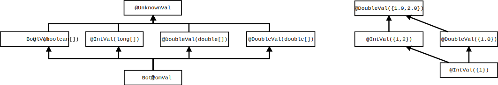
Figure 16.1: The type qualifier hierarchy of the Constant Value Checker annotations. Qualifiers in gray are used internally by the type system but should never be written by a programmer. On the right are examples of additional subtyping relationships that depend on the annotations’ arguments.
Figure 16.2 shows how the Constant Value Checker infers type annotations (using flow-sensitive type qualifier refinement, Section 23.4).
public void foo(boolean b) { int i = 1; // i has type: @IntVal({1}) int if (b) { i = 2; // i now has type: @IntVal({2}) int } // i now has type: @IntVal({1,2}) int i = i + 1; // i now has type: @IntVal({2,3}) int }
Figure 16.2: The Constant Value Checker infers different types for a variable on different lines of the program.
Whenever all the operands of an expression are compile-time constants (that is, their types have constant-value type annotations), the Constant Value Checker attempts to execute the expression. This is independent of any optimizations performed by the compiler and does not affect the code that is generated.
The Constant Value Checker statically executes operators that do not throw exceptions (e.g., +, -, <<, !=), and also calls to methods annotated with @StaticallyExecutable.
@StaticallyExecutable @Pure public int foo(int a, int b) { return a + b; } public void bar() { int a = 5; // a has type: @IntVal({5}) int int b = 4; // b has type: @IntVal({4}) int int c = foo(a, b); // c has type: @IntVal({9}) int }
Figure 16.3: The @StaticallyExecutable annotation enables constant propagation through method calls.
A @StaticallyExecutable method must be @Pure (side-effect-free and deterministic). Additionally, a @StaticallyExecutable method and any method it calls must be on the classpath for the compiler, because they are reflectively called at compile-time to perform the constant value analysis. Any standard library methods (such as those annotated as @StaticallyExecutable in file statically-executable.astub) will already be on the classpath.
To use @StaticallyExecutable on methods in your own code, you should first compile the code without the Constant Value Checker and then add the location of the resulting .class files to the classpath. This can be done by either adding the destination path to your environment variable CLASSPATH or by passing the argument -classpath path/to/class/files to the call. The latter would look similar to: -processor org.checkerframework.common.value.ValueChecker -Astubs=statically-executable.astub -classpath $CLASSPATH:$MY_PROJECT/build/
The Constant Value Checker issues a warning if it cannot load and run, at compile time, a method marked as @StaticallyExecutable. If it issues such a warning, then the return value of the method will be @UnknownVal instead of being able to be resolved to a specific value annotation. Some examples of these:
The checker could not find the class specified for resolving a @StaticallyExecutable method. Typically this is caused by not providing the path of a class-file needed to the classpath.
The checker could not find the method foo(int) specified for resolving a @StaticallyExecutable method, but could find the class. This is usually due to providing an outdated version of the class-file that does not contain the @StaticallyExecutable method.
An exception was thrown when trying to statically execute the method. In this case it was a divide-by-zero exception. If the arguments to the method each only had one value in their annotations then this exception will always occur when the program is actually run as well. If there are multiple possible values then the exception might not be thrown on every execution, depending on the run-time values.
There is one other situation in which the Constant Value Checker produces a warning message:
The Constant Value Checker only tracks up to 10 possible values for an expression. If you write an annotation with more values than will be tracked, the annotation is ignored.
The Aliasing Checker identifies expressions that definitely have no aliases.
Two expressions are aliased when they have the same non-primitive value; that is, they are references to the identical Java object in the heap. Another way of saying this is that two expressions, exprA and exprB, are aliases of each other when exprA == exprB at the same program point.
Assigning to a variable or field typically creates an alias. For example, after the statement a = b;, the variables a and b are aliased.
Knowing that an expression is not aliased permits more accurate reasoning about how side effects modify the expression’s value.
To run the Aliasing Checker, supply the -processor org.checkerframework.common.aliasing.AliasingChecker command-line option to javac. However, a user rarely runs the Aliasing Checker directly. This type system is mainly intended to be used together with other type systems. For example, the SPARTA information flow type-checker (Section 21.8) uses the Aliasing Checker to improve its type refinement — if an expression has no aliases, a more refined type can often be inferred, otherwise the type-checker makes conservative assumptions.

Figure 17.1: Type hierarchy for the Aliasing type system.
There are two possible types for an expression:
The @Unique annotation is only allowed at local variables, method parameters, constructor results, and method returns. A constructor’s result should be annotated with @Unique only if the constructor’s body does not creates an alias to the constructed object.
There are also two annotations, which are currently trusted instead of verified, that can be used on formal parameters (including the receiver parameter, this):
This section lists the expressions that create aliases. These are also called “leaking contexts”.
@Unique Object u = ...; Object o = u; // (not.unique) type-checking error!
If this example type-checked, then u and o would be aliased. For this example to type-check, either the @Unique annotation on the type of u, or the o = u; assignment, must be removed.
Here is an example for argument-passing:
void foo(Object o) { ... }
@Unique Object u = ...;
foo(u); // type-checking error, because foo may create an alias of the passed argument
Passing a non-aliased reference to a method does not necessarily create an alias. However, the body of the method might create an alias or leak the reference. Thus, the Aliasing Checker always treats a method call as creating aliases for each argument unless the corresponding formal parameter is marked as @@NonLeaked or @@LeakedToResult.
Here is an example for a return statement:
Object id(@Unique Object p) {
return p; // (not.unique) type-checking error!
}
If this code type-checked, then it would be possible for clients to write code like this:
@Unique Object u = ...; Object o = id(u);
after which there is an alias to u even though it is declared as @Unique.
However, it is permitted to write
Object id(@LeakedToResult Object p) {
return p;
}
after which the following code type-checks:
@Unique Object u = ...; id(u); // method call result is not used Object o1 = ...; Object o2 = id(o1); // argument is not @Unique
void foo() {
@Unique Exception uex = new Exception();
try {
throw uex; // (not.unique) type-checking error!
} catch (Exception ex) {
// uex and ex refer to the same object here.
}
}
Array initializers assign the elements in the initializers to corresponding indexes in the array, therefore expressions in an array initializer are leaked.
void foo() {
@Unique Object o = new Object();
Object[] ar = new Object[] { o }; // (not.unique) type-checking error!
// The expressions o and ar[0] are now aliased.
}
The @Unique qualifier may not be written on locations such as fields, array elements, and type parameters.
As an example of why @Unique may not be written on a field’s type, consider the following code:
class MyClass {
@Unique Object field;
void foo() {
MyClass myClass2 = this;
// this.field is now an alias of myClass2.field
}
}
That code must not type-check, because field is declared as @Unique but has an alias. The Aliasing Checker solves the problem by forbidding the @Unique qualifier on subcomponents of a structure, such as fields. Other solutions might be possible; they would be more complicated but would permit more code to type-check.
@Unique may not be written on a type parameter for similar reasons. The assignment
List<@Unique Object> l1 = ...; List<@Unique Object> l2 = l1;
must be forbidden because it would alias l1.get(0) with l2.get(0) even though both have type @Unique. The Aliasing Checker forbids this code by rejecting the type List<@Unique Object>.
Type refinement enables a type checker to treat an expression as a subtype of its declared type. For example, even if you declare a local variable as @MaybeAliased (or don’t write anything, since @MaybeAliased is the default), sometimes the Aliasing Checker can determine that it is actually @Unique. For more details, see Section 23.4.
The Aliasing Checker treats type refinement in the usual way, except that at (pseudo-)assignments the right-hand-side (RHS) may lose its type refinement, before the left-hand-side (LHS) is type-refined. The RHS always loses its type refinement (it is widened to @MaybeAliased, and its declared type must have been @MaybeAliased) except in the following cases:
A consequence of the above rules is that most method calls are treated conservatively. If a variable with declared type @MaybeAliased has been refined to @Unique and is used as an argument of a method call, it usually loses its @Unique refined type.
Figure 17.2 gives an example of the Aliasing Checker’s type refinement rules.
// Annotations on the StringBuffer class, used in the examples below. // class StringBuffer { // @Unique StringBuffer(); // StringBuffer append(@LeakedToResult StringBuffer this, @NonLeaked String s); // } void foo() { StringBuffer sb = new StringBuffer(); // sb is refined to @Unique. StringBuffer sb2 = sb; // sb loses its refinement. // Both sb and sb2 have aliases and because of that have type @MaybeAliased. } void bar() { StringBuffer sb = new StringBuffer(); // sb is refined to @Unique. sb.append("someString"); // sb stays @Unique, as no aliases are created. StringBuffer sb2 = sb.append("someString"); // sb is leaked and becomes @MaybeAliased. // Both sb and sb2 have aliases and because of that have type @MaybeAliased. }
Figure 17.2: Example of Aliasing Checker’s type refinement rules.
The Linear Checker implements type-checking for a linear type system. A linear type system prevents aliasing: there is only one (usable) reference to a given object at any time. Once a reference appears on the right-hand side of an assignment, it may not be used any more. The same rule applies for pseudo-assignments such as procedure argument-passing (including as the receiver) or return.
One way of thinking about this is that a reference can only be used once, after which it is “used up”. This property is checked statically at compile time. The single-use property only applies to use in an assignment, which makes a new reference to the object; ordinary field dereferencing does not use up a reference.
By forbidding aliasing, a linear type system can prevent problems such as unexpected modification (by an alias), or ineffectual modification (after a reference has already been passed to, and used by, other code).
To run the Linear Checker, supply the -processor org.checkerframework.checker.linear.LinearChecker command-line option to javac.
Figure 18.1 gives an example of the Linear Checker’s rules.
class Pair { Object a; Object b; public String toString() { return "<" + String.valueOf(a) + "," + String.valueOf(b) + ">"; } } void print(@Linear Object arg) { System.out.println(arg); } @Linear Pair printAndReturn(@Linear Pair arg) { System.out.println(arg.a); System.out.println(arg.b); // OK: field dereferencing does not use up the reference arg return arg; } @Linear Object m(Object o, @Linear Pair lp) { @Linear Object lo2 = o; // ERROR: aliases may exist @Linear Pair lp3 = lp; @Linear Pair lp4 = lp; // ERROR: reference lp was already used lp3.a; lp3.b; // OK: field dereferencing does not use up the reference print(lp3); print(lp3); // ERROR: reference lp3 was already used lp3.a; // ERROR: reference lp3 was already used @Linear Pair lp4 = new Pair(...); lp4.toString(); lp4.toString(); // ERROR: reference lp4 was already used lp4 = new Pair(); // OK to reassign to a used-up reference // If you need a value back after passing it to a procedure, that // procedure must return it to you. lp4 = printAndReturn(lp4); if (...) { print(lp4); } if (...) { return lp4; // ERROR: reference lp4 may have been used } else { return new Object(); } }
Figure 18.1: Example of Linear Checker rules.
The linear type system uses one user-visible annotation: @Linear. The annotation indicates a type for which each value may only have a single reference — equivalently, may only be used once on the right-hand side of an assignment.
The full qualifier hierarchy for the linear type system includes three types:
@UsedUp is a supertype of @NonLinear, which is a supertype of @Linear.
This hierarchy makes an assignment like
@Linear Object l = new Object(); @NonLinear Object nl = l; @NonLinear Object nl2 = nl;
legal. In other words, the fact that an object is referenced by a @Linear type means that there is only one usable reference to it now, not that there will never be multiple usable references to it. (The latter guarantee would be possible to enforce, but it is not what the Linear Checker currently does.)
The @Linear annotation is supported and checked only on method parameters (including the receiver), return types, and local variables. Supporting @Linear on fields would require a sophisticated alias analysis or type system, and is future work.
No annotated libraries are provided for linear types. Most libraries would not be able to use linear types in their purest form. For example, you cannot put a linearly-typed object in a hash table, because hash table insertion calls hashCode; hashCode uses up the reference and does not return the object, even though it does not retain any pointers to the object. For similar reasons, a collection of linearly-typed objects could not be sorted or searched.
Our lightweight implementation is intended for use in the parts of your program where errors relating to aliasing and object reuse are most likely. You can use manual reasoning (and possibly an unchecked cast or warning suppression) when objects enter or exit those portions of your program, or when that portion of your program uses an unannotated library.
A call to Method.invoke might reflectively invoke any method, so the annotated JDK contains conservative annotations for Method.invoke. These conservative library annotations often cause a checker to issue false positive warnings when type-checking code that uses reflection.
If you supply the -AresolveReflection command-line option, the Checker Framework attempts to resolve reflection. At each call to Method.invoke or Constructor.newInstance, the Checker Framework first soundly estimates which methods might be invoked at runtime. When type-checking the call, the Checker Framework uses a library annotation that indicates the parameter and return types of the possibly-invoked methods.
If the estimate of invoked methods is small, these types are precise and the checker issues fewer false positive warnings. If the estimate of invoked methods is large, these types are no better than the conservative library annotations.
Reflection resolution is disabled by default, because it increases the time to type-check a program. You should enable reflection resolution with the -AresolveReflection command-line option if, for some call site of Method.invoke or Constructor.newInstance in your program:
Reflection resolution does not change your source code or generated code. In particular, it does not replace the Method.invoke or Constructor.newInstance calls.
The command-line option -AresolveReflection=debug outputs verbose information about the reflection resolution process.
Section 19.1 first describes the MethodVal and ClassVal Checkers, which reflection resolution uses internally. Then, Section 19.2 gives examples of reflection resolution.
The implementation of reflection resolution internally uses the ClassVal Checker (Section 19.1.1) and the MethodVal Checker (Section 19.1.2). They are very similar to the Constant Value Checker (Section 16) in that their annotations estimate the run-time value of an expression.
In some cases, you may need to write annotations such as @ClassVal, @MethodVal, @StringVal and @ArrayLen (from the Constant Value Checker, Section 16) to aid in reflection resolution. Often, though, these annotations can be inferred (Section 19.1.3).
The ClassVal Checker defines the following annotations:
If multiple arguments are given, then the expression’s run-time value is known to be in that set.
The arguments are binary names (JLS §13.1).
If multiple arguments are given, then the run-time value is equal to or a subclass of some class in that set.
The arguments are binary names (JLS §13.1).
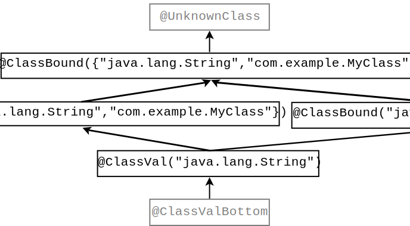
Figure 19.1: Partial type hierarchy for the ClassVal type system. The type qualifiers in gray (@UnknownClass and @ClassValBottom) should never be written in source code; they are used internally by the type system.
Figure 19.1 shows part of the type hierarchy of the ClassVal type system. @ClassVal(A) is a subtype of @ClassVal(B) if A is a subset of B. @ClassBound(A) is a subtype of @ClassBound(B) if A is a subset of B. @ClassVal(A) is a subtype of @ClassBound(B) if A is a subset of B.
The MethodVal Checker defines the following annotations:
Consider the following example:
@MethodVal(className={"java.util.HashMap", "java.util.HashMap"},
methodName={"containsKey", "containsValue"},
params={1, 1})
This @MethodVal annotation indicates that the Method is either HashMap.containsKey with 1 formal parameter or HashMap.containsValue with 1 formal parameter.
The @MethodVal type qualifier indicates the number of parameters that the method takes, but not their type. This means that the Checker Framework’s reflection resolution cannot distinguish among overloaded methods.
Figure 19.2: Partial type hierarchy for the MethodVal type system. The type qualifiers in gray (@UnknownMethod and @MethodValBottom) should never be written in source code; they are used internally by the type system.
Figure 19.2 shows part of the type hierarchy of the MethodVal type system. @MethodVal(classname=CA, methodname=MA, params=PA) is a subtype of @MethodVal(classname=CB, methodname=MB, params=PB) if
| ∀ indexes i ∃ an index j: CA[i] = CB[j], MA[i] = MA[j], and PA[i] = PB[j] |
where CA, MA, and PA are lists of equal size and CB, MB, and PB are lists of equal size.
The developer rarely has to write @ClassVal or @MethodVal annotations, because the Checker Framework infers them according to Figure 19.3. Most readers can skip this section, which explains the inference rules.
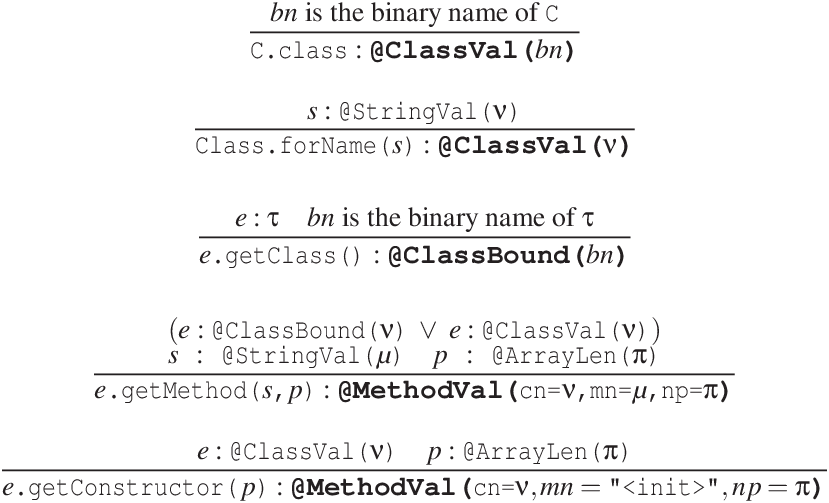
The ClassVal Checker infers the exact class name (@ClassVal) for a Class literal (C.class), and for a static method call (e.g., Class.forName(arg), ClassLoader.loadClass(arg), ...) if the argument is a statically computable expression. In contrast, it infers an upper bound (@ClassBound) for instance method calls (e.g., obj.getClass()).
The MethodVal Checker infers @MethodVal annotations for Method and Constructor types that have been created using a method call to Java’s Reflection API:
Note that an exact class name is necessary to precisely resolve reflectively-invoked constructors since a constructor in a subclass does not override a constructor in its superclass. This means that the MethodVal Checker does not infer a @MethodVal annotation for Class.getConstructor if the type of that class is @ClassBound. In contrast, either an exact class name or a bound is adequate to resolve reflectively-invoked methods because of the subtyping rules for overridden methods.
Consider the following example, in which the Nullness Checker employs reflection resolution to avoid issuing a false positive warning.
public class LocationInfo {
@NonNull Location getCurrentLocation() { ... }
}
public class Example {
LocationInfo privateLocation = ... ;
String getCurrentCity() throws Exception {
Method getCurrentLocationObj = LocationInfo.class.getMethod("getCurrentLocation");
Location currentLocation = (Location) getCurrentLocationObj.invoke(privateLocation);
return currentLocation.nameOfCity();
}
}
When reflection resolution is not enabled, the Nullness Checker uses conservative annotations on the Method.invoke method signature:
@Nullable Object invoke(@NonNull Object recv, @NonNull Object ... args)
This causes the Nullness Checker to issue the following warning even though currentLocation cannot be null.
error: [dereference.of.nullable] dereference of possibly-null reference currentLocation
return currentLocation.nameOfCity();
^
1 error
When reflection resolution is enabled, the MethodVal Checker infers that the @MethodVal annotation for getCurrentLocationObj is:
Based on this @MethodVal annotation, the reflection resolver determines that the reflective method call represents a call to getCurrentLocation in class LocationInfo. The reflection resolver uses this information to provide the following precise procedure summary to the Nullness Checker, for this call site only:
@NonNull Object invoke(@NonNull Object recv, @Nullable Object ... args)
Using this more precise signature, the Nullness Checker does not issue the false positive warning shown above.
The Subtyping Checker enforces only subtyping rules. It operates over annotations specified by a user on the command line. Thus, users can create a simple type-checker without writing any code beyond definitions of the type qualifier annotations.
The Subtyping Checker can accommodate all of the type system enhancements that can be declaratively specified (see Chapter 28). This includes type introduction rules (implicit annotations, e.g., literals are implicitly considered @NonNull) via the @ImplicitFor meta-annotation, and other features such as flow-sensitive type qualifier inference (Section 23.4) and qualifier polymorphism (Section 22.2).
The Subtyping Checker is also useful to type system designers who wish to experiment with a checker before writing code; the Subtyping Checker demonstrates the functionality that a checker inherits from the Checker Framework.
If you need typestate analysis, then you can extend a typestate checker, much as you would extend the Subtyping Checker if you do not need typestate analysis. For more details (including a definition of “typestate”), see Chapter 21.1. See Section 30.6.2 for a simpler alternative.
For type systems that require special checks (e.g., warning about dereferences of possibly-null values), you will need to write code and extend the framework as discussed in Chapter 28.
The Subtyping Checker is used in the same way as other checkers (using the -processor org.checkerframework.common.subtyping.SubtypingChecker option; see Chapter 2), except that it requires an additional annotation processor argument via the standard “-A” switch. One of the two following arguments must be used with the Subtyping Checker:
javac -Xbootclasspath/p:/full/path/to/myProject/bin:/full/path/to/myLibrary/bin \ -processor org.checkerframework.common.subtyping.SubtypingChecker \ -Aquals=myModule.qual.MyQual,myModule.qual.OtherQual MyFile.java ...
The annotations listed in -Aquals must be accessible to the compiler during compilation in the classpath. In other words, they must already be compiled (and, typically, be on the javac bootclasspath) before you run the Subtyping Checker with javac. It is not sufficient to supply their source files on the command line.
javac -Xbootclasspath/p:/full/path/to/myProject/bin:/full/path/to/myLibrary/bin \ -processor org.checkerframework.common.subtyping.SubtypingChecker \ -AqualDirs=/full/path/to/myProject/bin:/full/path/to/myLibrary/bin MyFile.java
Note that in these two examples, the compiled class file of the myModule.qual.MyQual and myModule.qual.OtherQual annotations must exist in either the myProject/bin directory or the myLibrary/bin directory. The following placement of the class files will work with the above commands:
.../myProject/bin/myModule/qual/MyQual.class .../myLibrary/bin/myModule/qual/OtherQual.class
The two options can be used at the same time to provide groups of annotations from directories, and individually named annotations.
To suppress a warning issued by the Subtyping Checker, use a @SuppressWarnings annotation, with the argument being the unqualified, uncapitalized name of any of the annotations passed to -Aquals. This will suppress all warnings, regardless of which of the annotations is involved in the warning. (As a matter of style, you should choose one of the annotations as your @SuppressWarnings key and stick with it for that entire type hierarchy.)
Consider a hypothetical Encrypted type qualifier, which denotes that the representation of an object (such as a String, CharSequence, or byte[]) is encrypted. To use the Subtyping Checker for the Encrypted type system, follow three steps.
package myModule.qual;
import org.checkerframework.framework.qual.*;
import java.lang.annotation.ElementType;
import java.lang.annotation.Target;
/**
* Denotes that the representation of an object is encrypted.
*/
@SubtypeOf(PossiblyUnencrypted.class)
@ImplicitFor(literal= LiteralKind.NULL )
@DefaultFor(TypeUseLocation.LOWER_BOUND)
@Target(ElementType.TYPE_USE, ElementType.TYPE_PARAMETER)
public @interface Encrypted
package myModule.qual;
import org.checkerframework.framework.qual.DefaultQualifierInHierarchy;
import org.checkerframework.framework.qual.SubtypeOf;
import java.lang.annotation.ElementType;
import java.lang.annotation.Target;
/**
* Denotes that the representation of an object might not be encrypted.
*/
@DefaultQualifierInHierarchy
@SubtypeOf()
@Target(ElementType.TYPE_USE, ElementType.TYPE_PARAMETER)
public @interface PossiblyUnencrypted
Note that all custom annotations must have the @Target(ElementType.TYPE_USE) meta-annotation. See section 28.3.1.
Don’t forget to compile these classes:
$ javac myModule/qual/Encrypted.java myModule/qual/PossiblyUnencrypted.java
The resulting .class files should either be on your classpath, or on the processor path (set via the -processorpath command-line option to javac).
import myModule.qual.Encrypted;
...
public @Encrypted String encrypt(String text)
// ...
// Only send encrypted data!
public void sendOverInternet(@Encrypted String msg)
// ...
void sendText()
// ...
@Encrypted String ciphertext = encrypt(plaintext);
sendOverInternet(ciphertext);
// ...
void sendPassword()
String password = getUserPassword();
sendOverInternet(password);
You may also need to add @SuppressWarnings annotations to the encrypt and decrypt methods. Analyzing them is beyond the capability of any realistic type system.
javac -processorpath myqualpath -processor org.checkerframework.common.subtyping.SubtypingChecker -Aquals=myModule.qual.Encrypted,myModule.qual.PossiblyUnencrypted YourProgram.java YourProgram.java:42: incompatible types. found : @myModule.qual.PossiblyUnencrypted java.lang.String required: @myModule.qual.Encrypted java.lang.String sendOverInternet(password); ^
javac -Xbootclasspath/p:/full/path/to/myProject/bin:/full/path/to/myLibrary/bin \ -processor org.checkerframework.common.subtyping.SubtypingChecker \ -AqualDirs=/full/path/to/myProject/bin:/full/path/to/myLibrary/bin YourProgram.java
Note that in these two examples, the compiled class file of the myModule.qual.Encrypted and myModule.qual.PossiblyUnencrypted annotations must exist in either the myProject/bin directory or the myLibrary/bin directory. The following placement of the class files will work with the above commands:
.../myProject/bin/myModule/qual/Encrypted.class .../myProject/bin/myModule/qual/PossiblyUnencrypted.class
Also, see the example project in the checker/examples/subtyping-extension directory.
The Checker Framework has been used to build other checkers that are not distributed together with the framework. This chapter mentions just a few of them. They are listed in chonological order; older ones appear first and newer ones appear last.
They are externally-maintained, so if you have problems or questions, you should contact their maintainers rather than the Checker Framework maintainers.
If you want a reference to your checker included in this chapter, send us a link and a short description.
In a regular type system, a variable has the same type throughout its scope. In a typestate system, a variable’s type can change as operations are performed on it.
The most common example of typestate is for a File object. Assume a file can be in two states, @Open and @Closed. Calling the close() method changes the file’s state. Any subsequent attempt to read, write, or close the file will lead to a run-time error. It would be better for the type system to warn about such problems, or guarantee their absence, at compile time.
Just as you can extend the Subtyping Checker to create a type-checker, you can extend a typestate checker to create a type-checker that supports typestate analysis. An extensible typestate analysis by Adam Warski that builds on the Checker Framework is available at http://www.warski.org/typestate.html.
The Checker Framework’s flow-sensitive type refinement (Section 23.4) implements a form of typestate analysis. For example, after code that tests a variable against null, the Nullness Checker (Chapter 3) treats the variable’s type as @NonNull T, for some T.
For many type systems, flow-sensitive type refinement is sufficient. But sometimes, you need full typestate analysis. This section compares the two. (Unused variables (Section 23.6) also have similarities with typestate analysis and can occasionally substitute for it. For brevity, this discussion omits them.)
A typestate analysis is easier for a user to create or extend. Flow-sensitive type refinement is built into the Checker Framework and is optionally extended by each checker. Modifying the rules requires writing Java code in your checker. By contrast, it is possible to write a simple typestate checker declaratively, by writing annotations on the methods (such as close()) that change a reference’s typestate.
A typestate analysis can change a reference’s type to something that is not consistent with its original definition. For example, suppose that a programmer decides that the @Open and @Closed qualifiers are incomparable — neither is a subtype of the other. A typestate analysis can specify that the close() operation converts an @Open File into a @Closed File. By contrast, flow-sensitive type refinement can only give a new type that is a subtype of the declared type — for flow-sensitive type refinement to be effective, @Closed would need to be a child of @Open in the qualifier hierarchy (and close() would need to be treated specially by the checker).
A checker for units and dimensions is available at http://www.lexspoon.org/expannots/.
Unlike the Units Checker that is distributed with the Checker Framework (see Section 15), this checker includes dynamic checks and permits annotation arguments that are Java expressions. This added flexibility, however, requires that you use a special version both of the Checker Framework and of the javac compiler.
Loci [WPM+09], a checker for thread locality, is available at http://www.it.uu.se/research/upmarc/loci/. Developer resources are available at the project page http://java.net/projects/loci/.
A checker for Safety-Critical Java (SCJ, JSR 302) [TPV10] is available at http://sss.cs.purdue.edu/projects/oscj/checker/checker.html. Developer resources are available at the project page https://code.google.com/archive/p/scj-jsr302/.
A checker for Generic Universe Types [DEM11], a lightweight ownership type system, is available from https://ece.uwaterloo.ca/~wdietl/ownership/.
A checker for EnerJ [SDF+11], an extension to Java that exposes hardware faults in a safe, principled manner to save energy with only slight sacrifices to the quality of service, is available from http://sampa.cs.washington.edu/research/approximation/enerj.html.
CheckLT uses taint tracking to detect illegal information flows, such as unsanitized data that could result in a SQL injection attack. CheckLT is available from http://checklt.github.io/.
SPARTA is a security toolset aimed at preventing malware from appearing in an app store. SPARTA provides an information-flow type-checker that is customized to Android but can also be applied to other domains. The SPARTA toolset is available from http://types.cs.washington.edu/sparta/. The paper “Collaborative verification of information flow for a high-assurance app store” appeared in CCS 2014.
Javari [TE05], IGJ [ZPA+07], and OIGJ [ZPL+10] are type systems that enforce immutability constraints. They were distributed with the Checker Framework through release 1.9.13, then removed because the implementations were not being maintained. If you wish to use them, install Checker Framework version 1.9.13.
This chapter describes support for Java generics (also known as “parametric polymorphism”) and polymorphism over type qualifiers.
The Checker Framework currently supports two schemes for polymorphism over type qualifiers.
Section 22.2 describes the original scheme, which uses method-based annotations that are meta-annotated with @PolymorphicQualifier.
Section 22.3 describes the qualifier parameters scheme, in which qualifier parameters are specified for classes and methods similarly to Java generics. The qualifier parameter scheme is more powerful than the original approach, but it incurs a 50% performance penalty. Currently, only the Tainting Checker (Chapter 8) and the Regex Checker (Chapter 9) support qualifier parameters.
The Checker Framework fully supports type-qualified Java generic types and methods (also known in the research literature as “parametric polymorphism”). When instantiating a generic type, clients supply the qualifier along with the type argument, as in List<@NonNull String>.
Before running any pluggable type-checker, we recommend that you eliminate raw types from your code (e.g., your code should use List<...> as opposed to List). Your code should compile without warnings when using the standard Java compiler and the -Xlint:unchecked -Xlint:rawtypes command-line options. Using generics helps prevent type errors just as using a pluggable type-checker does, and makes the Checker Framework’s warnings easier to understand.
If your code uses raw types, then the Checker Framework will do its best to infer the Java type parameters and the type qualifiers. If it infers imprecise types that lead to type-checking warnings elsewhere, then you have two options. You can convert the raw types such as List to parameterized types such as List<String>, or you can supply the -AignoreRawTypeArguments command-line option. That option causes the Checker Framework to ignore all subtype tests for type arguments that were inferred for a raw type.
When you define a generic class in Java, the extends clause
of the generic type parameter (known as the “upper bound”) requires that
the corresponding type argument must be a subtype of the bound.
For example, given the definition
class G<T extends Number> {...},
the upper bound is Number
and a client can instantiate it as G<Number> or G<Integer>
but not G<Date>.
You can write a type qualifier on the extends clause to make the upper bound a qualified type. For example, you can declare that a generic list class can hold only non-null values:
class MyList<T extends @NonNull Object> {...}
MyList<@NonNull String> m1; // OK
MyList<@Nullable String> m2; // error
That is, in the above example, all arguments that replace T in MyList<T> must be subtypes of @NonNull Object.
Conceptually, each generic type parameter has two bounds — a lower bound and an upper bound — and at instantiation, the type argument must be within the bounds. Java only allows you to specify the upper bound; the lower bound is implicitly the bottom type void. The Checker Framework gives you more power: you can specify both an upper and lower bound for type parameters and wildcards. For the upper bound, write a type qualifier on the extends clause, and for the lower bound, write a type qualifier on the type variable.
class MyList<@LowerBound T extends @UpperBound Object> { ... }
For a concrete example, recall the type system of the Regex Checker (see Figure 9) in which @Regex(0) :> @Regex(1) :> @Regex(2) :> @Regex(3) :> ….
class MyRegexes<@Regex(5) T extends @Regex(1) String> { ... }
MyRegexes<@Regex(0) String> mu; // error - @Regex(0) is not a subtype of @Regex(1)
MyRegexes<@Regex(1) String> m1; // OK
MyRegexes<@Regex(3) String> m3; // OK
MyRegexes<@Regex(5) String> m5; // OK
MyRegexes<@Regex(6) String> m6; // error - @Regex(6) is not a supertype of @Regex(5)
The above declaration states that the upper bound of the type variable is @Regex(1) String and the lower bound is @Regex(5) void. That is, arguments that replace T in MyList<T> must be subtypes of @Regex(1) String and supertypes of @Regex(5) void. Since void cannot be used to instantiate a generic class, MyList may be instantiated with @Regex(1) String through @Regex(5) String.
To specify an exact bound, place the same annotation on both bounds. For example:
class MyListOfNonNulls<@NonNull T extends @NonNull Object> { ... }
class MyListOfNullables<@Nullable T extends @Nullable Object> { ... }
MyListOfNonNulls<@NonNull Number> v1; // OK
MyListOfNonNulls<@Nullable Number> v2; // error
MyListOfNullables<@NonNull Number> v4; // error
MyListOfNullables<@Nullable Number> v3; // OK
It is an error if the lower bound is not a subtype of the upper bound.
class MyClass<@Nullable T extends @NonNull Object> // error: @Nullable is not a supertype of @NonNull
If the extends clause is omitted, then the upper bound defaults to @TopType Object. If no type annotation is written on the type parameter name, then the lower bound defaults to @BottomType void. If the extends clause is written but contains no type qualifier, then the normal defaulting rules apply to the type in the extends clause (see Section 23.3.2).
These rules mean that even though in Java the following two declarations are equivalent:
class MyClass<T> class MyClass<T extends Object>
they may specify different type qualifiers on the upper bound, depending on the type system’s defaulting rules.
A type annotation on a use of a generic type variable overrides/ignores any type qualifier (in the same type hierarchy) on the corresponding actual type argument. For example, suppose that T is a formal type parameter. Then using @Nullable T within the scope of T applies the type qualifier @Nullable to the (unqualified) Java type of T. This feature is only rarely used.
Here is an example of applying a type annotation to a generic type variable:
class MyClass2<T> {
...
@Nullable T myField = null;
...
}
The type annotation does not restrict how MyClass2 may be instantiated. In other words, both MyClass2<@NonNull String> and MyClass2<@Nullable String> are legal, and in both cases @Nullable T means @Nullable String. In MyClass2<@Interned String>, @Nullable T means @Nullable @Interned String.
At an instantiation of a generic type, a Java wildcard indicates that some constraints are known on the type argument, but the type argument is not known exactly. For example, you can indicate that the type parameter for variable ls is some unknown subtype of CharSequence:
List<? extends CharSequence> ls; ls = new ArrayList<String>(); // OK ls = new ArrayList<Integer>(); // error: Integer is not a subtype of CharSequence
For more details about wildcards, see the Java tutorial on wildcards or JLS §4.5.1.
You can write a type annotation on the bound of a wildcard:
List<? extends @NonNull CharSequence> ls; ls = new ArrayList<@NonNull String>(); // OK ls = new ArrayList<@Nullable String>(); // error: @Nullable is not a subtype of @NonNull
Conceptually, every wildcard has two bounds — an upper bound and a lower bound. Java only permits you to write the upper bound (with <? extends SomeType>) or the lower bound (with <? super OtherType>), but not both; the unspecified bound is implicitly the top type Object or the bottom type void. The Checker Framework is more flexible: it lets you simultaneously write annotations on both the top and the bottom type. To annotate the implicit bound, write the type annotation before the ?. For example:
List<@LowerBound ? extends @UpperBound CharSequence> lo; List<@UpperBound ? super @NonNull Number> ls;
For an unbounded wildcard (<?>, with neither bound specified), the annotation in front of a wildcard applies to both bounds. The following three declarations are equivalent (except that you cannot write the bottom type void; note that Void does not denote the bottom type):
List<@NonNull ?> lnn; List<@NonNull ? extends @NonNull Object> lnn; List<@NonNull ? super @NonNull void> lnn;
Note that the annotation in front of a type parameter always applies to its lower bound, because type parameters can only be written with extends and never super.
The defaulting rules for wildcards also differ from those of type parameters (see Section 23.3.4).
Recall that @Nullable X is a supertype of @NonNull X, for any X. Most of of the following types mean different things:
class MyList1<@Nullable T> { ... }
class MyList1a<@Nullable T extends @Nullable Object> { ... } // same as MyList1
class MyList2<@NonNull T extends @NonNull Object> { ... }
class MyList2a<T extends @NonNull Object> { ... } // same as MyList2
class MyList3<T extends @Nullable Object> { ... }
MyList1 and MyList1a must be instantiated with a nullable type. The implementation of MyList1 must be able to consume (store) a null value and produce (retrieve) a null value.
MyList2 and MyList2a must be instantiated with non-null type. The implementation of MyList2 has to account for only non-null values — it does not have to account for consuming or producing null.
MyList3 may be instantiated either way: with a nullable type or a non-null type. The implementation of MyList3 must consider that it may be instantiated either way — flexible enough to support either instantiation, yet rigorous enough to impose the correct constraints of the specific instantiation. It must also itself comply with the constraints of the potential instantiations.
One way to express the difference among MyList1, MyList2, and MyList3 is by comparing what expressions are legal in the implementation of the list — that is, what expressions may appear in the ellipsis in the declarations above, such as inside a method’s body. Suppose each class has, in the ellipsis, these declarations:
T t;
@Nullable T nble; // Section "Type annotations on a use of a generic type variable", below,
@NonNull T nn; // further explains the meaning of "@Nullable T" and "@NonNull T".
void add(T arg) { }
T get(int i) { }
Then the following expressions would be legal, inside a given implementation — that is, also within the ellipses. (Compilable source code appears as file checker-framework/checker/tests/nullness/generics/GenericsExample.java.)
| MyList1 | MyList2 | MyList3 | |
| t = null; | OK | error | error |
| t = nble; | OK | error | error |
| nble = null; | OK | OK | OK |
| nn = null; | error | error | error |
| t = this.get(0); | OK | OK | OK |
| nble = this.get(0); | OK | OK | OK |
| nn = this.get(0); | error | OK | error |
| this.add(t); | OK | OK | OK |
| this.add(nble); | OK | error | error |
| this.add(nn); | OK | OK | OK |
The differences are more significant when the qualifier hierarchy is more complicated than just @Nullable and @NonNull.
Java types are invariant in their type parameter. This means that A<X> is a subtype of B<Y> only if X is identical to Y. For example, ArrayList<Number> is a subtype of List<Number>, but neither ArrayList<Integer> nor List<Integer> is a subtype of List<Number>. (If they were, there would be a type hole in the Java type system.) For the same reason, type parameter annotations are treated invariantly. For example, List<@Nullable String> is not a subtype of List<String>.
When a type parameter is used in a read-only way — that is, when values of that type are read but are never assigned — then it is safe for the type to be covariant in the type parameter. Use the @Covariant annotation to indicate this. When a type parameter is covariant, two instantiations of the class with different type arguments have the same subtyping relationship as the type arguments do.
For example, consider Iterator. Its elements can be read but not written, so Iterator<@Nullable String> can be a subtype of Iterator<String> without introducing a hole in the type system. Therefore, its type parameter is annotated with @Covariant. The first type parameter of Map.Entry is also covariant. Another example would be the type parameter of a hypothetical class ImmutableList.
The @Covariant annotation is trusted but not checked. If you incorrectly specify as covariant a type parameter that that can be written (say, the class performs a set operation or some other mutation on an object of that type), then you have created an unsoundness in the type system. For example, it would be incorrect to annotate the type parameter of ListIterator as covariant, because ListIterator supports a set operation.
Sometimes method type argument inference does not interact well with type qualifiers. In such situations, you might need to provide explicit method type arguments, for which the syntax is as follows:
Collections.</*@MyTypeAnnotation*/ Object>sort(l, c);
This uses Java’s existing syntax for specifying a method call’s type arguments.
This section describes the original Checker Framework scheme for qualifier polymorphism. Section 22.3 describes an alternative scheme that uses qualifier parameters. Most type systems still use the original scheme described in this section.
The Checker Framework supports type qualifier polymorphism for methods, which permits a single method to have multiple different qualified type signatures. This is similar to Java’s generics, but is used in situations where you cannot use Java generics. If you can use generics, you typically do not need to use a polymorphic qualifier such as @PolyNull.
To use a polymorphic qualifier, just write it on a type. For example, you can write @PolyNull anywhere in a method that you would write @NonNull or @Nullable. A polymorphic qualifier can be used in a method signature or body. It may not be used on a class or field.
A method written using a polymorphic qualifier conceptually has multiple versions, somewhat like the generics feature of Java or a template in C++. In each version, each instance of the polymorphic qualifier has been replaced by the same other qualifier from the hierarchy. See the examples below in Section 22.2.1.
The method body must type-check with all signatures. A method call is type-correct if it type-checks under any one of the signatures. If a call matches multiple signatures, then the compiler uses the most specific matching signature for the purpose of type-checking. This is the same as Java’s rule for resolving overloaded methods.
To define a polymorphic qualifier, mark the definition with @PolymorphicQualifier. For example, @PolyNull is a polymorphic type qualifier for the Nullness type system:
@PolymorphicQualifier
@Target({ElementType.TYPE_USE, ElementType.TYPE_PARAMETER})
public @interface PolyNull { }
See Section 22.2.3 for a way you can sometimes avoid defining a new polymorphic qualifier.
As an example of the use of @PolyNull, method Class.cast returns null if and only if its argument is null:
@PolyNull T cast(@PolyNull Object obj) { ... }
This is like writing:
@NonNull T cast( @NonNull Object obj) { ... }
@Nullable T cast(@Nullable Object obj) { ... }
except that the latter is not legal Java, since it defines two methods with the same Java signature.
As another example, consider
// Returns null if either argument is null. @PolyNull T max(@PolyNull T x, @PolyNull T y);
which is like writing
@NonNull T max( @NonNull T x, @NonNull T y); @Nullable T max(@Nullable T x, @Nullable T y);
At a call site, the most specific applicable signature is selected.
Another way of thinking about which one of the two max variants is selected is that the nullness annotations of (the declared types of) both arguments are unified to a type that is a supertype of both, also known as the least upper bound or lub. If both arguments are @NonNull, their unification (lub) is @NonNull, and the method return type is @NonNull. But if even one of the arguments is @Nullable, then the unification (lub) is @Nullable, and so is the return type.
Qualifier polymorphism has the same purpose and plays the same role as Java’s generics. If a method is written using generics, it usually does not need qualifier polymorphism. If you have legacy code that is not written generically, and you cannot change it to use generics, then you can use qualifier polymorphism to achieve a similar effect, with respect to type qualifiers only. The base Java types are still treated non-generically.
Why not use ordinary subtyping to handle qualifier polymorphism? Ordinarily, when you want a method to work on multiple types, you can just use Java’s subtyping. For example, the equals method is declared to take an Object as its first formal parameter, but it can be called on a String or a Date because those are subtypes of Object.
In most cases, the same subtyping mechanism works with type qualifiers. String is a supertype of @Interned String, so a method toUpperCase that is declared to take a String parameter can also be called on a @Interned String argument.
You use qualifier polymorphism in the same cases when you would use Java’s generics. (If you can use Java’s generics, then that is often better and you don’t also need to use qualifier polymorphism.) One example is when you want a method to operate on collections with different types of elements. Another example is when you want two different formal parameters to be of the same type, without constraining them to be one specific type.
Each type system has its own polymorphic type qualifier. If some method is qualifier-polymorphic over every type qualifier hierarchy, then it is tedious, and leads to an explosion in the number of type annotations, to place every @Poly* qualifier on that method.
For example, a method that only performs == on array elements will work no matter what the array’s element types are:
/**
* Searches for the first occurrence of the given element in the array,
* testing for equality using == (not the equals method).
*/
public static int indexOfEq(@PolyAll Object[] a, @Nullable Object elt) {
for (int i=0; i<a.length; i++) {
if (elt == a[i]) {
return i;
}
}
return -1;
}
Each polymorphic qualifier such as @PolyAll takes an optional argument so that you can specify multiple, independent polymorphic type qualifiers. For example, this signature is overly restrictive:
/**
* Returns true if the arrays are elementwise equal,
* testing for equality using == (not the equals method).
*/
public static int eltwiseEqualUsingEq(@PolyAll Object[] a, @PolyAll Object elt) {
for (int i=0; i<a.length; i++) {
if (elt != a[i]) {
return false;
}
}
return true;
}
That signature requires the element type annotation to be identical for the two arguments. For example, it forbids this invocation:
@Nullable Object[] x; @NonNull Object y; ... indexOf(x, y) ...
A better signature lets the two arrays’ element types vary independently:
public static int eltwiseEqualUsingEq(@PolyAll(1) Object[] a, @PolyAll(2) Object elt)
Note that in this case, the @Nullable annotation on elt’s type is no longer necessary, since it is subsumed by @PolyAll.
The @PolyAll annotation at a location l applies to every type qualifier hierarchy for which no explicit qualifier is written at location l. For example, a declaration like @PolyAll @NonNull Object elt is polymorphic over every type system except the nullness type system, for which the type is fixed at @NonNull. That would be the proper declaration for elt if the body had used elt.equals(a[i]) instead of elt == a[i].
If a method signature contains only indexless versions of a polymorphic qualifier such as @PolyAll or @PolyNull, then all of them refer to the same type as described in Section 22.2.5. If any indexed version appears, then every occurrence of the polymorphic qualifier without an index is considered to use a fresh index. For example, the following two declarations are equivalent (where @PA means @PolyAll, for brevity):
@PA(1) foo(@PA(1) Object a, @PA(2) Object b, @PA(2) Object c, @PA Object d, @PA Object e) {...}
@PA(1) foo(@PA(1) Object a, @PA(2) Object b, @PA(2) Object c, @PA(3) Object d, @PA(4) Object e) {...}
As described in Section 22.2.5, the qualifier on a return type must be the same as that on some formal parameter. Therefore, the first of these declarations is legal because it is equivalent to the second, but the third is illegal because it it equivalent to the fourth.
@PolyAll m1(@PolyAll Object a, @PolyAll Object b) { ... } // OK
@PolyAll(1) m2(@PolyAll(1) Object a, @PolyAll(1) Object b) { ... } // OK (same as m1)
@PolyAll m3(@PolyAll Object a, @PolyAll(1) Object b) { ... } // illegal
@PolyAll(2) m4(@PolyAll(3) Object a, @PolyAll(1) Object b) { ... } // illegal (same as m3)
Usually, it does not make sense to write only a single instance of a polymorphic qualifier in a method definition: if you write one instance of (say) @PolyNull, then you should use at least two. (Section 22.2.6 describes some exceptions to this rule: times when it makes sense to write a single polymorphic qualifier in a signature.)
For example, there is no point to writing
void m(@PolyNull Object obj)
which expands to
void m(@NonNull Object obj) void m(@Nullable Object obj)
This is no different (in terms of which calls to the method will type-check) than writing just
void m(@Nullable Object obj)
The main benefit of polymorphic qualifiers comes when one is used multiple times in a method, since then each instance turns into the same type qualifier. Most frequently, the polymorphic qualifier appears on at least one formal parameter and also on the return type. It can also be useful to have polymorphic qualifiers on (only) multiple formal parameters, especially if the method side-effects one of its arguments. For example, consider
void moveBetweenStacks(Stack<@PolyNull Object> s1, Stack<@PolyNull Object> s2) {
s1.push(s2.pop());
}
In this example, if it is acceptable to rewrite your code to use Java generics, the code can be even cleaner:
<T> void moveBetweenStacks(Stack<T> s1, Stack<T> s2) {
s1.push(s2.pop());
}
It is permitted to write a polymorphic qualifier on a return type only if that polymorphic qualifier appeared elsewhere in the signature, on some formal parameter.
As explained in Section 22.2.5, you will usually use a polymorphic qualifier multiple times in a signature. This section describes situations when it makes sense to write just one polymorphic qualifier in a method signature. Some of these situations can be avoided by writing a generic method, but in legacy code it may not be possible for you to change a method to be generic.
It can make sense to use a polymorphic qualifier just once, on an array or generic element type.
For example, consider a routine that returns the index, in an array, of a given element:
public static int indexOf(@PolyNull Object[] a, @Nullable Object elt) { ... }
If @PolyNull were replaced with either @Nullable or @NonNull, then one of these safe client calls would be rejected:
@Nullable Object[] a1; @NonNull Object[] a2; indexOf(a1, someObject); indexOf(a2, someObject);
Of course, it would be better style to use a generic method, as in either of these signatures:
public static <T extends @Nullable Object> int indexOf(T[] a, @Nullable Object elt) { ... }
public static <T extends @Nullable Object> int indexOf(T[] a, T elt) { ... }
The examples in this section use arrays, but analogous examples exist that use collections.
A single @PolyAll annotation can indicate that any possible value is permitted to be passed. For example:
boolean eq(@PolyAll Object other) {
return this == other;
}
The @PolyAll annotation applies to all type systems. It would be infeasible to write the top qualifier for every possible type system and to update this method’s annotation whenever a new type system is defined.
By contrast, a declaration of eq without @PolyAll:
boolean eq(Object other) {
return this == other;
}
would reject some calls, in type systems where the default type qualifier applied to Object is not the top type.
A related use of a single polymorphic qualifier is to override a generic type. For example, the annotation on Comparable.compareTo() is:
public interface Comparable<T extends @NonNull Object> {
@Pure int compareTo(@PolyAll @NonNull T a1);
}
which indicates that, for every type system other than the nullness type system, every value is permitted as an argument, regardless of how the Comparable type was instantiated. For example, this call is legal:
Comparable<@MyBottom String> cble; @MyTop String s; ... cble.compareTo(s);
This section describes qualifier parameters which is the new, more-powerful qualifier polymorphism scheme. As of the current release, only the Tainting Checker (Chapter 8) and the Regex Checker (Chapter 9) support qualifier parameters. Other checkers with qualifier polymorphism support use the original qualifier polymorphism scheme (Section 22.2).
Qualifier parameters provide a way for you to re-use the same code with different type qualifiers in a type-safe manner.
Qualifier parameters are very similar to Java generics, so if you understand the benefits of generics and how to use them, you will find qualifier parameters natural. Both mechanisms are used on classes and methods where different instances of the class have different types. Without generics or qualifier parameters, the types of the members would have to be overly general, which would cause information loss, compiler warnings, the need for casts, and potentially run-time errors. Generics parameterize a class or method with a type, so that a client can specialize the definition with a type as in List<Integer> or List<String>. By contrast, qualifier parameters enable a client to specialize the definition with just a qualifier as in MyClass⟪@Regex⟫ or MyClass⟪@NonNull⟫.
As an example of a problem that qualifier parameters solve, consider the Holder class below. In some uses of Holder, the item field holds a @Tainted String value, and in other uses of Holder, the item field holds an @Untainted String value. The only declaration of item that is consistent with all uses is @Tainted String, which is a supertype of @Untainted String. When an @Untainted String value is put in a Holder, a cast is required when the value is later retrieved.
class Holder {
@Tainted String item; // overly-general declaration, leads to casts
}
// taintedHolder can hold both @Tainted and @Untainted values
Holder taintedHolder = new Holder();
taintedHolder.item = getTaintedValue();
@Tainted String taintedString = taintedHolder.item; // OK; type-checks with the Tainting Checker.
// The programmer intends untaintedHolder to hold only @Untainted values
Holder untaintedHolder = new Holder();
untaintedHolder.item = getUntaintedValue();
@Untainted String untaintedString = untaintedHolder.item; // safe code, but Tainting Checker compile-time error.
// A cast makes the assignment type-check, but casts are unsound and error-prone.
String untaintedString = (@Untainted untaintedString) untaintedHolder.item;
taintedHolder.item = getTaintedValue(); // An error that we would like the type sysetm to catch
Qualifier parameters allow sound type-checking of this code without the use of casts.
These following examples add qualifier parameters to Holder from Section 22.3.1 to allow sound type-checking.
For clarity, this section displays qualifier parameters using an idealized syntax using double angle brackets, ⟪...⟫. Note that this is not the actual syntax you will use in source code, which is described in Section 22.3.4.
In the qualifier parameter system, a class can declared to have one or more qualifier parameters. For example, a qualifier parameter can be added to the Holder class:
class Holder ⟪Q⟫ {
}
This declares that Holder takes one qualifier parameter, named Q.
Q can be referenced inside the Holder class. In the following, item will have the same qualifier that Holder is instantiated with:
class Holder ⟪Q⟫ {
@Q String item;
}
References and instantiations of Holder specify a qualifier argument for its parameter Q.
Holder⟪Q=@Tainted⟫ taintedHolder;
Holder⟪Q=@Untainted⟫ untaintedHolder;
Qualifier parameters permit instantiating a class with the appropriate type qualifier rather than relying on an overly-general declaration. Therefore, the following code type-checks without casts:
Holder⟪Q=@Tainted⟫ taintedHolder = new Holder⟪Q=@Tainted⟫();
@Tainted String s = holder.item;
Holder⟪Q=@Untainted⟫ untaintedHolder = new Holder⟪Q=@Untainted⟫();
@Untainted String s = holder.item;
Like generics, two classes with different qualifier parameters have no subtyping relationship:
taintedHolder = untaintedHolder; // Error: not a subtype
untaintedHolder = taintedHolder; // Error: not a subtype
Holder⟪Q=@Tainted⟫ taintedHolder2;
taintedHolder = taintedHolder2; // OK: the qualifier argument is the same for both
As with Java generics, wildcard extends and super bounds may be used. Wildcards create a subtyping relationship between classes with qualifier parameters. See the Java tutorial at http://docs.oracle.com/javase/tutorial/java/generics/subtyping.html for more information on subtyping relationships with wildcards.
Holder⟪Q=@Tainted⟫ holder;
Holder⟪Q=? extends @Tainted⟫ holderExtends;
Holder⟪Q=? super @Tainted⟫ holderSuper;
holder = holderExtends; // Error: not a subtype
holderExtends = holder; // OK
holder = holderSuper; // Error: not a subtype
holderSuper = holder; // OK
For soundness, when a class is parameterized with a wildcard, members of a qualified class that use the parameter as their type have restrictions on their use, just as in Java. In particular, a member of a qualified class with an extends-bounded wildcard may only be set to null. A member of a qualified class with a super-bounded wildcard will always have the top type when accessed.
Holder⟪Q=? extends @Untainted⟫ holderExtends;
@Untainted String s1 = holderExtends.item; // OK
holderExtends.item = getTaintedString(); // Error: only null can be assigned to item
Holder⟪Q=? super @Untainted⟫ holderSuper;
@Untainted String s2 = holderSuper.item; // Error: item has the top type
holderSuper.item = getUntaintedString(); // OK
The examples in Sections 22.3.2–22.3.3 used double angle brackets, ⟪...⟫, for qualifier parameter declarations and qualifier arguments. In real source code, qualifier parameter declarations and uses, and qualifier arguments, are specified via Java annotations.
These annotations are summarized in Figure 22.1 and are more fully explained below.
Each type system that supports qualifier parameters has its own copy of these annotations. The functionality of the annotations is the same, but since a java file might be annotated with annotations for multiple type systems, i.e. have annotations for both the Regex and the Tainting checker, there must be a different copy of each annotation so that the Checker Framework can determine the checker that an annotation belongs to.
Generic Equivalent Idealized Syntax Actual Syntax Declare a class parameter class Holder<T> {} class Holder⟪Q⟫ {} @ClassTaintingParam("Q") class Holder {} Declare a method parameter <T> void do() {} ⟪V⟫ void do() {} @MethodTaintingParam("V") void do() {} Instantiate (supply an argument) Holder<String> Holder⟪Q=@Tainted⟫ @Tainted(param="Q") Holder Use a parameter <T> void do(T t) {} ⟪V⟫ void do(@V Object o) {} @MethodTaintingParam("V") void do(@Var(arg="V") Object o) {} Use a parameter as an argument <T> void do(List<T> t) {} ⟪V⟫ void do(Holder⟪Q=@V⟫ h) {} @MethodTaintingParam("V") void do(@Var(arg="V" param="Q") Holder o) {} Instantiate without constraints Holder<?> Holder⟪Q=?⟫ @Wild(param="Q") Holder Instantiate with upper bound Holder<? extends Object> Holder⟪Q=? extends @Tainted⟫ @Tainted(param="Q", wildcard=Wildcard.EXTENDS) Holder Instantiate with lower bound Holder<? super Object> Holder⟪Q=? super @Tainted⟫ @Tainted(param="Q", wildcard=Wildcard.SUPER) Holder
Figure 22.1: Comparison of the syntax of Java generics, the idealized syntax used in Sections 22.3.2–22.3.3, and the actual syntax used in Java source code.
// Equivalent to
class Holder ⟪Q⟫ {
}
// Declare a parameter "main"
@ClassTaintingParam("main")
class Holder {
}
// The parameter "main" can now be set
@Tainted(param="main") Holder h;
Qualifier arguments to a method are never specified explicitly; they are inferred by the Checker Framework based on the parameters passed to the method invocation. Unlike Java generics, there is no way to explicitly specify method qualifier parameters on an invocation.
class Util {
// Declare a method parameter.
@MethodTaintingParam("meth")
public static @Var("meth") String id(@Var("meth") String in) {
return in;
}
}
// Qualifier arguments are inferred.
@Untainted String untainted = Util.id(getUntaintedString());
// Equivalent to
class Holder ⟪Q⟫ {
@Q String item;
}
// Declare a parameter
@ClassTaintingParam ("main")
class Holder {
// item will have the qualifier that Holder is instantiated with
@Var(arg="main") String item;
}
@Tainted(param="main") Holder h1 = new @Tainted(param="main") Holder();
@Tainted String value1 = h1.item;
@Untainted(param="main") Holder h2 = new @Untainted(param="main") Holder();
@Untainted String value1 = h2.item;
The "param" field specifies that the value of the qualifier parameter specified by "arg" should be used as the parameter to another qualifier type. For example:
// Equivalent to
class Holder ⟪Q⟫ {
@Q String item;
Holder⟪Q=@Q⟫ nestedHolder;
}
@ClassTaintingParam ("main")
class Holder {
// item will have the qualifier that Holder is instantiated with
@Var(arg="main") String item;
// nestedHolder will be instantiated with the same qualifier as the
// enclosing "main" parameter
@Var(arg="main", param="main") Holder nestedHolder;
}
@Tainted(param="main") Holder h1 = new @Tainted(param="main") Holder();
@Tainted(param="main") Holder nestedHolder = h1;
@Tainted String value1 = h1.nestedHolder.item;
@Untainted(param="main") Holder h2 = new @Untainted(param="main") Holder();
@Untainted(param="main") Holder nestedHolder2 = h2;
@Untainted String value1 = h2.nestedHolder.item;
// The value should be considered tainted @Tainted String tainted = getTaintedString();
When the param param field is set, the annotation indicates that the value of the @Tainted qualifier should be used as the qualifier argument to the class that it annotates. For example:
// Equivalent to Holder⟪@Tainted⟫ holder // This declares a Holder object, whose Tainting qualifier parameter is set to @Tainted. // Holder must have been declared to have a Tainting qualifier parameter // by using the @ClassTaintingParam annotation. @Tainted(param="main") Holder holder;
The wildcard field can be set to a Wildcard value. This allows qualifier parameters to act like wildcards.
// Equivalent to Holder⟪? extends @Untainted⟫ // Instantiate Holder with a wildcard parameter. @Untainted(param="main", wildcard=Wildcard.EXTENDS) Holder extends; // OK because of the extends bound extendsHolder = new @Untainted(param="main") Holder(); // Error: the new Holder is not a subtype of extendsHolder extendsHolder = new @Untainted(param="main") Holder();
// Equivalent to Holder⟪?⟫ h1 = new Holder⟪@Untainted⟫(); @Wild(param="main") Holder h1 = new @Untainted(param="main") Holder; // Error: item is not guaranteed to be an @Untainted value. @Untainted String s1 = h1.item;
class Util {
static @PolyTainted String id(@PolyTainted String in) {
return in;
}
}
@Untainted String s = Util.id(getUntaintedString()); // OK
The field param can be used to specify that the inferred qualifier parameter should be used as an argument to another parameterized type. In this mode @PolyTainted is a shorthand for a combination of @MethodTaintingParam and @Var. For example:
class Util {
static @PolyTainted(param="main") Holder id(@PolyTainted(param="main") Holder in) {
return in;
}
}
// Equivalent to this code
@MethodTaintingParam("meth")
public static @Var(arg="meth", param="main") Holder id(@Var(arg="meth", param="main) Holder in) {
return in;
}
Type system specific annotations, like @Tainted or @Regex, have dual uses in the qualifier parameter system. When their "param" field is set, they are used as a argument to a qualifier parameter.
When their "param" field is not set, they apply directly to a type and not to any qualifier parameters of the type. We call the qualifier that applies directly to a type the primary qualifier. For example an @Tainted String is a String with a tainted value and its primary qualifier is @Tainted.
@Var can also be used to set primary qualifiers by omitting the "param" field on the annotation.
This chapter describes features that are automatically supported by every checker written with the Checker Framework. You may wish to skim or skip this chapter on first reading. After you have used a checker for a little while and want to be able to express more sophisticated and useful types, or to understand more about how the Checker Framework works, you can return to it.
Java’s type system is unsound with respect to arrays. That is, the Java type-checker approves code that is unsafe and will cause a run-time crash. Technically, the problem is that Java has “covariant array types”, such as treating String[] as a subtype of Object[]. Consider the following example:
String[] strings = new String[] {"hello"};
Object[] objects = strings;
objects[0] = new Object();
String myString = strs[0];
The above code puts an Object in the array strings and thence in myString, even though myString = new Object() should be, and is, rejected by the Java type system. Java prevents corruption of the JVM by doing a costly run-time check at every array assignment; nonetheless, it is undesirable to learn about a type error only via a run-time crash rather than at compile time.
When you pass the -AinvariantArrays command-line option, the Checker Framework is stricter than Java, in the sense that it treats arrays invariantly rather than covariantly. This means that a type system built upon the Checker Framework is sound: you get a compile-time guarantee without the need for any run-time checks. But it also means that the Checker Framework rejects code that is similar to what Java unsoundly accepts. The guarantee and the compile-time checks are about your extended type system. The Checker Framework does not reject the example code above, which contains no type annotations.
Java’s covariant array typing is sound if the array is used in a read-only fashion: that is, if the array’s elements are accessed but the array is not modified. However, facts about read-only usage are not built into any of the type-checkers. Therefore, when using type systems along with -AinvariantArrays, you will need to suppress any warnings that are false positives because the array is treated in a read-only way.
When you write an expression, the Checker Framework gives it the most precise possible type, depending on the particular expression or value. For example, when using the Regex Checker (Chapter 9), the string "hello" is given type @Regex String because it is a legal regular expression (whether it is meant to be used as one or not) and the string "(foo" is given the type @Unqualified String because it is not a legal regular expression.
Array constructors work differently. When you create an array with the array constructor syntax, such as the right-hand side of this assignment:
String[] myStrings = {"hello"};
then the expression does not get the most precise possible type, because doing so could cause inconvenience. Rather, its type is determined by the context in which it is used: the left-hand side if it is in an assignment, the declared formal parameter type if it is in a method call, etc.
In particular, if the expression {"hello"} were given the type
@Regex String[], then the assignment would be illegal! But the Checker
Framework gives the type String[] based on the assignment context, so the code
type-checks.
If you prefer a specific type for a constructed array, you can indicate
that either in the context (change the declaration of myStrings) or in a
new construct (change the expression to new @Regex String[] {"hello"}).
A checker sometimes treats a type as having a slightly different qualifier than what is written on the type — especially if the programmer wrote no qualifier at all. Most readers can skip this section on first reading, because you will probably find the system simply “does what you mean”, without forcing you to write too many qualifiers in your program. In particular, qualifiers in method bodies are extremely rare.
Most of this section is applicable only to source code that is being checked by a checker. When the compiler reads a .class file that was checked by a checker, the .class file contains the explicit or defaulted annotations from the source code and no defaulting is necessary. When the compiler reads a .class file that was not checked by a checker, the .class file contains only explicit annotations and defaulting might be necessary; see Section 23.3.5 for these rules.
The following steps determine the effective qualifier on a type — the qualifier that the checkers treat as being present.
Here are some examples of implicit qualifiers:
If the type has an implicit qualifier, then it is an error to write an explicit qualifier that is equal to (redundant with) or a supertype of (weaker than) the implicit qualifier. A programmer may strengthen (write a subtype of) an implicit qualifier, however.
Implicit qualifiers arise from two sources:
At this point (after step 3), every type has a qualifier.
A type system designer, or an end-user programmer, can cause unannotated references to be treated as if they had a default annotation.
There are several defaulting mechanisms, for convenience and flexibility. When determining the default qualifier for a use of a type, the following rules are used in order, until one applies.
The end-user programmer specifies a default qualifier by writing the @DefaultQualifier annotation on a package, class, method, or variable declaration. The argument to @DefaultQualifier is the String name of an annotation. It may be a short name like "NonNull", if an appropriate import statement exists. Otherwise, it should be fully-qualified, like "org.checkerframework.checker.nullness.qual.NonNull". The optional second argument indicates where the default applies. If the second argument is omitted, the specified annotation is the default in all locations. See the Javadoc of DefaultQualifier for details.
For example, using the Nullness type system (Chapter 3):
import org.checkerframework.framework.qual.*; // for DefaultQualifier[s]
import org.checkerframework.checker.nullness.qual.NonNull;
@DefaultQualifier(NonNull.class)
class MyClass {
public boolean compile(File myFile) { // myFile has type "@NonNull File"
if (!myFile.exists()) // no warning: myFile is non-null
return false;
@Nullable File srcPath = ...; // must annotate to specify "@Nullable File"
...
if (srcPath.exists()) // warning: srcPath might be null
...
}
@DefaultQualifier(Tainted.class)
public boolean isJavaFile(File myfile) { // myFile has type "@Tainted File"
...
}
}
If you wish to write multiple @DefaultQualifier annotations at a single location, use @DefaultQualifiers instead. For example:
@DefaultQualifiers({
@DefaultQualifier(NonNull.class),
@DefaultQualifier(Tainted.class)
})
If @DefaultQualifier[s] is placed on a package (via the package-info.java file), then it applies to the given package and all subpackages.
Recall that an annotation on a class definition indicates an implicit qualifier (Section 23.3) that can only be strengthened, not weakened. This can lead to unexpected results if the default qualifier applies to a class definition. Thus, you may want to put explicit qualifiers on class declarations (which prevents the default from taking effect), or exclude class declarations from defaulting.
When a programmer omits an extends clause at a declaration of a type parameter, the default still applies to the implicit upper bound. For example, consider these two declarations:
class C<T> { ... }
class C<T extends Object> { ... } // identical to previous line
The two declarations are treated identically by Java, and the default qualifier applies to the Object upper bound whether it is implicit or explicit. (The @NonNull default annotation applies only to the upper bound in the extends clause, not to the lower bound in the inexpressible implicit super void clause.)
Each type system defines a default qualifier. For example, the default qualifier for the Nullness Checker is @NonNull. That means that when a user writes a type such as Date, the Nullness Checker interprets it as @NonNull Date.
The type system applies that default qualifier to most but not all types. In particular, unless otherwise stated, every type system uses the CLIMB-to-top rule. This rule states that the top qualifier in the hierarchy is applied to the CLIMB locations: Casts, Locals, Instanceof, and (some) iMplicit Bounds. For example, when the user writes a type such as Date in such a location, the Nullness Checker interprets it as @Nullable Date (because @Nullable is the top qualifier in the hierarchy, see Figure 3.1).
The CLIMB-to-top rule is used only for unannotated source code that is being processed by a checker. For unannotated libraries (code read by the compiler in .class or .jar form), the checker uses conservative defaults (Section 23.3.5).
The rest of this section explains the rationale and implementation of CLIMB-to-top.
Here is the rationale for CLIMB-to-top:
Variables defaulted to top include local variables, resource variables in the try-with-resources construct, variables in for statements, and catch arguments (known as exception parameters in the Java Language Specification). Exception parameters need to have the top type because exceptions of arbitrary qualified types can be thrown and the Checker Framework does not provide runtime checks.
This rule means that the upper bound of class C<T> is defaulted differently than the upper bound of class C<T extends Object>. It would be more confusing for “Object” to be defaulted differently in class C<T extends Object> and in an instantiation C<Object>, and for the upper bounds to be defaulted differently in class C<T extends Object> and class C<T extends Date>.
Here is how the CLIMB-to-top rule is expressed for the Nullness Checker:
@DefaultQualifierInHierarchy
@DefaultFor({ TypeUseLocation.EXCEPTION_PARAMETER })
public @interface NonNull { }
public @interface Nullable { }
As mentioned above, the exception parameters are always non-null, so @DefaultFor({ TypeUseLocation.EXCEPTION_PARAMETER }) on @NonNull overrides the CLIMB-to-top rule.
A type system designer can specify defaults that differ from the CLIMB-to-top rule. In addition, a user may choose a different rule for defaults using the @DefaultQualifier annotation; see Section 23.3.1.
In certain situations, it would be convenient for an annotation on a superclass member to be automatically inherited by subclasses that override it. This feature would reduce both annotation effort and program comprehensibility. In general, a program is read more often than it is edited/annotated, so the Checker Framework does not currently support this feature. Here are more detailed justifications:
If these issues can be resolved, then the feature may be added in the future. Or, it may be added optionally, and each type-checker implementation can enable it if desired.
If a wildcard is unbounded and has no annotation (e.g. List<?>), the annotations on the wildcard’s bounds are copied from the type parameter to which the wildcard is an argument. For example, the two wildcards in the declarations below are equivalent.
class MyList<@Nullable T extends @Nullable Object> {}
MyList<?> listOfNullables;
MyList<@Nullable ? extends @Nullable Object> listOfNullables;
We copy these annotations because wildcards must be within the bounds of their corresponding type parameter. Therefore, there would be many false positive type.argument.type.incompatible warnings if the bounds of a wildcard were defaulted differently from the bounds of its corresponding type parameter. Here is another example:
class MyList<@Regex(5) T extends @Regex(1) Object> {}
MyList<?> listOfRegexes;
MyList<@Regex(5) ? extends @Regex(1) Object> listOfRegexes;
Note, this applies only to unbounded wildcards. The two wildcards in the following example are equivalent.
class MyList<@Nullable T extends @Nullable Object> {}
List<? extends Object> listOfNonNulls;
List<@NonNull ? extends @NonNull Object> listOfNonNulls2;
Note, the upper bound of the wildcard ? extends Object is defaulted to @NonNull using the CLIMB-to-top rule (see Section 23.3.2).
(Note: Currently, the conservative library defaults presented in this section are off by default and can be turned on by supplying the -AuseDefaultsForUncheckedcode=bytecode command-line option. In a future release, they will be turned on by default and it will be possible to turn them off by supplying a -AuseDefaultsForUncheckedCode=-bytecode command-line option.)
The defaulting rules presented so far apply to source code that is read by the compiler. When the compiler reads a .class file, different defaulting rules apply.
If the checker was run during the compiler execution that created the .class file, then there is no need for defaults: the .class file has an explicit qualifier at each type use. (Furthermore, unless warnings were suppressed, those qualifiers are guaranteed to be correct.) When you are performing pluggable type-checking, it is best to ensure that the compiler only reads such .class files. Section 27.3 discusses how to create annotated libraries.
If the checker was not run during the compiler execution that created the .class file, then the .class file contains only the type qualifiers that the programmer wrote explicitly. (Furthermore, there is no guarantee that these qualifiers are correct, since they have not been checked.) In this case, each checker decides what qualifier to use for the locations where the programmer did not write an annotation. Unless otherwise noted, the choice is:
These choices are conservative. They are likely to cause many false-positive type-checking errors, which will help you to know which library methods need annotations. You can then write those library annotations (see Chapter 27) or alternately suppress the warnings (see Section 24).
For example, an unannotated method
String concatenate(String p1, String p2)
in a classfile would be interpreted as
@Top String concatenate(@Bottom String p1, @Bottom String p2)
There is no single possible default that is sound for fields. In the rare circumstance that there is a mutable public field in an unannotated library, the Checker Framework may fail to warn about code that can misbehave at run time. The Checker Framework developers are working to improve handling of mutable public fields in unannotated libraries.
The checkers soundly treat certain variables and expressions as having a subtype of their declared or defaulted (Section 23.3.1) type. This functionality reduces your burden of annotating types in your program and eliminates some false positive warnings, but it never introduces unsoundness nor causes an error to be missed.
By default all checkers automatically incorporate type refinement. Most of the time, users don’t have to think about, and may not even notice, type refinement. (And most readers can skip reading this section of the manual, except possibly the examples in Section 23.4.1.) The checkers simply do the right thing even when a programmer omits an annotation on a local variable, or when a programmer writes an unnecessarily general type in a declaration.
The functionality has a variety of names: automatic type refinement, flow-sensitive type qualifier inference, local type inference, and sometimes just “flow”.
If you find examples where you think a value should be inferred to have (or not have) a given annotation, but the checker does not do so, please submit a bug report (see Section 31.2) that includes a small piece of Java code that reproduces the problem.
Suppose you write
@Nullable String myVar;
...
if (myVar != null) {
myVar.hashCode();
}
The Nullness Checker issues a warning whenever a method such as hashCode() is called on a possibly-null value, which may result in a null pointer exception. However, the Nullness Checker does not issue a warning for the call myVar.hashCode() in the code above. Within the body of the if test, the type of myVar is @NonNull String, even though myVar is declared as @Nullable String.
Here is another example:
@Nullable String myVar; ... // myVar has type @Nullable String myVar = "hello"; ... // myVar has type @NonNull String myVar.hashCode(); ... myVar = myMap.get(someKey); ... // myVar has type @Nullable String
The Nullness Checker does not issue a warning for the call myVar.hashCode() above because after the assignment, the type-checker treats myVar as having type @NonNull String, which is more precise than the programmer-written type.
Flow-sensitive type refinement applies to every checker, including new checkers that you write. Here is an example for the Regex Checker (Chapter 9):
void m2(@Unannotated String s) {
s = RegexUtil.asRegex(s, 2); // asRegex throws error if arg is not a regex
// with the given number of capturing groups
... // s now has type "@Regex(2) String"
}
As a further example, consider this code, along with comments indicating whether the Nullness Checker (Chapter 3) issues a warning. Note that the same expression may yield a warning or not depending on its context.
// Requires an argument of type @NonNull String
void parse(@NonNull String toParse) { ... }
// Argument does NOT have a @NonNull type
void lex(@Nullable String toLex) {
parse(toLex); // warning: toLex might be null
if (toLex != null) {
parse(toLex); // no warning: toLex is known to be non-null
}
parse(toLex); // warning: toLex might be null
toLex = new String(...);
parse(toLex); // no warning: toLex is known to be non-null
}
This example shows the general rules for when the Nullness Checker (Chapter 3) can automatically determine that certain variables are non-null, even if they were explicitly or by default annotated as nullable. The checker treats a variable or expression as @NonNull:
The inference indicates when a variable can be treated as having a subtype of its declared type — for instance, when an otherwise nullable type can be treated as a @NonNull one. The inference never treats a variable as a supertype of its declared type (e.g., an expression with declared type @NonNull type is never inferred to be treated as possibly-null).
Array element types and generic arguments are never changed by type refinement. Changing these components of a type never yields a subtype of the declared type. For example, List<Number> is not a subtype of List<Object>. Similarly, the Checker Framework does not treat Number[] as a subtype of Object[]. For details, see Section 22.1.6 and Section 23.1.
Some type systems support a run-time test that the Checker Framework can use to refine types within the scope of a conditional such as if, after an assert statement, etc.
Whether a type system supports such a run-time test depends on whether the type system is computing properties of data itself, or properties of provenance (the source of the data). An example of a property about data is whether a string is a regular expression. An example of a property about provenance is units of measure: there is no way to look at the representation of a number and determine whether it is intended to represent kilometers or miles.
Type systems that support a run-time test are:
Type systems that do not currently support a run-time test, but could do so with some additional implementation work, are
Type systems that cannot support a run-time test are:
Flow sensitivity analysis infers the type of fields in some restricted cases:
public final String protocol = "https";
Such an inferred type may leak to the public interface of the class. If you wish to override such behavior, you can explicitly insert the desired annotation, e.g.,
public final @Nullable String protocol = "https";
class DBObject {
@Nullable Date updatedAt;
void m() {
// updatedAt is @Nullable, so warning about .getTime()
... updatedAt.getTime() ... // warning about possible NullPointerException
if (updatedAt == null) {
updatedAt = new Date();
}
// updatedAt is now @NonNull, so .getTime() call is OK
... updatedAt.getTime() ...
}
}
Here the call to persistData() invalidates the inferred non-null type of updatedAt.
A method call may invalidate inferences about field types; see Section 23.4.5.
As described above, a checker can use a refined type for an expression from the time when the checker infers that the value has that refined type, until the checker can no longer support that inference.
The refined type begins at a test (such as if (myvar != null) ...) or an assignment. If the assignment occurs within a method body, you can write a postcondition annotation such as @EnsuresNonNull.
The refined type ends at an assignment or possible assignment. Any method call has the potential to side-effect any field, so calling a method typically causes the checker to discard its knowledge of the refined type. This is undesirable if the method doesn’t actually re-assign the field.
There are three annotations, collectively called purity annotations, that you can use to help express what effects a method call does not have. Usually, you only need to use @SideEffectFree.
The Javadoc of the annotations describes their semantics and how they are checked. This manual section gives examples and supplementary information.
For example, consider the following declarations and uses:
@Nullable Object myField;
int computeValue() { ... }
void m() {
...
if (myField != null) {
int result = computeValue();
myField.toString();
}
}
Ordinarily, the Nullness Checker would issue a warning regarding the toString() call, because the receiver myField might be null, according to the @Nullable annotation on the declaration of myField. Even though the code checked the value of myField, the call to computeValue might have re-set myField to null. If you change the declaration of computeValue to
@SideEffectFree
int computeValue() { ... }
then the Nullness Checker issues no warnings, because it can reason that the second occurrence of myField has the same (non-null) value as the one in the test.
As a more complex example, consider the following declaration and uses:
@Nullable Object getField(Object arg) { ... }
void m() {
...
if (x.getField(y) != null) {
x.getField(y).toString();
}
}
Ordinarily, the Nullness Checker would issue a warning regarding the toString() call, because the receiver x.getField(y) might be null, according to the @Nullable annotation in the declaration of getField. If you change the declaration of getField to
@Pure
@Nullable Object getField(Object arg) { ... }
then the Nullness Checker issues no warnings, because it can reason that the two invocations x.getField(y) have the same value, and therefore that x.getField(y) is non-null within the then branch of the if statement.
If you supply the command-line option -AsuggestPureMethods, then the Checker Framework will suggest methods that can be marked as @SideEffectFree, @Deterministic, or @Pure.
Currently, purity annotations are trusted. Purity annotations on called methods affect type-checking of client code. However, you can make a mistake by writing @SideEffectFree on the declaration of a method that is not actually side-effect-free or by writing @Deterministic on the declaration of a method that is not actually deterministic. To enable checking of the annotations, supply the command-line option -AcheckPurityAnnotations. It is not enabled by default because of a high false positive rate. In the future, after a new purity-checking analysis is implemented, the Checker Framework will default to checking purity annotations.
It can be tedious to annotate library methods with purity annotations such as @SideEffectFree. If you supply the command-line option -AassumeSideEffectFree, then the Checker Framework will unsoundly assume that every called method is side-effect-free. This can make flow-sensitive type refinement much more effective, since method calls will not cause the analysis to discard information that it has learned. However, this option can mask real errors. It is most appropriate when you are starting out annotating a project, or if you are using the Checker Framework to find some bugs but not to give a guarantee that no more errors exist of the given type.
A common error is:
MyClass.java:1465: error: int hashCode() in MyClass cannot override int hashCode(Object this) in java.lang.Object;
attempting to use an incompatible purity declaration
public int hashCode() {
^
found : []
required: [SIDE_EFFECT_FREE, DETERMINISTIC]
The reason for the error is that the Object class is annotated as:
class Object {
...
@Pure int hashCode() { ... }
}
(where @Pure means both @SideEffectFree and @Deterministic). Every overriding definition, including those in your program, must use be at least as strong a specification; in particular, every overriding definition must be annotated as @Pure.
You can fix the definition by adding @Pure to your method definition. Alternately, you can suppress the warning. You can suppress each such warning individually using @SuppressWarnings("purity.invalid.overriding"), or you can use the -AsuppressWarnings=purity.invalid.overriding command-line argument to suppress all such warnings. In the future, the Checker Framework will support inheriting annotations from superclass definitions.
The @TerminatesExecution annotation indicates that a given method never returns. This can enable the flow-sensitive type refinement to be more precise.
If your code contains an assert statement, then your code could behave in two different ways at run time, depending on whether assertions are enabled or disabled via the -ea or -da command-line options to java.
By default, the Checker Framework outputs warnings about any error that could happen at run time, whether assertions are enabled or disabled.
If you supply the -AassumeAssertionsAreEnabled command-line option, then the Checker Framework assumes assertions are enabled. If you supply the -AassumeAssertionsAreDisabled command-line option, then the Checker Framework assumes assertions are disabled. You may not supply both command-line options. It is uncommon to supply either one.
These command-line arguments have no effect on processing of assert statements whose message contains the text @AssumeAssertion; see Section 24.2.
Sometimes, it is necessary to write a Java expression as the argument to an annotation. The annotations that take a Java expression as an argument include:
The set of permitted expressions is a subset of all Java expressions:
Limitations: The following Java expressions may not currently be written:
Additionally, it is not possible to write quantification over all array components (e.g. to express that all array elements are non-null). There is no such Java expression, but it would be useful when writing specifications.
In an inheritance hierarchy, subclasses often introduce new methods and fields. For example, a Marsupial (and its subclasses such as Kangaroo) might have a variable pouchSize indicating the size of the animal’s pouch. The field does not exist in superclasses such as Mammal and Animal, so Java issues a compile-time error if a program tries to access myMammal.pouchSize.
If you cannot use subtypes in your program, you can enforce similar requirements using type qualifiers. For fields, use the @Unused annotation (Section 23.6.1), which enforces that a field or method may only be accessed from a receiver expression with a given annotation (or one of its subtypes). For methods, annotate the receiver parameter this; then a method call type-checks only if the actual receiver is of the specified type.
Also see the discussion of typestate checkers, in Chapter 21.1.
A Java subtype can have more fields than its supertype. For example:
class Animal { }
class Mammal extends Animal { ... }
class Marsupial extends Mammal {
int pouchSize; // pouch capacity, in cubic centimeters
...
}
You can simulate the same effect for type qualifiers: the @Unused annotation on a field declares that the field may not be accessed via a receiver of the given qualified type (or any supertype). For example:
class Animal {
@Unused(when=Mammal.class)
int pouchSize; // pouch capacity, in cubic centimeters
...
}
@interface Mammal { }
@interface Marsupial { }
@Marsupial Animal joey = ...;
... joey.pouchSize ... // OK
@Mammal Animal mae = ...;
... mae.pouchSize ... // compile-time error
The above class declaration is like writing
class @Mammal-Animal { ... }
class @Marsupial-Animal {
int pouchSize; // pouch capacity, in cubic centimeters
...
}
When the Checker Framework reports a warning, it’s best to change the code or its annotations, to eliminate the warning. Alternately, you can suppress the warning, which does not change the code but prevents the Checker Framework from reporting this particular warning to you.
You may wish to suppress checker warnings because of unannotated libraries or un-annotated portions of your own code, because of application invariants that are beyond the capabilities of the type system, because of checker limitations, because you are interested in only some of the guarantees provided by a checker, or for other reasons. Suppressing a warning is similar to writing a cast in a Java program: the programmer knows more about the type than the type system does and uses the warning suppression or cast to convey that information to the type system.
You can suppress a single warning message (or those in a single method or class) by using the following mechanisms:
You can suppress warnings throughout the codebase by using the following mechanisms:
Some type checkers can suppress warnings via
We now explain these mechanisms in turn.
You can suppress specific errors and warnings by use of the @SuppressWarnings annotation, for example @SuppressWarnings("interning") or @SuppressWarnings("nullness"). Section 24.1.1 explains the syntax of the argument string.
A @SuppressWarnings annotation may be placed on program declarations such as a local variable declaration, a method, or a class. It suppresses all warnings related to the given checker, for that program element. Section 24.1.2 discusses where the annotation may be written in source code.
Section 24.1.3 gives best practices for writing @SuppressWarnings annotations.
The @SuppressWarnings annotation takes a string argument.
The most common usage is @SuppressWarnings("checkername"), as in @SuppressWarnings("interning") or @SuppressWarnings("nullness"). The argument checkername is in lower case and is derived from the way you invoke the checker. For example, if you invoke a checker as javac -processor MyNiftyChecker ..., then you would suppress its error messages with @SuppressWarnings("mynifty"). (An exception is the Subtyping Checker, for which you use the annotation name; see Section 20.1). While not recommended, using @SuppressWarnings("all") will suppress all warnings for all checkers.
The @SuppressWarnings argument string can also be of the form checkername:messagekey, in which case only errors/warnings relating to the given message key are suppressed. For example, cast.unsafe is the messagekey for warnings about an unsafe cast, and cast.redundant is the messagekey for warnings about a redundant cast.
Each warning from the compiler gives the most specific suppression key that can be used to suppress that warning. An example is dereference.of.nullable in
MyFile.java:107: error: [dereference.of.nullable] dereference of possibly-null reference myList
myList.add(elt);
^
With the -AshowSuppressWarningKeys command-line option, the compiler lists every key that would suppress the warning, not just the most specific one.
@SuppressWarnings is a declaration annotation, so it may be placed on program declarations such as a local variable declaration, a method, or a class. It cannot be used on statements, expressions, or types. To reduce the scope of a @SuppressWarnings annotation, it is sometimes desirable to extract part of an expression into a local variable, so that warnings can be suppressed just for that local variable’s initializer expression.
As an example, consider suppressing a warnings at a cast that you know is safe. Here is an example that uses the Tainting Checker (Section 8); assume that expr has compile-time (declared) type @Tainted String, but you know that the run-time value of expr is untainted.
@SuppressWarnings("tainting:cast.unsafe") // expr is untainted because ... [explanation goes here]
@Untainted String myvar = expr;
It would have been illegal to write
@Untainted String myvar;
...
@SuppressWarnings("tainting:cast.unsafe") // expr is untainted because ...
myvar = expr;
This does not work because Java does not permit annotations (such as @SuppressWarnings) on assignments or other statements or expressions.
If a particular expression causes a false positive warning, you should extract that expression into a local variable and place a @SuppressWarnings annotation on the variable declaration, rather than suppressing warnings for a larger expression or an entire method body. See Section 24.1.2.
It is best to use the most specific possible message key to suppress just a specific error that you know to be a false positive. The checker outputs this message key when it issues an error. If you use a broader @SuppressWarnings annotation, then it may mask other errors that you needed to know about.
The example of Section 24.1.2 could have been written as any one of the following, with the last one being the best style:
@SuppressWarnings("tainting") // suppresses all tainting-related warnings
@SuppressWarnings("tainting:cast") // suppresses tainting warnings about casts
@SuppressWarnings("tainting:cast.unsafe") // suppresses tainting warnings about unsafe casts
A @SuppressWarnings annotation asserts that the code is actually correct or safe (that is, no undesired behavior will occur), even though the type system is unable to prove that the code is correct or safe.
Whenever you write a @SuppressWarnings annotation, you should also write, typically on the same line, a code comment explaining why the code is actually correct. In some cases you might also justify why the code cannot be rewritten in a simpler way that would be amenable to type-checking.
This documentation will help you and others to understand the reason for the @SuppressWarnings annotation. It will also help if you decide to audit your code to verify all the warning suppressions.
You can suppress a warning by asserting that some property is true, and placing the string @AssumeAssertion(warningkey) in the assertion message.
For example, in this code:
assert x != null : "@AssumeAssertion(nullness)"; ... x.f ...
the Nullness Checker assumes that x is non-null from the assert statement forward, and so the expression x.f cannot throw a null pointer exception.
The assert expression must be an expression that would affect flow-sensitive type qualifier refinement (Section 23.4), if the expression appeared in a conditional test. Each type system has its own rules about what type refinement it performs.
The warning key is exactly as in the @SuppressWarnings annotation (Section 24.1). The same good practices apply as for @SuppressWarnings annotations, such as writing a comment justifying why the assumption is safe (Section 24.1.3).
The -AassumeAssertionsAreEnabled and -AassumeAssertionsAreDisabled command-line options (Section 23.4.6) do not affect processing of assert statements that have @AssumeAssertion in their message. Writing @AssumeAssertion means that the assertion would succeed if it were executed, and the Checker Framework makes use of that information regardless of the -AassumeAssertionsAreEnabled and -AassumeAssertionsAreDisabled command-line options.
This section explains the distinction between two different uses for assertions (and for related methods like JUnit’s Assert.assertNotNull).
Assertions are commonly used for two distinct purposes: documenting how the program works and debugging the program when it does not work correctly. By default, the Checker Framework assumes that each assertion is used for debugging: the assertion might fail at run time, and the programmer wishes to be informed at compile time about such run-time errors. On the other hand, if you write the @AssumeAssertion string in the assert message, then the Checker Framework assumes that you have used some other technique to verify that the assertion can never fail at run time, so the checker assumes the assertion passes and does not issue a warning.
Distinguishing the purpose of each assertion is important for precise type-checking. Suppose that a programmer encounters a failing test, adds an assertion to aid debugging, and fixes the test. The programmer leaves the assertion in the program if the programmer is worried that the program might fail in a similar way in the future. The Checker Framework should not assume that the assertion succeeds — doing so would defeat the very purpose of the Checker Framework, which is to detect errors at compile time and prevent them from occurring at run time.
On the other hand, assertions sometimes document facts that a programmer has independently verified to be true, and the Checker Framework can leverage these assertions in order to avoid issuing false positive warnings. The programmer marks such assertions with the @AssumeAssertion string in the assert message. Only do so if you are sure that the assertion always succeeds at run time.
Sometimes methods such as NullnessUtils.castNonNull are used instead of assertions. Just as for assertions, you can treat them as debugging aids or as documentation. If you know that a particular codebase uses a nullness-checking method not for defensive programming but to indicate facts that are guaranteed to be true (that is, these assertions will never fail at run time), then you can suppress warnings related to it. Annotate its definition just as NullnessUtils.castNonNull is annotated (see the source code for the Checker Framework). Also, be sure to document the intention in the method’s Javadoc, so that programmers do not accidentally misuse it for defensive programming.
If you are annotating a codebase that already contains precondition checks, such as:
public String get(String key, String def) {
checkNotNull(key, "key"); //NOI18N
...
}
then you should mark the appropriate parameter as @NonNull (which is the default). This will prevent the checker from issuing a warning about the checkNotNull call.
Supplying the -AsuppressWarnings command-line option is equivalent to writing a @SuppressWarnings annotation on every class that the compiler type-checks. The argument to -AsuppressWarnings is a comma-separated list of warning suppression keys, as in -AsuppressWarnings=purity,uninitialized.
When possible, it is better to write a @SuppressWarnings annotation with a smaller scope, rather than using the -AsuppressWarnings command-line option.
You can suppress all errors and warnings at all uses of a given class, or suppress all errors and warnings except those at uses of a given class. (The class itself is still type-checked, unless you also use the -AskipDefs or -AonlyDefs command-line option, see 24.5).
Set the -AskipUses command-line option to a regular expression that matches class names (not file names) for which warnings and errors should be suppressed. Or, set the -AonlyUses command-line option to a regular expression that matches class names (not file names) for which warnings and errors should be emitted; warnings about uses of all other classes will be suppressed.
For example, suppose that you use
“-AskipUses=^java\.” on the command line
(with appropriate quoting) when invoking
javac. Then the checkers will suppress all warnings related to
classes whose fully-qualified name starts with java., such
as all warnings relating to invalid arguments and all warnings relating to
incorrect use of the return value.
To suppress all errors and warnings related to multiple classes, you can use
the regular expression alternative operator “|”, as in
“-AskipUses="java\.lang\.|java\.util\."” to suppress
all warnings related to uses of classes belong to the java.lang or
java.util packages.
You can supply both -AskipUses and -AonlyUses, in which case the -AskipUses argument takes precedence, and -AonlyUses does further filtering but does not add anything that -AskipUses removed.
Warning: Use the -AonlyUses command-line option with care, because it can have unexpected results. For example, if the given regular expression does not match classes in the JDK, then the Checker Framework will suppress every warning that involves a JDK class such as Object or String. The meaning of -AonlyUses may be refined in the future. Oftentimes -AskipUses is more useful.
You can suppress all errors and warnings in the definition of a given class, or suppress all errors and warnings except those in the definition of a given class. (Uses of the class are still type-checked, unless you also use the -AskipUses or -AonlyUses command-line option, see 24.4).
Set the -AskipDefs command-line option to a regular expression that matches class names (not file names) in whose definition warnings and errors should be suppressed. Or, set the -AonlyDefs command-line option to a regular expression that matches class names (not file names) whose definitions should be type-checked.
For example, if you use
“-AskipDefs=^mypackage\.” on the command line
(with appropriate quoting) when invoking
javac, then the definitions of
classes whose fully-qualified name starts with mypackage.
will not be checked.
If you supply both -AskipDefs and -AonlyDefs, then -AskipDefs takes precedence.
Another way not to type-check a file is not to pass it on the compiler command-line: the Checker Framework type-checks only files that are passed to the compiler on the command line, and does not type-check any file that is not passed to the compiler. The -AskipDefs and -AonlyDefs command-line options are intended for situations in which the build system is hard to understand or change. In such a situation, a programmer may find it easier to supply an extra command-line argument, than to change the set of files that is compiled.
A common scenario for using the arguments is when you are starting out by type-checking only part of a legacy codebase. After you have verified the most important parts, you can incrementally check more classes until you are type-checking the whole thing.
The -Alint option enables or disables optional checks, analogously to javac’s -Xlint option. Each of the distributed checkers supports at least the following lint options:
To activate a lint option, write -Alint= followed by a comma-delimited list of check names. If the option is preceded by a hyphen (-), the warning is disabled. For example, to disable all lint options except redundant casts, you can pass -Alint=-all,cast:redundant on the command line.
Only the last -Alint option is used; all previous -Alint options are silently ignored. In particular, this means that -Alint=all -Alint=cast:redundant is not equivalent to -Alint=-all,cast:redundant.
You can also compile parts of your code without use of the -processor switch to javac. No checking is done during such compilations, so no warnings are issued related to pluggable type-checking.
Finally, some checkers have special rules. For example, the Nullness checker (Chapter 3) uses the special castNonNull method to suppress warnings (Section 3.4.1). This manual also explains special mechanisms for suppressing warnings issued by the Fenum Checker (Section 7.4) and the Units Checker (Section 15.5).
Section 2.4.1 describes a methodology for applying annotations to legacy code. This chapter tells you what to do if, for some reason, you cannot change your code in such a way as to eliminate a checker warning.
Also recall that you can convert checker errors into warnings via the -Awarns command-line option; see Section 2.2.2.
Sometimes, you wish to type-check only part of your program. You might focus on the most mission-critical or error-prone part of your code. When you start to use a checker, you may not wish to annotate your entire program right away. You may not have enough knowledge to annotate poorly-documented libraries that your program uses.
If annotated code uses unannotated code, then the checker may issue warnings. For example, the Nullness Checker (Chapter 3) will warn whenever an unannotated method result is used in a non-null context:
@NonNull myvar = unannotated_method(); // WARNING: unannotated_method may return null
If the call can return null, you should fix the bug in your program by removing the @NonNull annotation in your own program.
If the library call never returns null, there are several ways to eliminate the compiler warnings.
Chapter 27 discusses adding annotations to signatures when you do not have source code available. Section 24 discusses suppressing warnings.
Sometimes, your code needs to be compiled by people who are using a Java 5/6/7 compiler, which does not support type annotations. You can handle this situation by writing annotations in comments (Sections 25.2.1–25.2.3).
If your code just needs to be run by people who are not using a Java 8 JVM, supply an appropriate -target command-line option to javac. As discussed in Section 25.2.4, the disadvantage is that this makes it more difficult for clients of your library to use pluggable type-checking to verify their own code against the .class or .jar files that you supply; Section 25.2.5 gives a partial solution.
A Java 4 compiler does not permit use of annotations. A Java 5/6/7 compiler only permits annotations on declarations — it does not permit annotations on generic arguments, casts, extends clauses, method receivers, etc.
So that your code can be compiled by any Java compiler (for any version of the Java language), you may write any single annotation inside a /*…*/ Java comment, as in List</*@NonNull*/ String>. The Checker Framework compiler treats the code exactly as if you had not written the /* and */. In other words, the Checker Framework compiler will recognize the annotation (when it is targeting a Java 8 or later JVM), but your code will still compile with any Java compiler.
By default, the Checker Framework compiler ignores any comment that contains spaces at the beginning or end, or between the @ and the annotation name. In other words, it reads /*@NonNull*/ as an annotation but ignores /* @NonNull*/ and /*@ NonNull*/ and /*@NonNull */. This feature enables backward compatibility with code that contains comments that start with @ but are not annotations. (The ESC/Java [FLL+02], JML [LBR06], and Splint [Eva96] tools all use “/*@” or “/* @” as a comment marker.) Compiler flag -XDTA:spacesincomments causes the compiler to parse annotation comments even when they contain spaces. You may need to use -XDTA:spacesincomments if you use Eclipse’s “Source > Correct Indentation” command, since it inserts space in comments. But the annotation comments are less readable with spaces, so it’s even better to disable inserting spaces: in the Formatter preferences, in the Comments tab, unselect the “enable block comment formatting” checkbox.
Compiler flag -XDTA:noannotationsincomments causes the compiler to ignore annotation comments. With this compiler flag, the Checker Framework compiler behaves like a standard Java 8 compiler that does not support annotations in comments. If your code already contains comments of the form /*@...*/ that look like type annotations, and you want the Checker Framework compiler not to try to interpret them, then you can either selectively add spaces to the comments or use -XDTA:noannotationsincomments to turn off all annotation comments.
Note: Annotations in comments is a feature of the javac compiler that is distributed along with the Checker Framework. It is not supported by the mainline OpenJDK javac. This is the key difference between the Checker Framework compiler and the OpenJDK compiler.
The Checker Framework compiler ignores annotations in comments when targeting a Java 5/6/7 JVM, for example when the -target 7 command-line option is supplied.
It would be possible for the Checker Framework compiler to read the annotations in comments and place them in the Java 5/6/7 .class file so that they are available when type-checking client code. However, this would have two problems. First, it would only be use useful to the Checker Framework compiler, because a standard Java 8 compiler will not look for type annotations in Java 5/6/7 bytecode. Second, the type annotations make reference to parts of the Java 8 JDK, such as ElementType.TYPE_USE. Therefore, trying to run the .class file on a Java 5/6/7 JVM would cause warnings or crashes.
There is a more powerful mechanism that permits arbitrary code to be written in a comment. Format the comment as “/*>>>…*/”, with the first three characters of the comment being greater-than signs. As with annotations in comments, the commented code is ignored by ordinary compilers but is treated like code by the Checker Framework compiler.
This mechanism is intended for two purposes. First, it supports the receiver (this parameter) syntax. For example, to specify a method whose receiver may incorporate unvalidated information read from an untrusted external source:
public boolean method1(/*>>> @Tainted MyClass this*/) { ... }
public boolean method2(/*>>> @Tainted MyClass this, */ String argument) { ... }
Second, it can be used for import statements:
/*>>> import org.checkerframework.checker.nullness.qual.*; import org.checkerframework.checker.regex.qual.*; */
If the import statements are not commented out, then every time you compile the code (even when not doing pluggable type-checking), the annotation definitions (e.g., the checker.jar or checker-qual.jar file) must be on the classpath. (This is done automatically if you use the Checker Framework compiler.) Commenting out the import statements also eliminates Eclipse warnings about unused import statements, if all uses of the imported qualifier are themselves in comments and thus invisible to Eclipse.
A third use is for writing multiple annotations inside one comment, as in /*>>> @NonNull @Interned */ String s;. However, it is better style to write multiple annotations each inside its own comment, as in /*@NonNull*/ /*@Interned*/ String s;.
It would be possible to abuse the /*>>>...*/ mechanism to inject code only when using the Checker Framework compiler. Doing so is not a sanctioned use of the mechanism.
Suppose that your codebase currently uses annotations in comments, but you wish to remove the comment characters around your annotations, because in the future you will use only compilers that support type annotations and your code will only run on Java 8 or later JVMs. This Unix command removes the comment characters, for all Java files in the current working directory or any subdirectory.
find . -type f -name '*.java' -print \
| xargs grep -l -P '/\*\s*@([^ */]+)\s*\*/' \
| xargs perl -pi.bak -e 's|/\*\s*@([^ */]+)\s*\*/|@\1|g'
You can customize this command:
[^ */]” to “[^/]”.
\s*”.
.bak”.
The command does not handle the >>> comments; you will need to adapt the above command to do so, or remove them in another way.
The Checker Framework’s type annotations utilize a Java 8 feature that allows them to be placed on any type use, including generic type parameters as in List<@NonNull String>. A downside is that use of these type annotations creates a dependency on Java 8, which means that the compiled program requires a Java 8 or later JDK at run time.
To ensure that your program can run on a Java 5/6/7 JVM, use a command-line option such as -target 7 when doing normal compilation to produce classfiles. Before doing so, you will do pluggable type-checking, using the -target 8 command-line option (or no -target command-line option) to javac; you may wish to supply the -proc:only command-line argument so that the type-checking step does not overwrite existing classfiles.
Here are the disadvantages of this approach:
You need to compile your entire application every time you do pluggable type-checking, rather than just compiling a subset of the files. Furthermore, clients of your code cannot do pluggable type-checking to verify that they are using your code correctly, unless they re-compile your code (or at least all the interfaces that they use) every time that they compile their own.
One way to enable clients to do pluggable type-checking is to provide a version of your library compiled for Java 8 or later, with the type annotations. Clients will do type-checking against this version of the library, but will do normal compilation and execution using the Java 5, 6, or 7 version of your library.
Section 25.2.5 gives an alternative approach with its own advantages and disadvantages.
If it is important to you to distribute Java 5/6/7 classfiles against which clients can do some type-checking, this section gives a way to do so.
The idea is to use annotations that are Java 5/6/7 declaration annotations. This approach requires you to use annotations that are declared in different packages than usual and that have slightly different names.
Here are some disadvantages of this approach:
Here are more details about the approach. Suppose you wish to run the Nullness Checker using Java 6 or 7 declaration annotations rather than type annotations. You have two options.
At locations where only type annotations are possible, use the “*Type” compatibility annotations from package org.checkerframework.checker.nullness.compatqual in comments. For example, the Nullness Checker declares these declaration annotations: @NullableType, @NonNullType, @PolyNullType, @MonotonicNonNullType, and @KeyForType.
At locations where only type annotations are possible, use the regular Checker Framework type annotations in comments.
Notice that in each case, the declaration annotations and type annotations have distinct names. This enables a programmer to import both sets of annotations without a name conflict. But, you must remember to use the correct name, depending on where the annotations are written.
Eventually, when backward compatibility with Java 7 and earlier is not important, you should refactor your codebase to use only the regular Checker Framework annotations, and not to write them in comments.
There are two different tasks that are commonly called “type inference”:
Each variety has its own advantages, discussed below. Advantages of all varieties of type inference include:
During type-checking, if certain variables have no type qualifier, the type-checker determines whether there is some type qualifier that would permit the program to type-check. If so, the type-checker uses that type qualifier, but does not change the source code. Each time the type-checker runs, it re-infers the type qualifier for that variable. If no type qualifier exists that permits the program to type-check, the type-checker issues a warning.
Local type inference is built into the Checker Framework. Every checker automatically uses it. As a result, a programmer typically does not have to write any qualifiers inside the body of a method. However, it primarily works within a method, not across method boundaries. The source code must already contain annotations for method signatures (arguments and return values) and fields.
Advantages of this variety of type inference include:
For more details about local type inference during type-checking, also known as “flow-sensitive local type refinement”, see Section 23.4.
As a separate step before type-checking, a type inference tool takes the program as input, and outputs a set of type qualifiers that would make the program type-check. (If no such set exists, for example because the program is not type-correct, then the inference tool does its best but makes no guarantees.) These qualifiers are inserted into the source code or the class file. They can be viewed and adjusted by the programmer, and can be used by tools such as the type-checker.
Advantages of this variety of type inference include:
This section lists tools that take a program and output a set of annotations for it. It first lists tools that work only for a single type system (but may do a more accurate job for that type system) then lists general tools that work for any type system.
Section 3.3.7 lists several tools that infer annotations for the Nullness Checker.
If you run the Checker Framework with the -AsuggestPureMethods command-line option, it will suggest methods that can be marked as @SideEffectFree, @Deterministic, or @Pure; see Section 23.4.5.
By supplying the -Ainfer command-line option, any type-checker can infer annotations. See Section 26.2.2.
Cascade [VPEJ14] is an Eclipse plugin that implements interactive type qualifier inference. Cascade is interactive rather than fully-automated: it makes it easier for a developer to insert annotations. Cascade starts with an unannotated program and runs a type-checker. For each warning it suggests multiple fixes, the developer chooses a fix, and Cascade applies it. Cascade works with any checker built on the Checker Framework. You can find installation instructions and a video tutorial at https://github.com/reprogrammer/cascade.
Whole-program inference is an interprocedural inference that infers types for fields, method parameters, and method return types that do not have a user-written annotation (for the given type system). The inferred types are inserted into your program. The inferred type is the most specific type that is compatible with all the uses in the program. For example, the inferred type for a field is the least upper bound of the types of all the expressions that are assigned into the field.
To use whole-program inference, set the $CHECKERFRAMEWORK variable to the Checker Framework’s directory (if you haven’t already), and make sure that insert-annotations-to-source, from the Annotation File Utilities project, is on your path (for example in the $PATH environment variable). Then, run the script $CHECKERFRAMEWORK/checker/bin/infer-and-annotate.sh. Its command-line arguments are:
For example, to add annotations to the plume-lib project:
git clone https://github.com/mernst/plume-lib.git
cd plume-lib
make jar
$CHECKERFRAMEWORK/checker/bin/infer-and-annotate.sh \
"LockChecker,NullnessChecker" java/plume.jar \
-AprintErrorStack \
`find java/src/plume/ -name "*.java"`
# View the results
git diff
You may need to wait a few minutes for the command to complete.
It is recommended that you run infer-and-annotate.sh on a copy of your code, so that you can see what changes it made and so that it does not change your only copy. One way to do this is to work in a clone of your repository that has no uncommitted changes.
Whole-program inference differs from type refinement (Section 23.4) in three ways. First, type refinement only works within a method body. Second, type refinement always refines the current type, regardless of whether the value already has an annotation in the source code. Third, whole-program inference can infer a subtype or a supertype of the default type, by contrast with type refinement which always refines the current type to a subtype.
Whole-program inference ignores code within the the scope of a @SuppressWarnings annotation with an appropriate key (Section 24.1). In particular, uses within the scope do not contribute to the inferred type, and declarations within the scope are not changed. You should remove @SuppressWarnings annotations from the class declaration of any class you wish to infer types for.
As noted below, whole-program inference requires invocations of your code, or assignments to your methods, to generalize from. If a field is set via reflection (such as via injection), then whole-program inference would produce an inaccurate result. You probably have an annotation such as @Inject or @Option that indicates such fields. Meta-annotate the declaration of the Inject or Option annotation with @IgnoreInWholeProgramInference and whole-program inference will not produce any inference results for fields annotated with @Inject or @Option.
Whole-program inference, for a type-checker other than the Nullness Checker, ignores (pseudo-)assignments where the right-hand-side is the null literal.
As with any type inference tool, it is a good idea to manually examine the results.
Whole-program inference determines a method parameter’s type annotation based on what arguments are passed to the method, but not on how the parameter is used within the method body. If the program contains no errors, the tool’s annotations are legal for the program as currently written but may not be as general as possible and may not accommodate future program changes. If the program contains errors, the tool’s annotations may reflect those errors.
For example, suppose that your program currently calls method m1 with non-null arguments. This tool will infer that m1’s parameter has @NonNull type. If you had intended the method to be able to take null as an argument and you later add such a call, the type-checker will issue a warning because the automatically-inserted @NonNull annotation is inconsistent with the new call. You can fix the inference problem by adding tests that pass null to m1.
As another example, suppose you intend method m2 to be called with non-null arguments, but your program contains an error and one of the calls to m2 passes null as the argument. Then the tool will infer that m2’s parameter has @Nullable type. You can fix the inference problem by correcting the bug.
This section explains how the infer-and-annotate.sh script works. If you merely want to run the script and you are not encountering trouble, you can skip this section.
If you supply to javac the command-line option -Ainfer, then the checker outputs .jaif files with refined types for fields and method signatures. The output .jaif files are located in the folder build/whole-program-inference, relative to where you executed the javac command.
You can use the Annotation File Utilities (http://types.cs.washington.edu/annotation-file-utilities/) to insert these refined types in your program. Then, the next time that you run type-checking, there are likely to be fewer type-checking warnings.
Note that a three-step process is required:
A good approach is to repeatedly run the above process until there are no more changes to the inference results (that is, the .jaif file is unchanged between two runs). That is exactly what the infer-and-annotate.sh script does.
The infer-and-annotate.sh script insulates you from the clumsy multi-step process. The multi-step process is required because type-checking is modular: it processes each class only once, independently. Modularity enables you to run type-checking on only part of your program, and it makes type-checking fast. However, it has some disadvantages:
If your code uses a library that does not contain type annotations, then the type-checker has no way to know the library’s behavior. The type-checker makes conservative assumptions about unannotated bytecode: it assumes that every method parameter has the bottom type annotation and that every method return type has the top type annotation (see Section 23.3.5 for details, an example, and how to override this conservative behavior). These conservative library annotations invariably lead to checker warnings. This chapter describes how to eliminate the warnings by adding annotations to the library. (Alternately, you can instead suppress all warnings related to an unannotated library by use of the -AskipUses or -AonlyUses command-line option; see Section 24.4.)
(Note: This chapter uses “library” to refer to code that is provided in .class or .jar form. You should use this approach for parts of your own codebase if you typically compile different parts separately. If your codebase is typically compiled together and you are type-checking only part of it, you can use the approach described in this chapter, or you can use command-line arguments such as -AskipUses and -AskipDefs (see Sections 24.4–24.5). Also, recall that the Checker Framework analyzes all, and only, the source code that is passed to it. The Checker Framework is a plug-in to the javac compiler, and it never analyzes code that is not being compiled, though it does look up annotations in the class files for code that was previously compiled.)
The Checker Framework distribution contains annotated versions of popular libraries in directory checker-framework/checker/lib/. These currently include
During type-checking, you should put the annotated version of the library on your classpath. (The annotated JDK is automatically put on your classpath; you don’t have to do anything special for it.) When doing ordinary compilation or while running your code, you can use either the annotated library or the regular distributed version of the library — they behave identically.
Some projects, such as Daikon and plume-lib, are already distributed in annotated form by their maintainers; over time, this should become more common, reducing the need for the Checker Framework to include annotated versions of libraries.
This section describes how to create an annotated library. If you annotate a new library, please inform the Checker Framework developers so that they can include it in the Checker Framework distribution.
You make the library’s annotations known to the checkers by writing annotations in a copy of the library’s source code (or in a “stub file” if you do not have access to the source code). Given the library annotations, you have two options:
With this compilation approach, the syntax of the library annotations is validated ahead of time. Thus, this compilation approach is less error-prone, and the type-checker runs faster. You get correctness guarantees about the library in addition to your code. Section 27.3 describes how to compile a library.
The stub file approach does not require you to compile the library source code. A stub file is applicable to multiple versions of a library, so the stub file does not need to to be updated when a new version of the library is released. When provided by the author of the checker, a stub file is used automatically, with no need for the user to supply a command-line option. The stub file reader approach has some limitations, notably using non-standard syntax in some locations (Section 27.4.5). Section 27.4 describes how to create and use stub files.
If you write any library annotations, please share them so that they can be distributed with the Checker Framework. Sharing your annotations is useful even if the library is only partially annotated. However, as noted in Section 2.4.1, it is best to annotate an entire class at a time. You may find type inference tools (Chapter 26.2) helpful when getting started, but you should always examine their results.
If you completely annotate a library, then you can compile it using a pluggable type-checker, and include the resulting .jar file on your classpath. You get a guarantee that the library contains no errors.
The rest of this section tells you how to compile a library if you partially annotate it: that is, you write annotations for some of its classes but not others. (There is another type of partial annotation, which is when you annotate method signatures but do not type-check the bodies. To do that variety of partial annotation, simply suppress warnings; see Chapter 24. You can combine the two types of partial annotation.)
When compiling a partially-annotated library, the checker needs to use normal defaulting rules (Section 23.3.2) for code you have annotated and conservative defaulting rules (Section 23.3.5) for code you have not yet annotated. You use @AnnotatedFor to indicate which classes you have annotated.
When compiling a library that is not fully annotated, use command-line argument -AuseDefaultsForUncheckedCode=source,bytecode. This causes the checker to behave normally for classes with a relevant @AnnotatedFor annotation. For all other classes, the checker uses unchecked code defaults (see Section 23.3.5) for any type use with no explicit user-written annotation, and the checker issues no warnings.
The @AnnotatedFor annotation, written on a class, indicates that the class has been annotated for certain type systems. For example, @AnnotatedFor({"nullness", "regex"}) means that the programmer has written annotations for the Nullness and Regular Expression type systems. If one of those two type-checkers is run, the -AuseDefaultsForUncheckedCode=source,bytecode command-line argument has no effect and this class is treated normally: unannotated types are defaulted using normal source-code defaults and type-checking warnings are issued. @AnnotatedFor’s arguments are any string that may be passed to the -processor command-line argument: the fully-qualified class name for the checker, or a shorthand for built-in checkers (see Section 2.2.4). Writing @AnnotatedFor on a class doesn’t necessarily mean that you wrote any annotations, but that the user examined the source code and verified that all appropriate annotations are present.
Whenever you compile a class using the Checker Framework, including when using the -AuseDefaultsForUncheckedCode=source,bytecode command-line argument, the resulting .class files are fully-annotated; each type use in the .class file has an explicit type qualifier for any checker that is run.
This section describes the typical workflow for creating a partially-annotated library.
If it does not already exist, fork the project (if its license permits forking). Add a note, perhaps in a README, indicating how to obtain the corresponding upstream version; that will enable others to see exactly what edits you have made.
Adjust the library’s build process, such as a Maven or Ant buildfile.
You are not adding new build targets, but modifying existing targets. The reason to run every type-checker is to verify the annotations you wrote, and to use appropriate defaults for all unannotated type uses. The reason to include the contents of checker-qual.jar is so that the resulting .jar file can be used whether or not the Checker Framework is being run.
When you annotate a file, annotate the whole thing, not just a few of its methods. Once the file is fully annotated, add an @AnnotatedFor({"checkername"}) annotation to its class(es), or augment an existing @AnnotatedFor annotation.
Because of the changes that you made in step 1, this will run pluggable type-checkers. If there are any compiler warnings, fix them and re-compile.
Now you have a .jar file that you can use while type-checking and at run time.
You will probably want to write the annotations in comments, so that it is still possible to compile the library without use of Java 8.
If the library maintainers do not accept the annotations, then periodically, such as when a new version of the library is released, pull changes from upstream (the library’s main version control system) into your fork, add annotations to any newly-added methods in classes that are annotated with @AnnotatedFor, rebuild to create an updated .jar file, and inform the Checker Framework developers by opening an issue or issuing a pull request.
A stub file contains “stub classes” that contain annotated signatures, but no method bodies. A checker uses the annotated signatures at compile time, instead of or in addition to annotations that appear in the library.
Section 27.4.3 describes how to create stub classes. Section 27.4.1 describes how to use stub classes. These sections illustrate stub classes via the example of creating a @Interned-annotated version of java.lang.String. You don’t need to repeat these steps to handle java.lang.String for the Interning Checker, but you might do something similar for a different class and/or checker.
The -Astubs argument causes the Checker Framework to read annotations from annotated stub classes in preference to the unannotated original library classes. For example:
javac -processor org.checkerframework.checker.interning.InterningChecker -Astubs=String.astub:stubs MyFile.java MyOtherFile.java ...
Each stub path entry is a file or a directory; specifying a directory is equivalent to specifying every file in it whose name ends with .astub. The stub path entries are delimited by File.pathSeparator (‘:’ for Linux and Mac, ‘;’ for Windows).
A checker automatically reads the stub file jdk.astub, unless command-line option -Aignorejdkastub is supplied. (The checker author should place jdk.astub in the same directory as the Checker class, i.e., the subclass of BaseTypeVisitor.) Programmers should only use the -Astubs argument for additional stub files they create themselves.
If a method appears in more than one stub file (or twice in the same stub file), then the annotations are merged. If any of the methods have different annotations from the same hierarchy on the same type, then the annotation from the last declaration is used.
If both bytecode and a stub file provide information for the same element, the stub file information is used. In particular, an un-annotated type variable in a stub file is used instead of annotations on a type variable in bytecode. This feature allows stub files to change the effective annotations in all possible situations. Use the -AstubWarnIfOverwritesBytecode command-line option to get a warning whenever a stub file overwrites bytecode annotations.
Every Java file is a valid stub file. However, you can omit information that is not relevant to pluggable type-checking; this makes the stub file smaller and easier for people to read and write.
As an illustration, a stub file for the Interning type system (Chapter 5) could be:
import org.checkerframework.checker.interning.qual.Interned;
package java.lang;
@Interned class Class<T> { }
class String {
@Interned String intern();
}
Note, annotations in comments are ignored.
The stub file format is allowed to differ from Java source code in the following ways:
Enum constants in annotations need to be either fully-qualified or imported. For example, one has to either write the enum constant ANY in fully-qualified form:
@Source(sparta.checkers.quals.FlowPermission.ANY)
or correctly import the enum class:
import sparta.checkers.quals.FlowPermission; ... @Source(FlowPermission.ANY)
or statically import the enum constants:
import static sparta.checkers.quals.FlowPermission.*; ... @Source(ANY)
Importing all packages from a class (import my.package.*;) only considers annotations from that package; enum types need to be explicitly imported.
Every Java file is a stub file. If you have access to the Java file, then you can use the Java file as the stub file. Just add annotations to the signatures, leaving the method bodies unchanged. The stub file parser silently ignores any annotations that it cannot resolve to a type, so don’t forget the import statement.
Optionally (but highly recommended!), run the type-checker to verify that your annotations are correct. When you run the type-checker on your annotations, there should not be any stub file that also contains annotations for the class. In particular, if you are type-checking the JDK itself, then you should use the -Aignorejdkastub command-line option.
This approach retains the original documentation and source code, making it easier for a programmer to double-check the annotations. It also enables creation of diffs, easing the process of upgrading when a library adds new methods. And, the annotations are in a format that the library maintainers can even incorporate.
The downside of this approach is that the stub files are larger. This can slow down parsing.
If you do not have access to the library source code, then you can create a stub file from the class file (Section 27.4.3), and then annotate it. The rest of this section describes this approach.
cd nullness-stub java org.checkerframework.framework.stub.StubGenerator java.lang.String > String.astub
Supply it with the fully-qualified name of the class for which you wish to generate a stub class. The stub class generator prints the stub class to standard out, so you may wish to redirect its output to a file.
import org.checkerframework.checker.interning.qual.*;
The stub file parser silently ignores any annotations that it cannot resolve to a type, so don’t forget the import statement. Use the -AstubWarnIfNotFound command-line option to see warnings if an entry could not be found.
@Interned String intern();
You may also remove irrelevant parts of the stub file; see Section 27.4.2.
By default, the stub parser silently ignores annotations on unknown classes and methods. The stub parser also silently ignores unknown annotations, so don’t forget to import any annotations.
Use command-line option -AstubWarnIfNotFound to warn whenever some element of a stub file cannot be found.
The @NoStubParserWarning annotation on a package or type in a stub file overrides the -AstubWarnIfNotFound command-line option, and no warning will be issued.
Use command-line option -AstubWarnIfOverwritesBytecode to warn whenever some element of a stub file overwrites annotations contained in bytecode.
Use command-line option -AstubDebug to output debugging messages while parsing stub files, including about unknown classes, methods, and annotations. This overrides the @NoStubParserWarning annotation.
When using command-line option -AstubWarnIfNotFound, an error is issued if a stub file has a typo or the API method does not exist.
Fix this error by removing the extra L in the method name:
StubParser: Method isLLowerCase(char) not found in type java.lang.Character
Fix this error by removing the method enableForgroundNdefPush(...) from the stub file, because it is not defined in class android.nfc.NfcAdapter in the version of the library you are using:
StubParser: Method enableForegroundNdefPush(Activity,NdefPushCallback)
not found in type android.nfc.NfcAdapter
The stub file reader has several limitations that are violations of Java 8 syntax. We will fix these in a future release.
returntype methodname(@Annotations C this, params);
in a stub file one has to write
returntype methodname(params) @Annotations;
class Lib$Inner {
// methods
}
void init(@Nullable java.security.SecureRandom random);
ProcessBuilder redirectError(@NonNull java.lang.ProcessBuilder.Redirect destination);
or
ProcessBuilder redirectError(@NonNull Redirect destination);
The code below will cause an error.
// error
ProcessBuilder redirectError(@NonNull ProcessBuilder.Redirect destination);
or
// error
ProcessBuilder redirectError(ProcessBuilder.@NonNull Redirect destination);
If these limitations are a problem, then you should insert annotations in the library’s .class files instead.
Sometimes, it may seem that a checker is treating a library as unannotated even though the library has annotations. The compiler has two flags that may help you in determining whether library files are read, and if they are read whether the library’s annotations are parsed.
This chapter describes how to create a checker — a type-checking compiler plugin that detects bugs or verifies their absence. After a programmer annotates a program, the checker plugin verifies that the code is consistent with the annotations. If you only want to use a checker, you do not need to read this chapter.
Writing a simple checker is easy! For example, here is a complete, useful type-checker:
@SubtypeOf(Unqualified.class)
@Target({ElementType.TYPE_USE, ElementType.TYPE_PARAMETER})
public @interface Encrypted {}
This checker is so short because it builds on the Subtyping Checker (Chapter 20). See Section 20.2 for more details about this particular checker. When you wish to create a new checker, it is often easiest to begin by building it declaratively on top of the Subtyping Checker, and then return to this chapter when you need more expressiveness or power than the Subtyping Checker affords.
You can also create your own checker by customizing a different existing checker. Specific checkers that are designed for extension include the Subtyping Checker (Chapter 20), the Fake Enumeration Checker (Chapter 7), the Units Checker (Chapter 15), and a typestate checker (Chapter 21.1). Or, you can copy and then modify a different existing checker — whether one distributed with the Checker Framework or a third-party one. (One good choice to copy and modify is the Regex Checker (Chapter 9); a bad choice is the Nullness Checker, which is more sophisticated than anything you want to start out building.)
You can place your checker’s source files wherever you like. When you compile your checker, $CHECKERFRAMEWORK/framework/dist/framework.jar and $CHECKERFRAMEWORK/framework/dist/javac.jar should be on your classpath. (If you wish to modify an existing checker in place, or to place the source code for your new checker in your own private copy of the Checker Framework source code, then you need to be able to re-compile the Checker Framework, as described in Section 31.3.)
The rest of this chapter contains many details for people who want to write more powerful checkers. You do not need all of the details, at least at first. In addition to reading this chapter of the manual, you may find it helpful to examine the implementations of the checkers that are distributed with the Checker Framework. You can even create your checker by modifying one of those. The Javadoc documentation of the framework and the checkers is in the distribution and is also available online at http://types.cs.washington.edu/checker-framework/current/api/.
If you write a new checker and wish to advertise it to the world, let us know so we can mention it in the Checker Framework Manual, link to it from the webpages, or include it in the Checker Framework distribution. For examples, see Chapter 21.
This table shows the relationship among various tools. All of the tools support the Java 8 type annotation syntax. You use the Checker Framework to build pluggable type systems, and the Annotation File Utilities to manipulate .java and .class files.
Subtyping Checker | Nullness Checker | Mutation Checker | Tainting Checker | … | Your Checker | ||
Base Checker (enforces subtyping rules) | Type inference | Other tools | |||||
Checker Framework (enables creation of pluggable type-checkers) | (.java ↔ .class files) | ||||||
Type Annotations syntax
and classfile format (“JSR 308”) (no built-in semantics) | |||||||
The Base Checker enforces the standard subtyping rules on extended types. The Subtyping Checker is a simple use of the Base Checker that supports providing type qualifiers on the command line. You usually want to build your checker on the Base Checker.
The Checker Framework provides abstract base classes (default implementations), and a specific checker overrides as little or as much of the default implementations as necessary. Sections 28.3–28.7 describe the components of a type system as written using the Checker Framework:
To make your job easier, we recommend that you build your type-checker incrementally, testing at each phase rather than trying to build the whole thing at once.
Here is an example of one good way to proceed.
Once you have designed and documented the parts of your type system, you may also want to choose some case studies and play computer to ensure that they give the expected results. During manual checking, ask yourself what reasoning you applied, what information you needed, and whether your written-down rules were sufficient.
Write simple test cases to test your type hierarchy. For instance, if your type hierarchy consists of a supertype @UnknownSign and a subtype @NonNegative, then you could write a test case such as:
void foo(@UnknownSign int us, @NonNegative int nn) {
@UnknownSign int a = us;
@UnknownSign int b = nn;
@NonNegative int c = us;
@NonNegative int d = nn; // expected error on this line
}
Type-check these test files using the Subtyping Checker (Chapter 20).
Write simple test cases to test the type rules, and ensure that the typechecker behaves as expected on those test files. For example, if your type system forbids indexing an array by a possibly-negative value, then you would write a test case such as:
void foo(String[] myarray, @UnknownSign int us, @NonNegative int nn) {
myarray[us]; // expected error on this line
myarray[nn];
}
For example, if your type system sets the qualifier for manifest literal integers and for array lengths, you would write a test case like the following:
void foo(String[] myarray) {
@NonNegative nn1 = -1; // expected error on this line
@NonNegative nn2 = 0;
@NonNegative nn3 = 1;
@NonNegative nn4 = myarray.length;
}
For instance, if after an arithmetic comparison, your type system infers which expressions are now known to be non-negative, you could write a test case such as:
void foo(@UnknownSign int us, @NonNegative int nn) {
@NonNegative nn2;
nn2 = us; // expected error on this line
if (us > j) {
nn2 = us;
}
if (us >= j) {
nn2 = us;
}
if (j < us) {
nn2 = us;
}
if (j <= us) {
nn2 = us;
}
nn = us; // expected error on this line
}
A type system designer specifies the qualifiers in the type system (Section 28.3.1) and the type hierarchy that relates them. The type hierarchy — the subtyping relationships among the qualifiers — can be defined either declaratively via meta-annotations (Section 28.3.2), or procedurally through subclassing QualifierHierarchy or TypeHierarchy (Section 28.3.3).
Type qualifiers are defined as Java annotations. In Java, an annotation is defined using the Java @interface keyword. For example, to define a two-qualifier hierarchy: the @Nullable annotation which is the top qualifier in its type hierarchy:
import java.lang.annotation.ElementType;
import java.lang.annotation.Target;
import org.checkerframework.framework.qual.SubtypeOf;
import org.checkerframework.framework.qual.DefaultQualifierInHierarchy;
@DefaultQualifierInHierarchy
@SubtypeOf({})
@Target({ElementType.TYPE_USE, ElementType.TYPE_PARAMETER})
public @interface UnknownSign {}
import java.lang.annotation.ElementType;
import java.lang.annotation.Target;
import org.checkerframework.framework.qual.SubtypeOf;
@SubtypeOf({UnknownSign.class})
@Target({ElementType.TYPE_USE, ElementType.TYPE_PARAMETER})
public @interface NonNegative {}
The @SubtypeOf meta-annotation indicates the parent in the type hierarchy.
The @Target meta-annotation indicates where the annotation may be written. All type qualifiers that users can write in source code should have the value ElementType.TYPE_USE and optionally with the additional value of ElementType.TYPE_PARAMETER, but no other ElementType values.
The annotations should be placed within a directory called qual, and this directory should be placed in the same directory as your Checker’s source file.
For example, the Nullness Checker’s source file is located at .../nullness/NullnessChecker.java. The NonNull qualifier is located in the directory .../nullness/qual.
The Checker Framework automatically treats any annotation that has this value and is declared in the qual package as a type qualifier. (See Section 28.7.1 for more details.)
Your type system should include a top qualifier and a bottom qualifier (Section 28.3.5). You should also define a polymorphic qualifier @PolyMyTypeSystem (Section 22.2).
Declaratively, the type system designer uses two meta-annotations (written on the declaration of qualifier annotations) to specify the qualifier hierarchy.
@Target({ElementType.TYPE_USE, ElementType.TYPE_PARAMETER})
@SubtypeOf( { Nullable.class } )
public @interface NonNull { }
@SubtypeOf accepts multiple annotation classes as an argument, permitting the type hierarchy to be an arbitrary DAG.
All type qualifiers, except for polymorphic qualifiers (see below and also Section 22.2), need to be properly annotated with SubtypeOf.
The top qualifier is annotated with @SubtypeOf( { } ). The top qualifier is the qualifier that is a supertype of all other qualifiers. For example, @Nullable is the top qualifier of the Nullness type system, hence is defined as:
@Target({ElementType.TYPE_USE, ElementType.TYPE_PARAMETER})
@SubtypeOf( { } )
public @interface Nullable { }
If the top qualifier of the hierarchy is the unqualified type, then its children will use @SubtypeOf(Unqualified.class), but no @SubtypeOf({}) annotation on the top qualifier is necessary. For an example, see the Encrypted type system of Section 20.2.
@Target({ElementType.TYPE_USE, ElementType.TYPE_PARAMETER})
@PolymorphicQualifier
public @interface PolyNull { }
For a description of polymorphic qualifiers, see Section 22.2. A polymorphic qualifier needs no @SubtypeOf meta-annotation and need not be mentioned in any other @SubtypeOf meta-annotation.
The declarative and procedural mechanisms for specifying the hierarchy can be used together. In particular, when using the @SubtypeOf meta-annotation, further customizations may be performed procedurally (Section 28.3.3) by overriding the isSubtype method in the checker class (Section 28.7). However, the declarative mechanism is sufficient for most type systems.
While the declarative syntax suffices for many cases, more complex type hierarchies can be expressed by overriding, in your subclass of BaseTypeVisitor, either createQualifierHierarchy or createTypeHierarchy (typically only one of these needs to be overridden). For more details, see the Javadoc of those methods and of the classes QualifierHierarchy and TypeHierarchy.
The QualifierHierarchy class represents the qualifier hierarchy (not the type hierarchy). A type-system designer may subclass QualifierHierarchy to express customized qualifier relationships (e.g., relationships based on annotation arguments).
The TypeHierarchy class represents the type hierarchy — that is, relationships between annotated types, rather than merely type qualifiers, e.g., @NonNull Date is a subtype of @Nullable Date. The default TypeHierarchy uses QualifierHierarchy to determine all subtyping relationships. The default TypeHierarchy handles generic type arguments, array components, type variables, and wildcards in a similar manner to the Java standard subtype relationship but with taking qualifiers into consideration. Some type systems may need to override that behavior. For instance, the Java Language Specification specifies that two generic types are subtypes only if their type arguments are identical: for example, List<Date> is not a subtype of List<Object>, or of any other generic List. (In the technical jargon, the generic arguments are “invariant” or “novariant”.)
A type system applies a default qualifier where the user has not written a qualifier (and no implicit qualifier is applicable), as explained in Section 23.3.1.
The type system designer may specify a default annotation declaratively, using the @DefaultQualifierInHierarchy meta-annotation. Note that the default will apply to any source code that the checker reads, including stub libraries, but will not apply to compiled .class files that the checker reads.
Alternately, the type system designer may specify a default procedurally, by calling the QualifierDefaults.addCheckedCodeDefault method. You may do this even if you have declaratively defined the qualifier hierarchy; see the Nullness Checker’s implementation for an example.
When you define a type system, its type hierarchy must be a complete lattice — that is, there must be a top type that is a supertype of all other types, and there must be a bottom type that is a subtype of all other types. Furthermore, it is best if the top type and bottom type are defined explicitly for the type system, rather than (say) reusing a qualifier from the Checker Framework such as @Unqualified.
It is possible that a single type-checker checks multiple type hierarchies. An example is the Nullness Checker, which has three separate type hierarchies, one each for nullness, initialization, and map keys. In this case, each type hierarchy would have its own top qualifier and its own bottom qualifier; they don’t all have to share a single top qualifier or a single bottom qualifier.
Your type hierarchy must have a bottom qualifier — a qualifier that is a (direct or indirect) subtype of every other qualifier.
Your type system must give null the bottom type. (The only exception is if the type system has special treatment for null values, as the Nullness Checker does.) This legal code will not type-check unless null has the bottom type:
<T> T f() {
return null;
}
You don’t necessarily have to define a new bottom qualifier. You can use org.checkerframework.framework.qual.Bottom if your type system does not already have an appropriate bottom qualifier.
If your type system has a special bottom type that is used only for the null value, then users should only write the bottom qualifier on explicit bounds. To ensure this, write @TargetLocations({ TypeUseLocation.EXPLICIT_LOWER_BOUND, TypeUseLocation.EXPLICIT_UPPER_BOUND }) on the definition of the bottom qualifier.
The hierarchy shown in Figure 3.3 lacks a bottom qualifier, but the actual implementation does contain a (non-user-visible) bottom qualifier.
Your type hierarchy must have a top qualifier — a qualifier that is a (direct or indirect) supertype of every other qualifier. Here is the reason. The default type for local variables is the top qualifier (that type is then flow-sensitively refined depending on what values are stored in the local variable). If there is no single top qualifier, then there is no unambiguous choice to make for local variables.
Furthermore, it is most convenient to users if the top qualifier is defined by the type system. It is possible to use the framework’s @Unqualified as the top type, but this is poor practice. Users lose flexibility in expressing defaults: there is no way for a user to change the default qualifier for just that type system. If a user specifies @DefaultQualifier(Unqualified.class), then the default would apply to every type system that uses @Unqualified, which is unlikely to be desired.
A type system’s rules define which operations on values of a particular type are forbidden. These rules must be defined procedurally, not declaratively.
The Checker Framework provides a base visitor class, BaseTypeVisitor, that performs type-checking at each node of a source file’s AST. It uses the visitor design pattern to traverse Java syntax trees as provided by Oracle’s Tree API, and it issues a warning (by calling SourceChecker.report) whenever the type system is violated.
A checker’s visitor overrides one method in the base visitor for each special rule in the type qualifier system. Most type-checkers override only a few methods in BaseTypeVisitor. For example, the visitor for the Nullness type system of Chapter 3 contains a single 4-line method that warns if an expression of nullable type is dereferenced, as in:
myObject.hashCode(); // invalid dereference
By default, BaseTypeVisitor performs subtyping checks that are similar to Java subtype rules, but taking the type qualifiers into account. BaseTypeVisitor issues these errors:
In particular, in every assignment and pseudo-assignment, the left-hand side of the assignment is a supertype of (or the same type as) the right-hand side. For example, this assignment is not permitted:
@Nullable Object myObject;
@NonNull Object myNonNullObject;
...
myNonNullObject = myObject; // invalid assignment
The Checker Framework needs to do its own traversal of the AST even though it operates as an ordinary annotation processor [Dar06]. Annotation processors can utilize a visitor for Java code, but that visitor only visits the public elements of Java code, such as classes, fields, methods, and method arguments — it does not visit code bodies or various other locations. The Checker Framework hardly uses the built-in visitor — as soon as the built-in visitor starts to visit a class, then the Checker Framework’s visitor takes over and visits all of the class’s source code.
Because there is no standard API for the AST of Java code1, the Checker Framework uses the javac implementation. This is why the Checker Framework is not deeply integrated with Eclipse, but runs as an external tool (see Section 29.7).
It may be tempting to write a type-checking rule for method invocation, where your rule checks the name of the method being called and then treats the method in a special way. This is usually the wrong approach. It is better to write annotations, in a stub file (Chapter 27), and leave the work to the standard type-checking rules.
For some types and expressions, a qualifier should be treated as present even if a programmer did not explicitly write it. For example, every literal (other than null) has a @NonNull type. Section 23.3 explains the meaning of implicit qualifiers, such as that they cannot be overridden.
The implicit annotations may be specified declaratively (Section 28.5.1) and/or procedurally (Section 28.5.2). It is easiest to specify them declaratively, when the declarative method is sufficiently expressive.
The @ImplicitFor meta-annotation indicates implicit annotations. When written on a qualifier, ImplicitFor specifies the trees (AST nodes) and types for which the framework should automatically add that qualifier.
In short, the types and trees can be specified via any combination of four fields in ImplicitFor.
For example, consider the definitions of the @Nullable and @NonNull type qualifiers:
@SubtypeOf({})
@ImplicitFor(literals = { LiteralKind.NULL },
typeNames = { java.lang.Void.class })
@Target({ElementType.TYPE_USE, ElementType.TYPE_PARAMETER})
public @interface Nullable { }
@SubtypeOf( { Nullable.class } )
@ImplicitFor(types = { TypeKind.PACKAGE,
TypeKind.INT, TypeKind.BOOLEAN, TypeKind.CHAR,
TypeKind.DOUBLE, TypeKind.FLOAT, TypeKind.LONG,
TypeKind.SHORT, TypeKind.BYTE },
// All literals except NULL_LITERAL:
literals = { LiteralKind.BOOLEAN, LiteralKind.CHAR, LiteralKind.DOUBLE,
LiteralKind.FLOAT, LiteralKind.INT, LiteralKind.LONG,
LiteralKind.STRING })
@Target({ElementType.TYPE_USE, ElementType.TYPE_PARAMETER})
public @interface NonNull { }
For more details, see the Javadoc for the ImplicitFor annotation, and the Javadoc for the javac classes that are linked from it. You only need to understand a small amount about the javac AST, such as the Tree.Kind and TypeKind enums. All the information you need is in the Javadoc, and Section 28.11 can help you get started.
If the @ImplicitFor annotation is not sufficiently expressive, then you can write code to set implicit annotations. To do so, create a subclass of AnnotatedTypeFactory and override its annotateImplicit methods.
AnnotatedTypeFactory, when given a program expression, returns the expression’s type. This should include not only the qualifiers that the programmer explicitly wrote in the source code, but also default and implicit annotations, and flow-sensitive local type inference (see Section 23.3 for explanations of these concepts).
To add implicit annotations, you should override annotateImplicit(Tree,AnnotatedTypeMirror) (or annotateImplicit(Tree,AnnotatedTypeMirror,boolean) if extending GenericAnnotatedTypeFactory) and annotateImplicit(Element,AnnotatedTypeMirror). The methods operate on AnnotatedTypeMirror, which is the Checker Framework’s representation of an annotated type.
By default, every checker performs automatic type refinement, also known as flow inference, as described in Section 23.4.
In the uncommon case that you wish to disable flow inference in your checker, put the following two lines at the beginning of the constructor for your subtype of BaseAnnotatedTypeFactory:
// use true to enable flow inference, false to disable it
super(checker, false);
You can enhance the Checker Framework’s built-in flow-sensitive type refinement, so that it is more powerful and is customized to your type system. In particular, your enhancement will yield a more refined type for certain expressions.
Most enhancements to type refinement are based on a run-time test specific to the type system, and not all type systems have applicable run-time tests. See Section 23.4.3 to determine whether run-time tests are applicable to your type system.
The Checker Framework’s type refinement is implemented with a dataflow algorithm which can be customized to enhance the built-in type refinement. The next sections detail dataflow customization. It would also be helpful to read the Dataflow Manual, which gives a more in-depth description of the Checker Framework’s dataflow framework.
The steps to customizing type refinement are:
The Regex Checker’s dataflow customization for the RegexUtil.asRegex run-time check is used as an example throughout the steps.
The following classes must be created to customize dataflow. These classes must be included on the classpath like other components of your checker.
CFAbstractTransfer performs the default Checker Framework type refinement. The extended class will add functionality by overriding superclass methods.
The Regex Checker’s extended CFAbstractTransfer is RegexTransfer.
CFAbstractTransfer and its superclass, Analysis, are the central coordinating classes in the Checker Framework’s dataflow algorithm. The createTransferFunction method must be overridden in an extended CFAbstractTransfer to return a new instance of the extended CFAbstractTransfer.
The Regex Checker’s extended CFAbstractAnalysis is RegexAnalysis, which overrides the createTransferFunction to return a new RegexTransfer instance:
@Override
public RegexTransfer createTransferFunction() {
return new RegexTransfer(this);
}
To configure your checker’s type factory to use the new extended CFAbstractAnalysis, override the createFlowAnalysis method in your type factory to return a new instance of the extended CFAbstractAnalysis.
@Override
protected RegexAnalysis createFlowAnalysis(
List<Pair<VariableElement, CFValue>> fieldValues) {
return new RegexAnalysis(checker, this, fieldValues);
}
At this point, your checker is configured to use your extended CFAbstractAnalysis, but it uses only the default behavior. Next, in your extended CFAbstractTransfer override the visitor method that handles the Nodes relevant to your run-time check or run-time operation can be used to refine types.
A Node is basically equivalent to a javac compiler Tree. A tree is a node in the abstract syntax tree of the program being checked. See Section 28.11 for more information about trees.
As an example, for the statement String a = "";, the corresponding abstract syntax tree structure is:
VariableTree:
name: "a"
type:
IdentifierTree
name: String
initializer:
LiteralTree
value: ""
A Node generally maps one-to-one with a Tree. When dataflow processes a method, it translates Trees into Nodes and then calls the appropriate visit method on CFAbstractTransfer which then performs the dataflow analysis for the passed in Node.
Decide what Node kinds are of interest with respect to the run-time checks or run-time operations you are trying to support. The Node subclasses can be found in the org.checkerframework.dataflow.cfg.node package. Some examples are EqualToNode, LeftShiftNode, VariableDeclarationNode.
The Regex Checker refines the type of a run-time test method call, so RegexTransfer overrides the method that handles MethodInvocationNodes, visitMethodInvocation.
public TransferResult<CFValue, CFStore> visitMethodInvocation(
MethodInvocationNode n, TransferInput<CFValue, CFStore> in) { ... }
There are usually multiple expressions used in a run-time check or run-time operation; determine which expression the customization will refine. This is usually specific to the type system and run-time test.
Expressions are refined by modifying the return value of a visitor method in CFAbstractTransfer. CFAbstractTransfer visitor methods return a TransferResult. The constructor of a TransferResult takes two parameters: the resulting type for the Node being evaluated (the result type) and a map from expressions in scopes to estimates of their types (a Store).
For the program operation op(a,b), an enhancement may improve the Checker Framework’s types in either or both of the following ways:
As an example (and as the running example of implementing a dataflow refinement), the RegexUtil.asRegex method is declared as:
@Regex(0) String asRegex(String s, int groups) { ... }
which means that an expression such as RegexUtil.asRegex(myString, myInt) has type @Regex(0) String. When int parameter group is known or can be inferred at compile time, a better estimate can be given. For example, RegexUtil.asRegex(myString, 2) has type @Regex(2) String.
Changing the TransferResult’s result type changes the type that is returned by the AnnotatedTypeFactory for the tree corresponding to the Node that was visited. (Remember that BaseTypeVisitor uses the AnnotatedTypeFactory to look up the type of a Tree, and then performs checks on types of one or more Trees.)
When RegexTransfer evaluates a RegexUtils.asRegex invocation, it updates the TransferResult’s result type. This changes the type of the RegexUtils.asRegex invocation when its Tree is looked up by the AnnotatedTypeFactory. Regex Checker’s visitMethodInvocation is shown in more detail in Section 28.6.4.
As an example, consider an equality test.
@Nullable String s;
if (s != null) {
...
}
The type of s != null is always @NonNull boolean (dataflow analysis does not affect it), but in the true branch, the type of s can be refined to @NonNull String.
Updating the Store treats an expression as a having a refined type for the remainder of the method or conditional block. For example, when the Nullness Checker’s dataflow evaluates myvar != null, it updates the Store to specify that the variable myvar should be treated as having type @NonNull for the rest of the then conditional block. Not all kinds of expressions can be refined; currently method return values, local variables, fields, and array values can be stored in the Store. Other kinds of expressions, like binary expressions or casts, cannot be stored in the Store.
This section details implementing the visitor method RegexTransfer.visitMethodInvocation for the RegexUtil.asRegex run-time test. You can find other examples of visitor methods in LockTransfer and FormatterTransfer.
The visitor method for a Node is invoked for all instances of that Node kind in the program, so the Node must be inspected to determine if it is an instance of the desired run-time test or operation. For example, visitMethodInvocation is called when dataflow processes any method invocation, but the RegexTransfer should only refine the result of RegexUtils.asRegex invocations:
@Override
public TransferResult<CFValue, CFStore> visitMethodInvocation(...)
...
MethodAccessNode target = n.getTarget();
ExecutableElement method = target.getMethod();
Node receiver = target.getReceiver();
if (receiver instanceof ClassNameNode) {
ClassNameNode cn = (ClassNameNode) receiver;
String receiverName = cn.getElement().toString();
// Is this a RegexUtil.isRegex(s, groups) method call?
if (isRegexUtil(receiverName)) {
if (ElementUtils.matchesElement(method,
null, IS_REGEX_METHOD_NAME, String.class, int.class)) {
...
Some run-time tests, like the null comparison test, have a deterministic type refinement, e.g. the Nullness Checker always refines the argument in the expression to @NonNull. However, sometimes the refined type is dependent on the parts of run-time test or operation itself, such as arguments passed to it.
For example, the refined type of RegexUtils.asRegex is dependent on the integer argument to the method call. The RegexTransfer uses this argument to build the resulting type @Regex(i), where i is the value of the integer argument. Note that currently this code only uses the value of the integer argument if the argument was an integer literal. It could be extended to use the value of the argument if it was any compile-time constant or was inferred at compile time by another analysis, such as the 16.
AnnotationMirror regexAnnotation;
Node count = n.getArgument(1);
if (count instanceof IntegerLiteralNode) {
IntegerLiteralNode iln = (IntegerLiteralNode) count;
Integer groupCount = iln.getValue();
regexAnnotation = factory.createRegexAnnotation(groupCount);
If the integer argument was not a literal integer, the RegexTransfer falls back to refining the type to just @Regex(0).
} else {
regexAnnotation = AnnotationUtils.fromClass(factory.getElementUtils(), Regex.class);
}
As discussed in Section 28.6.3, the type of an expression is refined by modifying the TransferResult. Since the RegexTransfer is updating the type of the run-time test itself, it will update the result type and not the Store.
A CFValue is created to hold the type inferred. CFValue is a wrapper class for values being inferred by dataflow:
CFValue newResultValue = analysis.createSingleAnnotationValue(regexAnnotation,
result.getResultValue().getType().getUnderlyingType());
Then, RegexTransfer’s visitMethodInvocation creates and returns a TransferResult using newResultValue as the result type.
return new RegularTransferResult<>(newResultValue, result.getRegularStore());
Finally, when the Regex Checker encounters a RegexUtils.asRegex method call, the checker will refine the return type of the method if it can determine the value of the integer parameter at compile time.
A checker’s entry point is a subclass of SourceChecker, and is usually a direct subclass of either BaseTypeChecker or AggregateChecker. This entry point, which we call the checker class, serves two roles: an interface to the compiler and a factory for constructing type-system classes.
Because the Checker Framework provides reasonable defaults, oftentimes the checker class has no work to do. Here are the complete definitions of the checker classes for the Interning Checker and the Nullness Checker:
@SupportedLintOptions({"dotequals"})
public final class InterningChecker extends BaseTypeChecker { }
@SupportedLintOptions({"flow", "cast", "cast:redundant"})
public class NullnessChecker extends BaseTypeChecker { }
The checker class bridges between the compiler and the rest of the checker. It invokes the type-rule check visitor on every Java source file being compiled, and provides a simple API, SourceChecker.report, to issue errors using the compiler error reporting mechanism.
Also, the checker class follows the factory method pattern to construct the concrete classes (e.g., visitor, factory) and annotation hierarchy representation. It is a convention that, for a type system named Foo, the compiler interface (checker), the visitor, and the annotated type factory are named as FooChecker, FooVisitor, and FooAnnotatedTypeFactory. BaseTypeChecker uses the convention to reflectively construct the components. Otherwise, the checker writer must specify the component classes for construction.
A checker can customize the default error messages through a Properties-loadable text file named messages.properties that appears in the same directory as the checker class. The property file keys are the strings passed to report (like type.incompatible) and the values are the strings to be printed ("cannot assign ..."). The messages.properties file only need to mention the new messages that the checker defines. It is also allowed to override messages defined in superclasses, but this is rarely needed. For more details about message keys, see Section 24.1.3.
A checker must indicate the annotations that it supports (make up its type hierarchy), including whether it supports the polymorphic qualifier @PolyAll.
By default, a checker supports PolyAll, and all annotations located in a subdirectory called qual that’s located in the same directory as the checker. Note that only annotations defined with the @Target(ElementType.TYPE_USE) meta-annotation (and optionally with the additional value of ElementType.TYPE_PARAMETER, but no other ElementType values) are automatically considered as supported annotations.
To indicate support for annotations that are located outside of the qual subdirectory, annotations that have other ElementType values, or to indicate whether a checker supports the polymorphic qualifier @PolyAll, checker writers can override the createSupportedTypeQualifiers method (open the link for details).
An aggregate checker (which extends AggregateChecker) does not need to specify its type qualifiers, but each of its component checkers should do so.
Sometimes, multiple checkers work together and should always be run together. There are two different ways to bundle multiple checkers together, by creating an “aggregate checker” or a “compound checker”.
The effect is the same as if a user passes multiple processors to the -processor command-line option.
For example, instead of a user having to run
javac -processor DistanceUnitChecker,VelocityUnitChecker,MassUnitChecker ... files ...
the user can write
javac -processor MyUnitCheckers ... files ...
if you define an aggregate checker class. Extend AggregateChecker and override the getSupportedTypeCheckers method, like the following:
public class MyUnitCheckers extends AggregateChecker {
protected Collection<Class<? extends SourceChecker>> getSupportedCheckers() {
return Arrays.asList(DistanceUnitChecker.class,
VelocityUnitChecker.class,
MassUnitChecker.class);
}
}
An example of an aggregate checker is I18nChecker (see Chapter 12.2), which consists of I18nSubchecker and LocalizableKeyChecker.
Override MyChecker.getImmediateSubcheckerClasses to return a list of the checkers that MyChecker depends on. Every one of them will be run before MyChecker is run. One of MyChecker’s subcheckers may itself be a compound checker, and multiple checkers may declare a dependence on the same subchecker. The Checker Framework will run each checker once, and in an order consistent with all the dependences.
A checker obtains information from its subcheckers (those that ran before it) by querying their AnnotatedTypeFactory to determine the types of variables.
A checker can provide two kinds of command-line options: boolean flags and named string values (the standard annotation processor options).
To specify a simple boolean flag, add:
@SupportedLintOptions({"flag"})
to your checker subclass. The value of the flag can be queried using
checker.getLintOption("flag", false)
The second argument sets the default value that should be returned.
To pass a flag on the command line, call javac as follows:
javac -processor Mine -Alint=flag
For more complicated options, one can use the standard annotation processing @SupportedOptions annotation on the checker, as in:
@SupportedOptions({"info"})
The value of the option can be queried using
checker.getOption("info")
To pass an option on the command line, call javac as follows:
javac -processor Mine -Ainfo=p1,p2
The value is returned as a single string and you have to perform the required parsing of the option.
The Checker Framework provides a convenient way to write tests for your checker. It is extensively documented in file checker-framework/checker/tests/README. Also see the API documentation for CheckerFrameworkTest, which all test classes should extend.
The Checker Framework provides debugging options that can be helpful when writing a checker. These are provided via the standard javac “-A” switch, which is used to pass options to an annotation processor.
Example usage: -AoutputArgsToFile=/home/username/scriptfile
The following example demonstrates how these options are used:
$ javac -processor org.checkerframework.checker.interning.InterningChecker \
examples/InternedExampleWithWarnings.java -Ashowchecks -Anomsgtext -Afilenames
[InterningChecker] InterningExampleWithWarnings.java
success (line 18): STRING_LITERAL "foo"
actual: DECLARED @org.checkerframework.checker.interning.qual.Interned java.lang.String
expected: DECLARED @org.checkerframework.checker.interning.qual.Interned java.lang.String
success (line 19): NEW_CLASS new String("bar")
actual: DECLARED java.lang.String
expected: DECLARED java.lang.String
examples/InterningExampleWithWarnings.java:21: (not.interned)
if (foo == bar)
^
success (line 22): STRING_LITERAL "foo == bar"
actual: DECLARED @org.checkerframework.checker.interning.qual.Interned java.lang.String
expected: DECLARED java.lang.String
1 error
You can use any standard debugger to observe the execution of your checker. Set the execution main class to com.sun.tools.javac.Main, and insert the Checker Framework javac.jar (resides in $CHECKERFRAMEWORK/checker/dist/javac.jar). If using an IDE, it is recommended that you add .../jsr308-langtools as a project, so you can step into its source code if needed.
You can also set up remote (or local) debugging using the following command as a template:
java -jar $CHECKERFRAMEWORK/framework/dist/framework.jar \
-J-Xdebug -J-Xrunjdwp:transport=dt_socket,server=y,suspend=y,address=5005 \
-processor org.checkerframework.checker.nullness.NullnessChecker \
src/sandbox/FileToCheck.java
This section describes how to write a chapter for this manual that describes a new type-checker. This is a prerequisite to having your type-checker distributed with the Checker Framework, which is the best way for users to find it and for it to be kept up to date with Checker Framework changes. Even if you do not want your checker distributed with the Checker Framework, these guidelines may help you write better documentation.
When writing a chapter about a new type-checker, see the existing chapters for inspiration. (But recognize that the existing chapters aren’t perfect: maybe they can be improved too.)
A chapter in the Checker Framework manual should generally have the following sections:
Draw a diagram of the type hierarchy. A textual description of the hierarchy is not sufficient; the diagram really helps readers to understand the system.
The Javadoc for the annotations deserves the same care as the manual chapter. Each annotation’s Javadoc comment should use the @checker_framework.manual Javadoc taglet to refer to the chapter that describes the checker; see ManualTaglet.
Sometimes you can omit some of the above sections. Sometimes there are additional sections, such as tips on suppressing warnings, comparisons to other tools, and run-time support.
You will create a new belly-rub-checker.tex file,
then \input it at a logical place in manual.tex (not
necessarily as the last checker-related chapter). Also add two references
to the checker’s chapter: one at the beginning of
chapter 1, and identical text in
Section 23.4.3 (both of these lists appear in
the same order as the manual chapters, to help us notice if anything is
missing).
Every chapter and (sub)*section should have a label defined within the
\section command. Section labels should start with the checker
name (as in \label{bellyrub-examples}) and not with “sec:”.
These conventions are for the benefit of the Hevea program that produces
the HTML version of the manual.
Don’t forget to write Javadoc for any annotations that the checker uses. That is part of the documentation and is the first thing that many users may see. Also ensure that the Javadoc links back to the manual, using the @checker_framework.manual custom Javadoc tag.
You should also integrate your new checker with the Eclipse plugin.
Since this section of the manual was written, the useful “The Hitchhiker’s Guide to javac” has become available at http://openjdk.java.net/groups/compiler/doc/hhgtjavac/index.html. See it first, and then refer to this section. (This section of the manual should be revised, or parts eliminated, in light of that document.)
A checker built using the Checker Framework makes use of a few interfaces from the underlying compiler (Oracle’s OpenJDK javac). This section describes those interfaces.
The compiler uses and exposes three hierarchies to model the Java source code and classfiles.
A TypeMirror represents a Java type.
There is a TypeMirror interface to represent each type kind, e.g., PrimitiveType for primitive types, ExecutableType for method types, and NullType for the type of the null literal.
TypeMirror does not represent annotated types though. A checker should use the Checker Framework types API, AnnotatedTypeMirror, instead. AnnotatedTypeMirror parallels the TypeMirror API, but also present the type annotations associated with the type.
The Checker Framework and the checkers use the types API extensively.
An Element represents a potentially-public declaration that can be accessed from elsewhere: classes, interfaces, methods, constructors, and fields. Element represents elements found in both source code and bytecode.
There is an Element interface to represent each construct, e.g., TypeElement for class/interfaces, ExecutableElement for methods/constructors, VariableElement for local variables and method parameters.
If you need to operate on the declaration level, always use elements rather than trees (see below). This allows the code to work on both source and bytecode elements.
Example: retrieve declaration annotations, check variable modifiers (e.g., strictfp, synchronized)
A Tree represents a syntactic unit in the source code, like a method declaration, statement, block, for loop, etc. Trees only represent source code to be compiled (or found in -sourcepath); no tree is available for classes read from bytecode.
There is a Tree interface for each Java source structure, e.g., ClassTree for class declaration, MethodInvocationTree for a method invocation, and ForEachTree for an enhanced-for-loop statement.
You should limit your use of trees. A checker uses Trees mainly to traverse the source code and retrieve the types/elements corresponding to them. Then, the checker performs any needed checks on the types/elements instead.
The three APIs use some common idioms and conventions; knowing them will help you to create your checker.
Type-checking: Do not use instanceof to determine the class of the object, because you cannot necessarily predict the run-time type of the object that implements an interface. Instead, use the getKind() method. The method returns TypeKind, ElementKind, and Tree.Kind for the three interfaces, respectively.
Visitors and Scanners: The compiler and the Checker Framework use the visitor pattern extensively. For example, visitors are used to traverse the source tree (BaseTypeVisitor extends TreePathScanner) and for type checking (TreeAnnotator implements TreeVisitor).
Utility classes: Some useful methods appear in a utility class. The Oracle convention is that the utility class for a Foo hierarchy is Foos (e.g., Types, Elements, and Trees). The Checker Framework uses a common Utils suffix instead (e.g., TypesUtils, TreeUtils, ElementUtils), with one notable exception: AnnotatedTypes.
The Checker Framework builds on the Annotation Processing API introduced in Java 6. A type annotation processor is one that extends AbstractTypeProcessor; these get run on each class source file after the compiler confirms that the class is valid Java code.
The most important methods of AbstractTypeProcessor are typeProcess and getSupportedSourceVersion. The former class is where you would insert any sort of method call to walk the AST, and the latter just returns a constant indicating that we are targeting version 8 of the compiler. Implementing these two methods should be enough for a basic plugin; see the Javadoc for the class for other methods that you may find useful later on.
The Checker Framework uses Oracle’s Tree API to access a program’s AST. The Tree API is specific to the Oracle OpenJDK, so the Checker Framework only works with the OpenJDK javac, not with Eclipse’s compiler ecj or with gcj. This also limits the tightness of the integration of the Checker Framework into other IDEs such as IntelliJ IDEA. An implementation-neutral API would be preferable. In the future, the Checker Framework can be migrated to use the Java Model AST of JSR 198 (Extension API for Integrated Development Environments) [Cro06], which gives access to the source code of a method. But, at present no tools implement JSR 198. Also see Section 28.4.1.
Sun’s javac compiler interfaces can be daunting to a newcomer, and its documentation is a bit sparse. The Checker Framework aims to abstract a lot of these complexities. You do not have to understand the implementation of javac to build powerful and useful checkers. Beyond this document, other useful resources include the Java Infrastructure Developer’s guide at http://wiki.netbeans.org/Java_DevelopersGuide and the compiler mailing list archives at http://news.gmane.org/gmane.comp.java.openjdk.compiler.devel (subscribe at http://mail.openjdk.java.net/mailman/listinfo/compiler-dev).
To integrate a new checker with the Checker Framework release, perform the following:
This chapter discusses how to run a checker from the command line, from a build system, or from an IDE. You can skip to the appropriate section:
If your build system or IDE is not listed above, you should customize how it runs the javac command on your behalf. See your build system or IDE documentation to learn how to customize it, adapting the instructions for javac in Section 29.1. If you make another tool support running a checker, please inform us via the mailing list or issue tracker so we can add it to this manual.
All examples in this chapter are in the public domain, with no copyright nor licensing restrictions.
To perform pluggable type-checking, run the javac compiler with the Checker Framework on the classpath. There are three ways to achieve this. You can use any one of them. However, if you are using the Windows command shell, you must use the last one.
If you are
using the bash shell, a way to do this is to add the following to your
~/.profile (or alternately ~/.bash_profle or ~/.bashrc) file:
export CHECKERFRAMEWORK=${HOME}/checker-framework-2.0.0
export PATH=${CHECKERFRAMEWORK}/checker/bin:${PATH}
then log out and back in to ensure that the environment variable setting takes effect.
Now, whenever you run javac, you will use the “Checker Framework compiler”. It is exactly the same as the OpenJDK compiler, with two small differences: it includes the Checker Framework jar file on its classpath, and it recognizes type annotations in comments (see Section 25.2.1).
You can simplify this by introducing an alias. Then,
whenever this document tells you to run javac, instead use that
alias. Here is the syntax for your
~/.bashrc file:
export CHECKERFRAMEWORK=${HOME}/checker-framework-2.0.0
alias javacheck='$CHECKERFRAMEWORK/checker/bin/javac'
If you are using a Java 7 JVM, then add command-line arguments to so indicate:
export CHECKERFRAMEWORK=${HOME}/checker-framework-2.0.0
alias javacheck='$CHECKERFRAMEWORK/checker/bin/javac -source 7 -target 7'
If you do not add the -source 7 -target 7 command-line arguments, you may get the following error when running a class that was compiled by javacheck:
UnsupportedClassVersionError: ... : Unsupported major.minor version 52.0
java -jar $CHECKERFRAMEWORK/checker/dist/checker.jar ...
You can simplify the above command by introducing an alias. Then, whenever this document tells you to run javac, instead use that alias. For example:
# Unix
export CHECKERFRAMEWORK=${HOME}/checker-framework-2.0.0
alias javacheck='java -jar $CHECKERFRAMEWORK/checker/dist/checker.jar'
# Windows
set CHECKERFRAMEWORK = C:\Program Files\checker-framework-2.0.0\
doskey javacheck=java -jar %CHECKERFRAMEWORK%\checker\dist\checker.jar $*
and add -source 7 -target 7 if you use a Java 7 JVM.
(Explanation for advanced users: More generally, anywhere that you would use javac.jar, you can substitute $CHECKERFRAMEWORK/checker/dist/checker.jar; the result is to use the Checker Framework compiler instead of the regular javac.)
To ensure that you are using the Checker Framework compiler, run javac -version (possibly using the full pathname to javac or the alias, if you did not add the Checker Framework javac to your path). The output should be:
javac 1.8.0-jsr308-2.0.0
If you use the Ant build tool to compile your software, then you can add an Ant task that runs a checker. We assume that your Ant file already contains a compilation target that uses the javac task.
<property environment="env"/>
<property name="checkerframework" value="${env.CHECKERFRAMEWORK}" />
<!-- On Mac/Linux, use the javac shell script; on Windows, use javac.bat -->
<condition property="cfJavac" value="javac.bat" else="javac">
<os family="windows" />
</condition>
<presetdef name="jsr308.javac">
<javac fork="yes" executable="${checkerframework}/checker/bin/${cfJavac}" >
<!-- JSR-308-related compiler arguments -->
<compilerarg value="-version"/>
<compilerarg value="-implicit:class"/>
</javac>
</presetdef>
<target name="check-nullness"
description="Check for null pointer dereferences"
depends="clean,...">
<!-- use jsr308.javac instead of javac -->
<jsr308.javac ... >
<compilerarg line="-processor org.checkerframework.checker.nullness.NullnessChecker"/>
<!-- optional, to not check uses of library methods:
<compilerarg value="-AskipUses=^(java\.awt\.|javax\.swing\.)"/>
-->
<compilerarg line="-Xmaxerrs 10000"/>
...
</jsr308.javac>
</target>
Fill in each ellipsis (…) from the original compilation target.
In the example, the target is named check-nullness, but you can name it whatever you like.
This section explains each part of the Ant task.
The fork field of the javac task ensures that an external javac program is called. Otherwise, Ant will run javac via a Java method call, and there is no guarantee that it will get the Checker Framework compiler that is distributed with the Checker Framework.
The -version compiler argument is just for debugging; you may omit it.
The -implicit:class compiler argument causes annotation processing to be performed on implicitly compiled files. (An implicitly compiled file is one that was not specified on the command line, but for which the source code is newer than the .class file.) This is the default, but supplying the argument explicitly suppresses a compiler warning.
The target assumes the existence of a clean target that removes all .class files. That is necessary because Ant’s javac target doesn’t re-compile .java files for which a .class file already exists.
The -processor ... compiler argument indicates which checker to run. You can supply additional arguments to the checker as well.
If you use the Maven tool, then you can enable Checker Framework checkers by following the instructions below.
See the directory examples/MavenExample/ for examples of the use of Maven build files that run a checker. These examples can be used to verify that Maven is correctly downloading the Checker Framework from Maven Central and executing it.
There are two general ways you can configure your Maven buildfile, corresponding to the two ways to run the Checker Framework:
Please note that the -AoutputArgsToFile command-line option (see Section 28.9.4) and shorthands for built-in checkers (see Section 2.2.4) are not available when following these instructions. Both these features are available only when a checker is launched via checker.jar such as when $CHECKERFRAMEWORK/checker/bin/javac is run. The Gradle instructions in this section bypass checker.jar and cause the compiler to run a checker as an annotation processor directly.
<dependencies>
... existing <dependency> items ...
<!-- annotations from the Checker Framework: nullness, interning, locking, ... -->
<dependency>
<groupId>org.checkerframework</groupId>
<artifactId>checker-qual</artifactId>
<version>2.0.0</version>
</dependency>
<dependency>
<groupId>org.checkerframework</groupId>
<artifactId>checker</artifactId>
<version>2.0.0</version>
</dependency>
<!-- The type annotations compiler - uncomment if desired -->
<!-- <dependency>
<groupId>org.checkerframework</groupId>
<artifactId>compiler</artifactId>
<version>2.0.0</version>
</dependency> -->
<!-- The annotated JDK to use (change to jdk7 if using Java 7) -->
<dependency>
<groupId>org.checkerframework</groupId>
<artifactId>jdk8</artifactId>
<version>2.0.0</version>
</dependency>
</dependencies>
First, create the properties in the properties section of the POM:
<properties>
<!-- These properties will be set by the Maven Dependency plugin -->
<!-- Change to jdk7 if using Java 7 -->
<annotatedJdk>${org.checkerframework:jdk8:jar}</annotatedJdk>
<!-- Uncomment to use the type annotations compiler. -->
<!-- <typeAnnotationsJavac>${org.checkerframework:compiler:jar}</typeAnnotationsJavac> -->
</properties>
Change the reference to the maven-dependency-plugin within the <plugins> section, or add it if it is not present.
<plugin>
<!-- This plugin will set properties values using dependency information -->
<groupId>org.apache.maven.plugins</groupId>
<artifactId>maven-dependency-plugin</artifactId>
<version>2.3</version>
<executions>
<execution>
<goals>
<goal>properties</goal>
</goals>
</execution>
</executions>
</plugin>
For example, to use the org.checkerframework.checker.nullness.NullnessChecker:
<plugin>
<artifactId>maven-compiler-plugin</artifactId>
<version>3.3</version>
<configuration>
<!-- Change source and target to 1.7 if using Java 7 -->
<source>1.8</source>
<target>1.8</target>
<fork>true</fork>
<annotationProcessors>
<!-- Add all the checkers you want to enable here -->
<annotationProcessor>org.checkerframework.checker.nullness.NullnessChecker</annotationProcessor>
</annotationProcessors>
<compilerArgs>
<!-- location of the annotated JDK, which comes from a Maven dependency -->
<arg>-Xbootclasspath/p:${annotatedJdk}</arg>
<!-- Uncomment the following line to use the type annotations compiler. -->
<!-- <arg>-J-Xbootclasspath/p:${typeAnnotationsJavac}</arg> -->
</compilerArgs>
</configuration>
</plugin>
Now, building with Maven should run the checkers during compilation.
Notice that using this approach, no external setup is necessary, so your Maven build should be reproducible on any server.
If you want to allow Maven to compile your code without running the checkers, you may want to move the declarations above to within a Maven profile, so that the checkers run only if the profile was enabled.
If you use Gradle, then you can run a checker by following the instructions below.
These instructions can be used with Java 7 or Java 8. If using Java 7, then type annotations should be placed in comments as explained in Section 25.2.1.
See the directory examples/GradleExamples/ for examples of Gradle build files that run a checker. You can use these examples to verify that Gradle is correctly downloading the Checker Framework from Maven Central and executing it.
ext.targetJavaVersion = JavaVersion.current().isJava7() ? JavaVersion.VERSION_1_7 : JavaVersion.VERSION_1_8
repositories {
... existing repositories...
mavenCentral()
}
configurations {
... existing configurations ...
if (targetJavaVersion.isJava7()) {
checkerFrameworkJavac {
description = 'a customization of the Open JDK javac compiler with additional support for type annotations'
}
}
checkerFrameworkAnnotatedJDK {
description = 'a copy of JDK classes with Checker Framework type qualifers inserted'
}
checkerFramework {
description = 'The Checker Framework: custom pluggable types for Java'
}
}
dependencies {
... existing dependencies...
ext.checkerFrameworkVersion = '2.0.0'
ext.jdkVersion = JavaVersion.current().isJava7() ? 'jdk7' : 'jdk8'
checkerFrameworkAnnotatedJDK "org.checkerframework:${jdkVersion}:${checkerFrameworkVersion}"
if (targetJavaVersion.isJava7()) {
checkerFrameworkJavac "org.checkerframework:compiler:${checkerFrameworkVersion}"
}
checkerFramework "org.checkerframework:checker:${checkerFrameworkVersion}"
compile "org.checkerframework:checker-qual:${checkerFrameworkVersion}"
}
allprojects {
tasks.withType(JavaCompile).all { JavaCompile compile ->
compile.options.compilerArgs = [
'-processor', 'org.checkerframework.checker.nullness.NullnessChecker',
'-processorpath', "${configurations.checkerFramework.asPath}",
// uncomment to turn Checker Framework errors into warnings
// '-Awarns',
"-Xbootclasspath/p:${configurations.checkerFrameworkAnnotatedJDK.asPath}"
]
if (targetJavaVersion.isJava7()) {
compile.options.compilerArgs += ['-source', '7', '-target', '7']
options.fork = true
options.forkOptions.jvmArgs += ["-Xbootclasspath/p:${configurations.checkerFrameworkJavac.asPath}"]
}
}
}
If you use the Android plugin for Gradle, then you can run a checker by following the instructions below.
These instructions can be used with Java 7 or Java 8. Because Android does not support type annotations, they must be placed in comments as explained in Section 25.2.1.
repositories {
... existing repositories...
mavenCentral()
}
configurations {
... existing configurations ...
checkerFrameworkJavac {
description = 'a customization of the Open JDK javac compiler with additional support for type annotations'
}
checkerFrameworkAnnotatedJDK {
description = 'a copy of JDK classes with Checker Framework type qualifers inserted'
}
checkerFramework {
description = 'The Checker Framework: custom pluggable types for Java'
}
}
dependencies {
... existing dependencies...
ext.checkerFrameworkVersion = '2.0.0'
ext.jdkVersion = JavaVersion.current().isJava7() ? 'jdk7' : 'jdk8'
checkerFrameworkAnnotatedJDK "org.checkerframework:${jdkVersion}:${checkerFrameworkVersion}"
checkerFrameworkJavac "org.checkerframework:compiler:${checkerFrameworkVersion}"
checkerFramework "org.checkerframework:checker:${checkerFrameworkVersion}"
compile "org.checkerframework:checker-qual:${checkerFrameworkVersion}"
}
def typecheck = project.properties['typecheck'] ?: false
allprojects {
if (typecheck) {
gradle.projectsEvaluated {
tasks.withType(JavaCompile).all { JavaCompile compile ->
compile.options.compilerArgs = [
'-processor', 'org.checkerframework.checker.nullness.NullnessChecker',
'-processorpath', "${configurations.checkerFramework.asPath}",
// uncomment to turn Checker Framework errors into warnings
//'-Awarns',
"-Xbootclasspath/p:${configurations.checkerFrameworkAnnotatedJDK.asPath}"
]
compile.options.compilerArgs += ['-source', '7', '-target', '7']
options.bootClasspath = "${configurations.checkerFrameworkJavac.asPath}:" + System.getProperty(" sun.boot.class.path") + ":" + options.bootClasspath
options.fork = true
options.forkOptions.jvmArgs += ["-Xbootclasspath/p:${configurations.checkerFrameworkJavac.asPath}"]
}
}
}
}
gradle compileReleaseJavaWithJavac -Ptypecheck=true
To run a checker within IntelliJ:
Now select your new profile and check the "Enable annotation processing" option. Select the "Processor path" radio button and enter CHECKERFRAMEWORK/checker/dist/checker.jar into the field to the right of it. To add a checker to be run during compilation, click on the green "+" in the "Processor FQ Name" section and write that checker’s fully-qualified name (org.checkerframework.checker.CHECKER.CHECKERChecker) in the resulting text field, and press the "ENTER" key.
Now, when you compile your code, the checker will be run.
There are two ways to run a checker from within the Eclipse IDE: via Ant or using an Eclipse plugin. These two methods are described below.
No matter what method you choose, we suggest that all Checker Framework annotations be written in the comments if you are using a version of Eclipse that does not support Java 8. This will avoid many text highlighting errors with versions of Eclipse that don’t support Java 8 and type annotations.
Even in a version of Eclipse that supports Java 8’s type annotations, you still need to run the Checker Framework via Ant or via the plug-in, rather than by supplying the -processor command-line option to the ejc compiler. The reason is that the Checker Framework is built upon javac, and ejc represents the Java program differently. (If both javac and ejc implemented JSR 198 [Cro06], then it would be possible to build a type-checking plug-in that works with both compilers.)
Add an Ant target as described in Section 29.2. You can run the Ant target by executing the following steps (instructions copied from http://help.eclipse.org/luna/index.jsp?topic=%2Forg.eclipse.platform.doc.user%2FgettingStarted%2Fqs-84_run_ant.htm):
The Checker framework Eclipse Plugin enables the use of the Checker Framework within the Eclipse IDE. Its website (http://types.cs.washington.edu/checker-framework/eclipse/). The website contains instructions for installing and using the plugin.
Eclipse issues an “Unhandled Token in @SuppressWarnings” warning if you write a @SuppressWarnings annotation containing a string that does not know about. Unfortunately, Eclipse hard-codes this list and there is not a way for the Eclipse plug-in to extend it.
To eliminate the warnings, you have two options:
tIDE, an open-source Java IDE, supports the Checker Framework. See its documentation at http://tide.olympe.in/.
There are two different tasks that are commonly called “type inference”.
This variety of type inference is built into the Checker Framework. Every checker can take advantage of it at no extra effort. However, it only works within a method, not across method boundaries.
Advantages of this variety of type inference include:
This variety of type inference must be provided by a separate tool. It is not built into the Checker Framework.
Advantages of this variety of type inference include:
Advantages of both varieties of inference include:
Each variety of type inference has its place. When using the Checker Framework, type inference during type-checking is performed only within a method (Section 23.4). Every method signature (arguments and return values) and field must have already been explicitly annotated, either by the programmer or by a separate type-checking tool (Section 26.2). This approach enables modular checking (one class or method at a time) and gives documentation benefits. The programmer still has to put in some effort, but much less than without inference: typically, a programmer does not have to write any qualifiers inside the body of a method.
This section lists tools that take a program and output a set of annotations for it.
Section 3.3.7 lists several tools that infer annotations for the Nullness Checker.
Cascade [VPEJ14] is an Eclipse plugin that implements interactive type qualifier inference. Cascade is interactive rather than fully-automated: it makes it easier for a developer to insert annotations. Cascade starts with an unannotated program and runs a type-checker. For each warning it suggests multiple fixes, the developer chooses a fix, and Cascade applies it. Cascade works with any checker built on the Checker Framework. You can find installation instructions and a video tutorial at https://github.com/reprogrammer/cascade.
These are some common questions about the Checker Framework and about pluggable type-checking in general. Feel free to suggest improvements to the answers, or other questions to include here.
Contents:
30.1: Motivation for pluggable type-checking
30.1.1: I don’t make type errors, so would pluggable type-checking help me?
30.1.2: When should I use type qualifiers, and when should I use subclasses?
30.2: Getting started
30.2.1: How do I get started annotating an existing program?
30.2.2: Which checker should I start with?
30.2.3: Should I use pluggable types or Java subtypes?
30.2.4: How can I join the checker-framework-dev mailing list?
30.3: Usability of pluggable type-checking
30.3.1: Are type annotations easy to read and write?
30.3.2: Will my code become cluttered with type annotations?
30.3.3: Will using the Checker Framework slow down my program? Will it slow down the compiler?
30.3.4: How do I shorten the command line when invoking a checker?
30.4: How to handle warnings
30.4.1: What should I do if a checker issues a warning about my code?
30.4.2: What does a certain Checker Framework warning message mean?
30.4.3: Can a pluggable type-checker guarantee that my code is correct?
30.4.4: What guarantee does the Checker Framework give for concurrent code?
30.4.5: How do I make compilation succeed even if a checker issues errors?
30.4.6: Why does the checker always say there are 100 errors or warnings?
30.4.7: Why does the Checker Framework report an error regarding a type I have not written in my program?
30.4.8: How can I do run-time monitoring of properties that were not statically checked?
30.5: Syntax of type annotations
30.5.1: What is a “receiver”?
30.5.2: What is the meaning of an annotation after a type, such as @NonNull Object @Nullable?
30.5.3: What is the meaning of array annotations such as @NonNull Object @Nullable []?
30.5.4: What is the meaning of varargs annotations such as @English String @NonEmpty ...?
30.5.5: What is the meaning of a type qualifier at a class declaration?
30.5.6: Why shouldn’t a qualifier apply to both types and declarations?
30.5.7: How do I annotate a
fully-qualified type name?
30.6: Semantics of type annotations
30.6.1: Why are the type parameters to List and Map annotated as @NonNull?
30.6.2: How can I handle typestate, or phases of my program with different data properties?
30.6.3: Why are explicit and implicit bounds defaulted differently?
30.7: Creating a new checker
30.7.1: How do I create a new checker?
30.7.2: Why is there no declarative syntax for writing type rules?
30.8: Relationship to other tools
30.8.1: Why not just use a bug detector (like FindBugs)?
30.8.2: How does the Checker Framework compare with Eclipse’s Null Analysis?
30.8.3: How does pluggable type-checking compare with JML?
30.8.4: Is the Checker Framework an official part of Java?
30.8.5: What is the relationship between the Checker Framework and JSR 305?
30.8.6: What is the relationship between the Checker Framework and JSR 308?
Occasionally, a developer says that he makes no errors that type-checking could catch, or that any such errors are unimportant because they have low impact and are easy to fix. When I investigate the claim, I invariably find that the developer is mistaken.
Very frequently, the developer has underestimated what type-checking can discover. Not every type error leads to an exception being thrown; and even if an exception is thrown, it may not seem related to classical types. Remember that a type system can discover null pointer dereferences, incorrect side effects, security errors such as information leakage or SQL injection, partially-initialized data, wrong units of measurement, and many other errors. Every programmer makes errors sometimes and works with other people who do. Even where type-checking does not discover a problem directly, it can indicate code with bad smells, thus revealing problems, improving documentation, and making future maintenance easier.
There are other ways to discover errors, including extensive testing and debugging. You should continue to use these. But type-checking is a good complement to these. Type-checking is more effective for some problems, and less effective for other problems. It can reduce (but not eliminate) the time and effort that you spend on other approaches. There are many important errors that type-checking and other automated approaches cannot find; pluggable type-checking gives you more time to focus on those.
In brief, use subtypes when you can, and use type qualifiers when you cannot use subtypes. For more details, see Section 30.2.3.
See Section 2.4.1.
You should start with a property that matters to you. Think about what aspects of your code cause the most errors, or cost the most time during maintenance, or are the most common to be incorrectly-documented. Focusing on what you care about will give you the best benefits.
When you first start out with the Checker Framework, it’s usually best to get experience with an existing type-checker before you write your own new checker.
Many users are tempted to start with the Nullness Checker (see Chapter 3), since null pointer errors are common and familiar. The Nullness Checker works very well, but be warned of three facts that make the absence of null pointer exceptions challenging to verify.
If null pointer exceptions are most important to you, then by all means use the Nullness Checker. But if you just want to try some type-checker, there are others that are easier to use.
we do not recommend indiscriminately running all the checkers on your code. The reason is that each one has a cost — not just at compile time, but also in terms of code clutter and human time to maintain the annotations. If the property is important to you, is difficult for people to reason about, or has caused problems in the past, then you should run that checker. For other properties, the benefits may not repay the effort to use it. You will be the best judge of this for your own code, of course.
The Linear Checker (see Chapter 18) has not been extensively tested. Some of the third-party checkers (see Chapter 21) have known bugs that limit their usability. (Report the ones that affect you, so the developers will prioritize fixing them.)
For some programming tasks, you can use either a Java subclass or a type qualifier. As an example that your code currently uses String to represent an address. You could use Java subclasses by creating a new Address class and refactor your code to use it, or you could use type qualifiers by creating an @Address annotation and applying it to some uses of String in your code. As another example, suppose that your code currently uses MyClass in two different ways that should not interact with one another. You could use Java subclasses by changing MyClass into an interface or abstract class, defining two subclasses, and ensuring that neither subclass ever refers to the other subclass nor to the parent class.
If Java subclasses solve your problem, then that is probably better. We do not encourage you to use type qualifiers as a poor substitute for classes. An advantage of using classes is that the Java type-checker always runs; by contrast, it is possible to forget to run the pluggable type-checker. However, here are some reasons type qualifiers may be a better choice.
The checker-framework-dev@googlegroups.com mailing list is for Checker Framework developers. Anyone is welcome to join checker-framework-dev, after they have had several pull requests accepted.
Anyone is welcome to send mail to the checker-framework-dev@googlegroups.com mailing list — for implementation details it is generally a better place for discussions than the general checker-framework-discuss@googlegroups.com mailing list, which is for user-focused discussions.
Anyone is welcome to join checker-framework-discuss@googlegroups.com and send mail to it.
The papers “Practical pluggable types for Java” [PAC+08] and “Building and using pluggable type-checkers” [DDE+11] discuss case studies in which programmers found type annotations to be natural to read and write. The code continued to feel like Java, and the type-checking errors were easy to comprehend and often led to real bugs.
You don’t have to take our word for it, though. You can try the Checker Framework for yourself.
The difficulty of adding and verifying annotations depends on your program. If your program is well-designed and -documented, then skimming the existing documentation and writing type annotations is extremely easy. Otherwise, you may find yourself spending a lot of time trying to understand, reverse-engineer, or fix bugs in your program, and then just a moment writing a type annotation that describes what you discovered. This process inevitably improves your code. You must decide whether it is a good use of your time. For code that is not causing trouble now and is unlikely to do so in the future (the code is bug-free, and you do not anticipate changing it or using it in new contexts), then the effort of writing type annotations for it may not be justified.
In summary: annotations do not clutter code; they are used much less frequently than generic types, which Java programmers find acceptable; and they reduce the overall volume of documentation that a codebase needs.
As with any language feature, it is possible to write ugly code that over-uses annotations. However, in normal use, very few annotations need to be written. Figure 1 of the paper Practical pluggable types for Java [PAC+08] reports data for over 350,000 lines of type-annotated code:
These numbers are for annotating existing code. New code that is written with the type annotation system in mind is cleaner and more correct, so it requires even fewer annotations.
Each annotation that a programmer writes replaces a sentence or phrase of English descriptive text that would otherwise have been written in the Javadoc. So, use of annotations actually reduces the overall size of the documentation, at the same time as making it machine-processable and less ambiguous.
Using the Checker Framework has no impact on the execution of your program: the compiler emits the identical bytecodes as the Java 8 compiler and so there is no run-time effect. Because there is no run-time representation of type qualifiers, there is no way to use reflection to query the qualifier on a given object, though you can use reflection to examine a class/method/field declaration.
Using the Checker Framework does increase compilation time. In theory it should only add a few percent overhead, but our current implementation can double the compilation time — or more, if you run many pluggable type-checkers at once. This is especially true if you run pluggable type-checking on every file (as we recommend) instead of just on the ones that have recently changed. Nonetheless, compilation with pluggable type-checking still feels like compilation, and you can do it as part of your normal development process.
The compile options to javac can be a pain to type; for example, javac -processor org.checkerframework.checker.nullness.NullnessChecker .... See Section 2.2.3 for a way to avoid the need for the -processor command-line option.
For a discussion of this issue, see Section 2.4.6.
Search through this manual for the text of the warning message. Oftentimes the manual explains it. If not, ask on the mailing list.
Each checker looks for certain errors. You can use multiple checkers to detect more errors in your code, but you will never have a guarantee that your code is completely bug-free.
If the type-checker issues no warning, then you have a guarantee that your code is free of some particular error. There are some limitations to the guarantee.
Most importantly, if you run a pluggable checker on only part of a program, then you only get a guarantee that those parts of the program are error-free. For example, suppose you have type-checked a framework that clients are intended to extend. You should recommend that clients run the pluggable checker. There is no way to force users to do so, so you may want to retain dynamic checks or use other mechanisms to detect errors.
Section 2.3 states other limitations to a checker’s guarantee, such as regarding concurrency. Java’s type system is also unsound in certain situations, such as for arrays and casts (however, the Checker Framework is sound for arrays and casts). Java uses dynamic checks is some places it is unsound, so that errors are thrown at run time. The pluggable type-checkers do not currently have built-in dynamic checkers to check for the places they are unsound. Writing dynamic checkers would be an interesting and valuable project.
Other types of dynamism in a Java application do not jeopardize the guarantee, because the type-checker is conservative. For example, at a method call, dynamic dispatch chooses some implementation of the method, but it is impossible to know at compile time which one it will be. The type-checker gives a guarantee no matter what implementation of the method is invoked.
Even if a pluggable checker cannot give an ironclad guarantee of correctness, it is still useful. It can find errors, exclude certain types of possible problems (e.g., restricting the possible class of problems), improve documentation, and increase confidence in your software.
The Lock Checker (see Chapter 6) offers a way to detect and prevent certain concurrency errors.
By default, the Checker Framework assumes that the code that it is checking is sequential: that is, there are no concurrent accesses from another thread. This means that the Checker Framework is unsound for concurrent code, in the sense that it may fail to issue a warning about errors that occur only when the code is running in a concurrent setting. For example, the Nullness Checker issues no warning for this code:
if (myobject.myfield != null) {
myobject.myfield.toString();
}
This code is safe when run on its own. However, in the presence of multithreading, the call to toString may fail because another thread may set myobject.myfield to null after the nullness check in the if condition, but before the if body is executed.
If you supply the -AconcurrentSemantics command-line option, then the Checker Framework assumes that any field can be changed at any time. This limits the amount of flow-sensitive type qualifier refinement (Section 23.4) that the Checker Framework can do.
Section 2.2 describes the -Awarns command-line option that turns checker errors into warnings, so type-checking errors will not cause javac to exit with a failure status.
By default, javac only reports the first 100 errors or warnings. Furthermore, once javac encounters an error, it doesn’t try compiling any more files (but does complete compilation of all the ones that it has started so far).
To see more than 100 errors or warnings, use the javac options -Xmaxerrs and -Xmaxwarns. To convert Checker Framework errors into warnings so that javac will process all your source files, use the option -Awarns. See Section 2.2 for more details.
Sometimes, a Checker Framework warning message will mention a type you have not written in your program. This is typically because a default has been applied where you did not write a type; see Section 23.3.1. In other cases, this is because flow-sensitive type refinement has given an expression a more specific type than you wrote or than was defaulted; see Section 23.4.
Some properties are not checked statically (see Chapter 24 for reasons that code might not be statically checked). In such cases, it would be desirable to check the property dynamically, at run time. Currently, the Checker Framework has no support for adding code to perform run-time checking.
Adding such support would be an interesting and valuable project. An example would be an option that causes the Checker Framework to automatically insert a run-time check anywhere that static checking is suppressed. If you are able to add run-time verification functionality, we would gladly welcome it as a contribution to the Checker Framework.
Some checkers have library methods that you can explicitly insert in your source code. Examples include the Nullness Checker’s NullnessUtils.castNonNull method (see Section 3.4.1) and the Regex Checker’s RegexUtil class (see Section 9.2.4). But, it would be better to have more general support that does not require the user to explicitly insert method calls.
There is also a separate FAQ for the type annotations syntax (http://types.cs.washington.edu/jsr308/current/jsr308-faq.html).
The receiver of a method is the this formal parameter, sometimes also called the “current object”. Within the method declaration, this is used to refer to the receiver formal parameter. At a method call, the receiver actual argument is written before the method name.
The method compareTo takes two formal parameters. At a call site like x.compareTo(y), the two arguments are x and y. It is desirable to be able to annotate the types of both of the formal parameters, and doing so is supported by both Java’s type annotations syntax and by the Checker Framework.
A type annotation on the receiver is treated exactly like a type annotation on any other formal parameter. At each call site, the type of the argument must be a consistent with (a subtype of or equal to) the declaration of the corresponding formal parameter. If not, the type-checker issues a warning.
Here is an example. Suppose that @A Object is a supertype of @B Object in the following declaration:
class MyClass {
void requiresA(@A MyClass this) { ... }
void requiresB(@B MyClass this) { ... }
}
Then the behavior of four different invocations is as follows:
@A MyClass myA = ...; @B MyClass myB = ...; myA.requiresA() // OK myA.requiresB() // compile-time error myB.requiresA() // OK myB.requiresB() // OK
The invocation myA.requiresB() does not type-check because the actual argument’s type is not a subtype of the formal parameter’s type.
A top-level constructor does not have a receiver. An inner class constructor does have a receiver, whose type is the same as the containing outer class. The receiver is distinct from the object being constructed. In a method of a top-level class, the receiver is named this. In a constructor of an inner class, the receiver is named Outer.this and the result is named this.
In a type such as @NonNull Object @Nullable [], it may appear that the @Nullable annotation is written after the type Object. In fact, @Nullable modifies []. See the next FAQ, about array annotations (Section 30.5.3).
You should parse this as: (@NonNull Object) (@Nullable []). Each annotation precedes the component of the type that it qualifies.
Thus, @NonNull Object @Nullable [] is a possibly-null array of non-null objects. Note that the first token in the type, “@NonNull”, applies to the element type Object, not to the array type as a whole. The annotation @Nullable applies to the array ([]).
Similarly, @Nullable Object @NonNull [] is a non-null array of possibly-null objects.
Some older tools interpret a declaration like @NonEmpty String[] var as “non-empty array of strings”. This is in conflict with the Java type annotations specification, which defines it as meaning “array of non-empty strings”. If you use one of these older tools, you will find this incompatibility confusing. You will have to live with it until the older tool is updated to conform to the Java specification, or until you transition to a newer tool that conforms to the Java specification.
Varargs annotations are treated similarly to array annotations. (A way to remember this is that when you write a varargs formal parameter such as void method(String... x) {}, the Java compiler generates a method that takes an array of strings; whenever your source code calls the method with multiple arguments, the Java compiler packages them up into an array before calling the method.)
Either of these annotations
void method(String @NonEmpty [] x) {}
void method(String @NonEmpty ... x) {}
applies to the array: the method takes a non-empty array of strings, or the varargs list must not be empty.
Either of these annotations
void method(@English String [] x) {}
void method(@English String ... x) {}
. applies to the element type. The annotation documents that the method takes an array of English strings.
Writing an annotation on a class declaration makes that annotation implicit for all uses of the class (see Section 23.3). If you write class @MyQual MyClass { ... }, then every unannotated use of MyClass is @MyQual MyClass. A user is permitted to strengthen the type by writing a more restrictive annotation on a use of MyClass, such as @MyMoreRestrictiveQual MyClass.
It is bad style for an annotation to apply to both types and declarations. In other words, every annotation should have a @Target meta-annotation, and the @Target meta-annotation should list either only declaration locations or only type annotations. (It’s OK for an annotation to target both ElementType.TYPE_PARAMETER and ElementType.TYPE_USE, but no other declaration location along with ElementType.TYPE_USE.)
Sometimes, it may seem tempting for an annotation to apply to both type uses and (say) method declarations. Here is a hypothetical example:
“Each Widget type may have a @Version annotation. I wish to prove that versions of widgets don’t get assigned to incompatible variables, and that older code does not call newer code (to avoid problems when backporting).A @Version annotation could be written like so:
@Version("2.0") Widget createWidget(String value) { ... }@Version("2.0") on the method could mean that the createWidget method only appears in the 2.0 version. @Version("2.0") on the return type could mean that the returned Widget should only be used by code that uses the 2.0 API of Widget. It should be possible to specify these independently, such as a 2.0 method that returns a value that allows the 1.0 API method invocations.”
Both of these are type properties and should be specified with type annotations. No method annotation is necessary or desirable. The best way to require that the receiver has a certain property is to use a type annotation on the receiver of the method. (Slightly more formally, the property being checked is compatibility between the annotation on the type of the formal parameter receiver and the annotation on the type of the actual receiver.) If you do not know what “receiver” means, see the next question.
Another example of a type-and-declaration annotation that represents poor design is JCIP’s @GuardedBy annotation [GPB+06]. As discussed in Section 6.6.1, it means two different things when applied to a field or a method. To reduce confusion and increase expressiveness, the Lock Checker (see Chapter 6) uses the @Holding annotation for one of these meanings, rather than overloading @GuardedBy with two distinct meanings.
If you write a fully-qualified type name in your program, then the Java language requires you to write a type annotation on the simple name part, such as
entity.hibernate. @Nullable User x;
If you try to write the type annotation before the entire fully-qualified name, such as
@Nullable entity.hibernate.User x; // illegal Java syntax
then you will get an error like one of the following:
error: scoping construct for static nested type cannot be annotated error: scoping construct cannot be annotated with type-use annotation
The annotation on java.util.Collection only allows non-null elements:
public interface Collection<E extends @NonNull Object> {
...
}
Thus, you will get a type error if you write code like Collection<@Nullable Object>. A nullable type parameter is also forbidden for certain other collections, including AbstractCollection, List, Map, and Queue.
The extends @NonNull Object bound is a direct consequence of the design of the collections classes; it merely formalizes the Javadoc specification. The Javadoc for Collection states:
Some list implementations have restrictions on the elements that they may contain. For example, some implementations prohibit null elements, …
Here are some consequences of the requirement to detect all nullness errors at compile time. If even one subclass of a given collection class may prohibit null, then the collection class and all its subclasses must prohibit null. Conversely, if a collection class is specified to accept null, then all its subclasses must honor that specification.
The Checker Framework’s annotations make apparent a flaw in the JDK design, and helps you to avoid problems that might be caused by that flaw.
Suppose B is a subtype of A. Then an overriding method in B must have a stronger (or equal) signature than the overridden method in A. In a stronger signature, the formal parameter types may be supertypes, and the return type may be a subtype. Here are examples:
class A { @NonNull Object Number m1( @NonNull Object arg) { ... } }
class B extends A { @Nullable Object Number m1( @NonNull Object arg) { ... } } // error!
class C extends A { @NonNull Object Number m1(@Nullable Object arg) { ... } } // OK
class D { @Nullable Object Number m2(@Nullable Object arg) { ... } }
class E extends D { @NonNull Object Number m2(@Nullable Object arg) { ... } } // OK
class F extends D { @Nullable Object Number m2( @NonNull Object arg) { ... } } // error!
According to these rules, since some subclasses of Collection do not permit nulls, then Collection cannot either:
// does not permit null elements
class PriorityQueue<E> implements Collection<E> {
boolean add(E);
...
}
// must not permit null elements, or PriorityQueue would not be a subtype of Collection
interface Collection<E> {
boolean add(E);
...
}
Suppose that you changed the bound in the Collection declaration to extends @Nullable Object. Then, the checker would issue no warning for this method:
static void addNull(Collection l) {
l.add(null);
}
However, calling this method can result in a null pointer exception, for instance caused by the following code:
addNull(new PriorityQueue());
Therefore, the bound must remain as extends @NonNull Object.
By contrast, this code is OK because ArrayList is documented to support null elements:
static void addNull(ArrayList l) {
l.add(null);
}
Therefore, the upper bound in ArrayList is extends @Nullable Object. Any subclass of ArrayList must also support null elements.
Suppose your program has a list variable, and you know that any list referenced by that variable will definitely support null elements. Then, you can suppress the warning:
@SuppressWarnings("nullness:generic.argument") // any list passed to this
method will support null elements
static void addNull(List l) {
l.add(null);
}
You need to use @SuppressWarnings("nullness:generic.argument") whenever you use a collection that may contain null elements in contradiction to its documentation. Fortunately, such uses are relatively rare.
For more details on suppressing nullness warnings, see Section 3.4.
Sometimes, your program works in phases that have different behavior. For example, you might have a field that starts out null and becomes non-null at some point during execution, such as after a method is called. You can express this property as follows:
You can also use a typestate checker (see Chapter 21.1), but they have not been as extensively tested.
The following two bits of code have the same semantics under Java, but are treated differently by the Checker Framework’s CLIMB-to-top defaulting rules (Section 23.3.2):
class MyClass<T> { ... }
class MyClass<T extends Object> { ... }
The difference is the annotation on the upper bound of the type argument T. They are treated in the following.
class MyClass<T> == class MyClass<T extends @TOPTYPEANNO Object> { ... }
class MyClass<T extends Object> == class MyClass<T extends @DEFAULTANNO Object>
@TOPTYPEANNO is the top annotation in the type qualifier hierarchy. For example, for the nullness type system, the top type annotation is @Nullable; as shown in Figure 3.1. @DEFAULTANNO is the default annotation for the type system. For example, for the nullness type system, the default type annotation is @NonNull.
In some type systems, the top qualifier and the default are the same. For such type systems, the two code snippets shown above are treated the same. An example is the regular expression type system; see Figure 9.1.
The CLIMB-to-top rule reduces the code edits required to annotate an existing program, and it treats types written in the program consistently.
When a user writes no upper bound, as in class C<T> { ... }, then Java permits the class to be instantiated with any type parameter. The Checker Framework behaves exactly the same, no matter what the default is for a particular type system – and no matter whether the user has changed the default locally.
When a user writes an upper bound, as in class C<T extends OtherClass> { ... }, then the Checker Framework treats this occurrence of OtherClass exactly like any other occurrence, and applies the usual defaulting rules. Use of Object is treated consistently with all other types in this location and all other occurrences of Object in the program.
It is uncommon for a user to write Object as an upper bound with no type qualifier: class C<T extends Object> { ... }. It is better style to write no upper bound or to write an explicit type annotation on Object.
In addition to using the checkers that are distributed with the Checker Framework, you can write your own checker to check specific properties that you care about. Thus, you can find and prevent the bugs that are most important to you.
Chapter 28 gives complete details regarding how to write a checker. It also suggests places to look for more help, such as the Checker Framework API documentation (Javadoc) and the source code of the distributed checkers.
To whet your interest and demonstrate how easy it is to get started, here is an example of a complete, useful type-checker.
@SubtypeOf(Unqualified.class)
@Target({ElementType.TYPE_USE, ElementType.TYPE_PARAMETER})
public @interface Encrypted { }
Section 20.2 explains this checker and tells you how to run it.
A type system implementer can declaratively specify the type qualifier hierarchy (Section 28.3.2) and the type introduction rules (Section 28.5.1). However, the Checker Framework uses a procedural syntax for specifying type-checking rules (Section 28.4). A declarative syntax might be more concise, more readable, and more verifiable than a procedural syntax.
We have not found the procedural syntax to be the most important impediment to writing a checker.
Previous attempts to devise a declarative syntax for realistic type systems have failed; see a technical paper [PAC+08] for a discussion. When an adequate syntax exists, then the Checker Framework can be extended to support it.
Pluggable type-checking finds more bugs than a bug detector does, for any given variety of bug.
A bug detector like FindBugs [HP04, HSP05], Jlint [Art01], or PMD [Cop05] aims to find some of the most obvious bugs in your program. It uses a lightweight analysis, then uses heuristics to discard some of its warnings. Thus, even if the tool prints no warnings, your code might still have errors — maybe the analysis was too weak to find them, or the tool’s heuristics classified the warnings as likely false positives and discarded them.
A type-checker aims to find all the bugs (of certain varieties). It requires you to write type qualifiers in your program, or to use a tool that infers types. Thus, it requires more work from the programmer, and in return it gives stronger guarantees.
Each tool is useful in different circumstances, depending on how important your code is and your desired level of confidence in your code. For more details on the comparison, see Section 31.5. For a case study that compared the nullness analysis of FindBugs, Jlint, PMD, and the Checker Framework, see section 6 of the paper “Practical pluggable types for Java” [PAC+08].
Eclipse comes with a null analysis that can detect potential null pointer errors in your code. Eclipse’s built-in analysis differs from the Checker Framework in several respects.
The Checker Framework’s Nullness Checker (see Chapter 3) is more precise: it does a deeper semantic analysis, so it issues fewer false positives than Eclipse. For example, the Nullness Checker handles initialization and map key checking, it supports method pre- and post-conditions, and it includes a powerful dataflow analysis.
Eclipse assumes that all code is multi-threaded, which cripples its local type inference. By contrast, the Checker Framework allows the user to specify whether code will be run concurrently or not via the -AconcurrentSemantics command-line option (see Section 30.4.4).
The Checker Framework is easier to run in integration scripts or in environments where not all developers are using Eclipse.
Eclipse handles only nullness properties and is not extensible, whereas the Checker Framework comes with over 20 type-checkers (for a list, see Chapter 1) and is extensible to more properties.
There are also some benefits to Eclipse’s Null Analysis. It is faster than the Checker Framework, in part because it is less featureful. It is built into Eclipse, so you do not have to download and install a separate Eclipse plugin as you do for the Checker Framework (see Section 29.7.2). Its IDE integration is tighter and slicker.
(If you know of other differences, please let us know at checker-framework-dev@googlegroups.com so we can update the manual.)
JML, the Java Modeling Language [LBR06], is a language for writing formal specifications.
JML aims to be more expressive than pluggable type-checking. A programmer can write a JML specification that describes arbitrary facts about program behavior. Then, the programmer can use formal reasoning or a theorem-proving tool to verify that the code meets the specification. Run-time checking is also possible. By contrast, pluggable type-checking can express a more limited set of properties about your program. Pluggable type-checking annotations are more concise and easier to understand.
JML is not as practical as pluggable type-checking. The JML toolset is less mature. For instance, if your code uses generics or other features of Java 5, then you cannot use JML. However, JML has a run-time checker, which the Checker Framework currently lacks.
The Checker Framework is not an official part of Java. The Checker Framework relies on type annotations, which are part of Java 8. See the Type Annotations (JSR 308) FAQ for more details.
JSR 305 aimed to define official Java names for some annotations, such as @NonNull and @Nullable. However, it did not aim to precisely define the semantics of those annotations nor to provide a reference implementation of an annotation processor that validated their use; as a result, JSR 305 was of limited utility as a specification. JSR 305 has been abandoned; there has been no activity by its expert group since 2009.
By contrast, the Checker Framework precisely defines the meaning of a set of annotations and provides powerful type-checkers that validate them. However, the Checker Framework is not an official part of the Java language; it chooses one set of names, but another tool might choose other names.
In the future, the Java Community Process might revitalize JSR 305 or create a replacement JSR to standardize the names and meanings of specific annotations, after there is more experience with their use in practice.
The Checker Framework defines annotations @NonNull and @Nullable that are compatible with annotations defined by JSR 305, FindBugs, IntelliJ, and other tools; see Section 3.7.
JSR 308, also known as the Type Annotations specification, dictates the syntax of type annotations in Java SE 8: how they are expressed in the Java language.
JSR 308 does not define any type annotations such as @NonNull, and it does not specify the semantics of any annotations. Those tasks are left to third-party tools. The Checker Framework is one such tool.
The Checker Framework makes use of Java SE 8’s type annotation syntax, but the Checker Framework can be used with previous versions of the Java language via the annotations-in-comments feature (Section 25.2.1).
The manual might already answer your question, so first please look for your answer in the manual, including this chapter and the FAQ (Chapter 30). If not, you can use the mailing list, checker-framework-discuss@googlegroups.com, to ask other users for help. For archives and to subscribe, see https://groups.google.com/forum/#!forum/checker-framework-discuss. To report bugs, please see Section 31.2. If you want to help out, you can give feedback (including on the documentation), choose a bug and fix it, or select a project from the ideas list at https://github.com/typetools/checker-framework/wiki/Ideas.
If you are unable to run the checker, or if the checker or the compiler terminates with an error, then the problem may be a problem with your environment. (If the checker or the compiler crashes, that is a bug in the Checker Framework; please report it. See Section 31.2.) This section describes some possible problems and solutions.
com.sun.tools.javac.code.Symbol$CompletionFailure: class file for com.sun.source.tree.Tree not found
then you are using the source installation and file tools.jar is not on your classpath. See the installation instructions (Section 1.3).
package org.checkerframework.checker.nullness.qual does not exist
despite no apparent use of import org.checkerframework.checker.nullness.qual.*; in the source code, then perhaps jsr308_imports is set as a Java system property, a shell environment variable, or a command-line option. You should solve this by unsetting the variable/option, which it is deprecated.
If the error is
package org.checkerframework.checker.nullness.qual does not exist
(note the extra apostrophe!), then you have probably misused quoting when supplying the (deprecated) jsr308_imports environment variable.
...\build.xml:59: Error running ${env.CHECKERFRAMEWORK}\checker\bin\javac.bat compiler
.../bin/javac: Command not found
then the problem may be that you have not set the CHECKERFRAMEWORK environment variable, as described in Section 29.1. Or, maybe you made it a user variable instead of a system variable.
The hierarchy of the type ClassName is inconsistent The type com.sun.source.util.AbstractTypeProcessor cannot be resolved. It is indirectly referenced from required .class files
then you are likely not using the Checker Framework compiler. Use either $CHECKERFRAMEWORK/checker/bin/javac or one of the alternatives described in Section 29.1.
java.lang.ArrayStoreException: sun.reflect.annotation.TypeNotPresentExceptionProxy
If you get an error such as
java.lang.NoClassDefFoundError: java/util/Objects
then you are trying to run the compiler using a JDK 6 or earlier JVM. Install and use a Java 7 or 8 JDK, at least for running the Checker Framework.
then an annotation is not present at run time that was present at compile time. For example, maybe when you compiled the code, the @Nullable annotation was available, but it was not available at run time. You can use JDK 8 at run time, or compile with a Java 6 or 7 compiler that will ignore the annotations in comments.
In general, Java issues a “class file for … not found” error when your classpath contains code that was compiled with some library, but your classpath does not contain that library itself.
For example, suppose that when you run the compiler, you are using JDK 8, but some library on your classpath was compiled against JDK 6 or 7, and the compiled library refers to a class that only appears in JDK 6 or 7. (If only one version of Java existed, or the Checker Framework didn’t try to support multiple different versions of Java, this would not be a problem.)
Examples of classes that were in JDK 7 but were removed in JDK 8 include:
class file for java.util.TimeZone$DisplayNames not found
Examples of classes that were in JDK 6 but were removed in JDK 7 include:
class file for java.io.File$LazyInitialization not found class file for java.util.Hashtable$EmptyIterator not found java.lang.NoClassDefFoundError: java/util/Hashtable$EmptyEnumerator
Examples of classes that were not in JDK 7 but were introduced in JDK 8 include:
The type java.lang.Class$ReflectionData cannot be resolved
Examples of classes that were not in JDK 6 but were introduced in JDK 7 include:
class file for java.util.Vector$Itr not found
There are even classes that were introduced within a single JDK release. Classes that appear in JDK 7 release 71 but not in JDK 7 release 45 include:
class file for java.lang.Class$ReflectionData not found
You may be able to solve the problem by running
cd checker ant jdk.jar bindist
to re-generate files checker/jdk/jdk{7,8}.jar and checker/bin/jdk{7,8}.jar.
That usually works, but if not, then you should recompile the Checker Framework from source rather than using the pre-compiled distribution.
java.lang.NoSuchFieldError: NATIVE_HEADER_OUTPUT
Field NATIVE_HEADER_OUTPUT was added in JDK 8. The error message suggests that you’re not executing with the right bootclasspath: some classes were compiled with the JDK 8 version and expect the field, but you’re executing the compiler on a JDK without the field.
One possibility is that you are not running the Checker Framework compiler — use javac -version to check this, then use the right one. (Maybe the Checker Framework javac is at the end rather than the beginning of your path.)
If you are using Ant, then one possibility is that the javac compiler is using the same JDK as Ant is using. You can correct this by being sure to use fork="yes" (see Section 29.2) and/or setting the build.compiler property to extJavac.
If you are building from source (Section 31.3), you might need to rebuild the Annotation File Utilities before recompiling or using the Checker Framework.
Caused by: java.util.zip.ZipException: error in opening zip file
at java.util.zip.ZipFile.open(Native Method)
at java.util.zip.ZipFile.<init>(ZipFile.java:131)
then one possibility is that you have installed the Checker Framework in a directory that contains special characters that Java’s ZipFile implementation cannot handle. For instance, if the directory name contains “+”, then Java 1.6 throws a ZipException, and Java 1.7 throws a FileNotFoundException and prints out the directory name with “+” replaced by blanks.
error: scoping construct for static nested type cannot be annotated error: scoping construct cannot be annotated with type-use annotation
then you have probably written something like @Nullable java.util.List. The correct Java syntax to write an annotation on a fully-qualified type name is to put the annotation on the simple name part, as in java.util.@Nullable List. But, it’s usually better to add import java.util.List to your source file, so that you can just write @Nullable List. Likewise, you must write Outer.@Nullable StaticNestedClass rather than @Nullable Outer.StaticNestedClass.
Java 8 requires that a type qualifier be written directly on the type that it qualifies, rather than on a scoping mechanism that assists in resolving the name. Examples of scoping mechanisms are package names and outer classes of static nested classes.
The reason for the Java 8 syntax is to avoid syntactic irregularity. When writing a member nested class (also known as an inner class), it is possible to write annotations on both the outer and the inner class: @A1 Outer. @A2 Inner. Therefore, when writing a static nested class, the annotations should go on the same place: Outer. @A3 StaticNested (rather than @ConfusingAnnotation Outer. Nested where @ConfusingAnnotation applies to Outer if Nested is a member class and applies to Nested if Nested is a static class). It’s not legal to write an annotation on the outer class of a static nested class, because neither annotations nor instantiations of the outer class affect the static nested class.
Similar arguments apply when annotating package.Outer.Nested.
This section describes possible problems that can lead the type-checker to give unexpected results.
If any aspects of your argument are not expressed as annotations, then you may need to write more annotations. If any aspects of your argument are not expressible as annotations, then you may need to extend the type-checker.
If the annotations do not appear in the .class file, here are two ways to solve the problem:
if (currentOutgoing != null && !message.isCompleted()) {
currentOutgoing.continueBuffering(message);
}
the Nullness Checker will issue a warning on the second line:
warning: [dereference.of.nullable] dereference of possibly-null reference currentOutgoing
currentOutgoing.continueBuffering(message);
^
If currentOutgoing is a field rather than a local variable, and isCompleted() is not a pure method, then a null pointer dereference can occur at the given location, because isCompleted() might set the field currentOutgoing to null.
If you want to communicate that isCompleted() does not set the field currentOutgoing to null, you can use @Pure, @SideEffectFree, or @EnsuresNonNull on the declaration of isCompleted(); see Sections 23.4.5 and 3.2.2.
To solve the problem, add the missing annotations to the library (see Chapter 27). Depending on the checker, the annotations might be expressed in the form of stub files (which appear together with the checker’s source code, such as in file checker/src/org/checkerframework/checker/interning/jdk.astub for the Interning Checker) or in the form of annotated libraries (which appear under checker/jdk/, such as at checker/jdk/nullness/src/ for the Nullness Checker.
To solve the problem, add the missing annotations to the library, as described in the previous item.
The error might take one of these forms:
method sleep in class Thread cannot be applied to given types cannot find symbol: constructor StringBuffer(StringBuffer)
mypackage/MyClass.java:2044: warning: incompatible types in assignment.
T retval = null;
^
found : null
required: T extends @MyQualifier Object
A value that can be assigned to a variable of type T extends @MyQualifier Object only if that value is of the bottom type, since the bottom type is the only one that is a subtype of every subtype of T extends @MyQualifier Object. The value null satisfies this for the Java type system, and it must be made to satisfy it for the pluggable type system as well. The typical way to address this is to write the meta-annotation @ImplicitFor(literals=LiteralKind.NULL) on the definition of the bottom type qualifier.
MyFile.java:123: error: incompatible types in argument.
myModel.addElement("Scanning directories...");
^
found : String
required: ? extends Object
may stem from use of raw types. (“String” might be a different type and might have type annotations.) If your declaration was
DefaultListModel myModel;
then it should be
DefaultListModel<String> myModel;
Running the regular Java compiler with the -Xlint:unchecked command-line option will help you to find and fix problems such as raw types.
error: annotation type not applicable to this kind of declaration
... List<@NonNull String> ...
indicates that you are using a definition of @NonNull that is a declaration annotation, which cannot be used in that syntactic location. For example, many legacy annotations such as those listed in Figure 3.2 are declaration annotations. You can fix the problem by instead using a definition of @NonNull that is a type annotation, such as the Checker Framework’s annotations; often this only requires changing an import statement. Alternately, if you wish to continue using the legacy annotations in declaration locations, see Section 25.2.5.
unknown enum constant java.lang.annotation.ElementType.TYPE_USE
indicates that you are compiling using a Java 6 or 7 JDK, but your code references an enum constant that is only defined in the Java 8 JDK. The problem might be that your code uses a library that references the enum constant. In particular, the type annotations shipped with the Checker Framework reference ElementType.TYPE_USE. You can use the Checker Framework, but still compile and run your code in a Java 6 or 7 JVM, by following the instructions in Section 25.2.
If you ignore the error and run your code in a Java 6 or 7 JVM, then you will get a run-time error:
java.lang.ArrayStoreException: sun.reflect.annotation.EnumConstantNotPresentExceptionProxy
The annotation @NonNull is disallowed for this location
then you have the wrong version of the org.eclipse.jdt.annotation classes. Eclipse includes two incompatible versions of these annotations. You want the one with a name like org.eclipse.jdt.annotation_2.0.0.....jar, which you can find in the plugins subdirectory under the Eclipse installation directory. Add this .jar file to your build path.
On rare occasions, javac may issue an error when compiling against the Checker Framework’s annotated JDK that you do not get when using the regular JDK. (Recall that the Checker Framework compiler uses the annotated JDK.) This may occur even when you are not running any annotation processor. The error is:
unchecked method invocation: method myMethod in class C is applied to given types
The reason for this is that there are some wildcards in the annotated JDK that have been given an explicit upper bound — they have been changed from, for example, List<?> to List<? extends Object>. The JDK treats these two types as identical in almost all respects. However, they have a different representation in bytecode. More importantly, List<?> is reifiable but List<? extends Object> is not; this means that the compiler permits uses of the former in some locations where it issues a warning for the latter. You can suppress the warning.
An error like this
Unsupported major.minor version 52.0
means that you have compiled some files into the Java 8 format (version 52.0), but you are trying to run them with Java 7 or earlier. Likewise, “Unsupported major.minor version 51.0” means that you have compiled some files into the Java 7 format (version 51.0), but you are trying to run them with Java 6 or earlier. Here are ways to solve the problem:
The following warning is innocuous and you can ignore it, or you can suppress it using the -Xlint:-classfile command-line argument to javac:
warning: [classfile] RuntimeVisibleTypeAnnotations attribute introduced in version 52.0 class files is ignored in version 51.0 class files
This warning results when you compile a library using the Checker Framework compiler, then use a normal Java compiler to compile client code that uses the library. The Checker Framework compiler puts Java 8 type annotations even in Java 7 classfiles, for the benefit of modular type-checking. The Checker Framework compiler reads these annotations in Java 7, and other compilers ignore them (but some compilers print a warning that they are ignoring them).
If you have a problem with any checker, or with the Checker Framework, please file a bug at https://github.com/typetools/checker-framework/issues. (First, check whether there is an existing bug report for that issue.)
Alternately (especially if your communication is not a bug report), you can send mail to checker-framework-dev@googlegroups.com. We welcome suggestions, annotated libraries, bug fixes, new features, new checker plugins, and other improvements.
Please ensure that your bug report is clear and that it is complete. Otherwise, we may be unable to understand it or to reproduce it, either of which would prevent us from helping you. Your bug report will be most helpful if you:
A particularly useful format for a test case is as a new file, or a diff to an existing file, for the existing Checker Framework test suite. For instance, for the Nullness Checker, see directory checker-framework/checker/tests/nullness/. But, please report your bug even if you do not report it in this format.
The Checker Framework release (Section 1.3) contains everything that most users need, both to use the distributed checkers and to write your own checkers. This section describes how to compile its binaries from source. You will be using the latest development version of the Checker Framework, rather than an official release.
You need to install several packages in order to build the Checker Framework. The following command installs them for Ubuntu 14.04:
sudo apt-get install --yes ant dia git hevea junit4 librsvg2-bin make mercurial openjdk-7-jdk unzip
Obtain the latest source code from the version control repository:
export JSR308=$HOME/jsr308 mkdir -p $JSR308 cd $JSR308 hg clone https://bitbucket.org/typetools/jsr308-langtools jsr308-langtools git clone https://github.com/typetools/checker-framework.git checker-framework git clone https://github.com/typetools/annotation-tools.git annotation-tools
The Checker Framework compiler is built upon a compiler called the Type Annotations compiler. The Type Annotations compiler is a variant of the OpenJDK javac that supports annotations in comments. The Checker Framework compiler is a small wrapper around the Type Annotations compiler, which adds annotated JDKs and the Checker Framework jars to the classpath.
In the bash shell, the following command sometimes works (it might not because java might be the version in the JDK or in the JRE):
export JAVA_HOME=${JAVA_HOME:-$(dirname $(dirname $(dirname $(readlink -f $(/usr/bin/which java)))))}
cd $JSR308/jsr308-langtools/make ant clean-and-build-all-tools
export PATH=$JSR308/jsr308-langtools/dist/bin:${PATH}
This is simply done by:
cd $JSR308/annotation-tools ant
You do not need to add the Annotation File Utilities to the path, as the Checker Framework build finds it using relative paths.
cd $JSR308/checker-framework/checker ant
export PATH=$JSR308/checker-framework/checker/bin:$JSR308/jsr308-langtools/dist/bin:${PATH}
The Checker Framework’s javac ensures that all required libraries are on your classpath and boot classpath, but is otherwise identical to the Type Annotations compiler.
Putting the Checker Framework’s javac earlier in your PATH will ensure that the Checker Framework’s version is used.
To use it, set your PATH to use javac in the bin-devel directory:
export PATH=$JSR308/checker-framework/checker/bin-devel:$JSR308/jsr308-langtools/dist/bin:${PATH}
The developer version of javac allows you to not have to rebuild the jar files after every code change, in turn allowing you to test your changes faster. Source files can be compiled using command ant build in the checker directory, or can be automatically compiled by an IDE such as Eclipse.
cd $JSR308/checker-framework/checker ant all-tests
If you have forked any of the projects rather than just creating a clone, then we recommend that you enable Travis-CI continuous integration builds, so that you learn quickly of any errors that creep into your fork.
Run the Travis-CI getting started directions, though note that the .travis.yml files already exist.
Here are two technical papers about the Checker Framework itself:
Here are some papers about type systems that were implemented and evaluated using the Checker Framework:
Another implementation of Universe Types and ownership types is described in “Inference and checking of object ownership” [HDME12] (ECOOP 2012, http://homes.cs.washington.edu/~mernst/pubs/infer-ownership-ecoop2012-abstract.html).
In addition to these papers that discuss use the Checker Framework directly, other academic papers use the Checker Framework in their implementation or evaluation. Most educational use of the Checker Framework is never published, and most commercial use of the Checker Framework is never discussed publicly.
(If you know of a paper or other use that is not listed here, please inform the Checker Framework developers so we can add it.)
A pluggable type-checker, such as those created by the Checker Framework, aims to help you prevent or detect all errors of a given variety. An alternate approach is to use a bug detector such as FindBugs, Jlint, or PMD.
A pluggable type-checker differs from a bug detector in several ways:
A bug detector aims to find some of the most obvious errors. Even if it reports no errors, then there may still be errors in your code.
Both types of tools may issue false alarms, also known as false positive warnings; see Section 24.
As one example, a type-checker can take advantage of annotations on generic type parameters, such as List<@NonNull String>, permitting it to be much more precise for code that uses generics.
A case study [PAC+08, §6] compared the Checker Framework’s nullness checker with those of FindBugs, Jlint, and PMD. The case study was on a well-tested program in daily use. The Checker Framework tool found 8 nullness errors (that is, null pointer dereferences). None of the other tools found any errors.
Also see the JSR 308 [Ern08] documentation for a detailed discussion of related work.
Differences from previous versions of the checkers and framework can be found in the changelog.txt file. This file is included in the Checker Framework distribution and is also available on the web at http://types.cs.washington.edu/checker-framework/current/changelog.txt.
Two different licenses apply to different parts of the Checker Framework.
For details, see file LICENSE.txt.
Developers who have contributed code to the Checker Framework include Abraham Lin, Anatoly Kupriyanov, Asumu Takikawa, Charlie Garrett, Colin Gordon, Dan Brotherston, Dan Brown, David Lazar, David McArthur, Eric Spishak, Javier Thaine, Jeff Luo, Jonathan Burke, Kivanc Muslu, Konstantin Weitz, Mahmood Ali, Mark Roberts, Matt Mullen, Michael Bayne, Michael Coblenz, Michael Ernst, Michael Sloan, Paul Vines, Paulo Barros, Philip Lai, Renato Athaydes, René Just, Ryan Oblak, Stefan Heule, Steph Dietzel, Stuart Pernsteiner, Suzanne Millstein, Trask Stalnaker, Werner Dietl. In addition, too many users to list have provided valuable feedback, which has improved the toolset’s design and implementation. Thanks for your help!